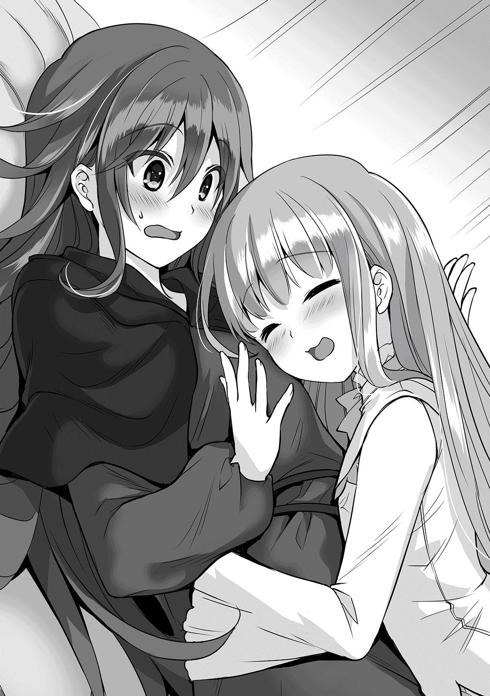

| 夜伽の国の月光姫5 | |
| V of夜伽の国の月光姫 | |
| 青野海鳥 | |
| TOブックス (2016) | |
国民的英雄・月光姫の暗殺から早２年。竜峰での生活にも慣れてきた美幼女セレネ（中身はおっさん）は、来たるべきイケメン王子との戦いに備えて、自分磨きに勤しんでいた。そこへ突然謎の美少女が現れる。なんと彼女は亡き呪詛吐きの弟子であり、月光姫の生存を知り、師匠の復讐のためにやってきたのだ。だが、そんなことに全く気付かないセレネは久々の美少女との触れ合いを心底楽しみ、いつも通りに勘違いを次々と連鎖させていく。――腹筋崩壊必至の復讐譚が、今幕を開ける！
Illustration：miyo.N
Design：5GAS DESIGN STUDIO
人間とエルフの交易が開始してからしばらく経つが、エルフ達が人間の街に滞在する時は、ヘリファルテ王宮の来賓室をあてがわれている。
「あー、なんか面白ぇ事でも起きねぇかな」
その一室で、ギィはベッドの上に転がりながら、真っ白な天井を眺めていた。
先日、セレネの依頼により怪しげな老人を退治した事はあったが、それ以外は、ヘリファルテに来て物品その他取引をして帰るだけである。平和なのはいい事だが、どうにも退屈だ。
「なら、私がいい事教えてあげよっか？」
「あん？」
気が緩んでいたせいか、ギィはすぐ近くに人影がいる事に気が付かなかった。さすがに緩み過ぎだと自省したが、声の主は見知った顔──ザナだった。
「お前な、部屋に入る時はノックくらいしろよ」
「したけど反応がなかったのよ。それより、面白い事教えてあげよっか？」
「面白い事？」
ギィが訝しげな表情で尋ねると、ザナは何故かご機嫌で答える。
「今日一日、あたしをエスカレートさせてあげる」
「エス......何だそれ？」
「あのね、王宮で働いてる女の子から聞いたんだけど、人間の男の子はね、女の子を連れて街とかを案内する文化があるんだって。それがエスカレートっていうらしいの。あんた、私にそれをやりなさい」
「そのエスコリーダとかいう奴、別に面白くなくね？ 何で俺が、お前を連れて街に行かないとならねぇんだよ」
「エスカレート！」
正解はエスコートである。
「人間の街にわざわざ付いてきてあげてる私に対して、ちょっと感謝が足りないんじゃない？ で、エスカレートさせてあげるって訳。どうせ暇でしょ？」
「上から目線だなぁ、おい」
などと毒吐きつつも、確かにギィは、ザナに感謝していた。いくらギィが豪胆とはいえ、全く違う文化圏の中、同郷で、心を許せる存在が側にいるのは心強い。
魔力の細かい扱いや、探知能力に優れたザナは護衛役としてもうってつけで、何より、女性の目線から色々とアドバイスをくれるのも、貿易の面ではありがたかった。
「......しょうがねぇな。ま、会議が始まるのは夕方からだしな。人間の街にエスカレーターしてやっか」
「だからエスカレートって言ってるでしょ......ま、いいわ。そうと決まったら、早速出かけましょ」
ザナが笑うと、ギィも苦笑しつつベッドから身を起こす。エスコートという概念はエルフにはないが、ザナには普段から世話になっているし、行動で感謝の意を示すのも悪くない。
人間との会議は、月光姫と呼ばれるセレネが活動する夕方からと決められていたので、昼前の今の時間帯なら、出歩いても支障はないだろう。
ギィもザナも特に用意する物はなく、ギィは金の入った袋を胸元に突っ込むと、エルフの民族衣装のまま出掛ける事にした。ギィに関しては鍋を被って出ていこうとしたのだが、ザナによって無理やり引っぺがされた。
「で、エスカレーターってのは何をすりゃいいんだ？」
「それを考えるのがあんたの役目でしょ。とにかく、あんたは今日一日あたしを楽しませるの。そうすれば、あんたも楽しめるって掃除役の子が言ってた」
「なんだそりゃ。人間ってのはよく分かんねぇな」
ギィからしてみれば、苦心して女を楽しませると何故自分が楽しくなるのか、理解不能だった。
ギィとザナが恋仲であればまだ理解出来たかもしれないが、二人は幼馴染みであり、恋愛対象というより、悪友といった方が近い。
とはいえ、一度やると言ってしまった以上、引っ込める訳にもいかず、とりあえずギィは、ザナを連れて街まで出る事にした。近くにいた召使いに、少し街に出てくると伝え、二人は長い廊下を歩いて馬車の所まで歩く。
その途中、寝ぼけ眼を擦った白い少女──セレネが廊下を歩いているのが目に付いた。セレネもギィ達に気付いたようで、寝巻き姿のまま近寄って来た。
「あれ？ セレネじゃねぇか。この時間に起きてて大丈夫なのか？」
「おなか、すいた」
少し前、たまたま目が覚めたセレネは、そのまま二度寝しようとしたのだが、今が昼前だと気付いたらしい。
そして、今なら出来たてほかほかの昼食にありつけるかもと考え、それをもらいに食堂に乱入する所だった。当然、食った後は夕方まで寝るつもりに違いない。
「おでかけ？」
「そうよ。今からギィと街まで行って、お店とかで豪遊するの」
「豪遊するとは言ってねえよ！ ただ、ちょっと飯を食ったり、店を見たりするだけだろ」
「めし!?」
飯を食う、という部分にセレネのセンサーが反応する。ヘリファルテ王宮の料理は一級品だが、いかんせん王族向けなので上品な味付けが多いのだ。
その点、街に行けばきっと屋台などがあるだろう。肉をぶつ切りにした串焼きとか、そういうジャンクフードもどきがあるに違いない。セレネはごくりと唾を飲む。
「ついてく！」
「え？ セレネ様も？ 身分の高い人は、あんまり平民の所に行かないって聞いたけど......」
「こいつ、あんまり王族って感じしねぇんだよな。俺は別に構わねぇぜ」
「あんたね、だからセレネ様には敬語使えっていってるでしょ！」
ザナは割と人間の文化に対し順応しているが、ギィの方はあまり関心がない。
これはギィがエルフの族長という部分が大きい。エルフ族の長であり、自身の文化にプライドを持っているので、必要以上に他の文化に干渉しようとしない面がある。
それはそれとして、セレネはギィの返答にご満悦だった。久しぶりに大雑把な物が食えると思うと、セレネの心はときめいた。安っぽいときめきである。
「駄目よ！」
「なにぃっ!?」
だが、突如後ろから声を掛けられ、セレネは慌てて振り向いた。物陰からセレネに語りかけたのは、マリーだった。マリーはセレネを睨みつけると、そのまま近寄り腕を掴む。
「セレネは街に行っちゃ駄目。夕方の会議の着付けをしなきゃならないんだから」
マリーはセレネの腕を離さず、そう言った。会議に出る時のセレネの正装は、着付けに時間が掛かるのだ。しかも、セレネが嫌がって暴れるので、余計に手間が掛かる。
夕方にならないとセレネが起きてこない事もあり、着付け係は、いつもギリギリの攻防を強いられていた。今のように時間が多く取れる機会を逃してはならない。
「ちょ、ちょっと、だけなら......」
「大体、まだ寝巻き姿じゃない。その格好で街に行けないでしょ？」
「いける、ぜんぜん、いける！」
「全然いけてない！ 駄目！」
転生する前のセレネは、普段着は半袖短パン、部屋ではパンツ一丁が正装だったので、今のフリルの付いた寝巻は、セレネの自己評価では九十点くらいの高評価だ。無論、マリーからすればゼロ点どころかマイナス三十点くらいである。
「じゃあ、かお、あらう、かみ、とかす、きがえる、もんだい、なし」
「そういう問題じゃないわよ！ 帰ってきてからじゃ間に合わないでしょ！」
どうあってもマリーはセレネを街に行かせるつもりはないらしい。だが、ここで諦めてしまえば、ジャンクフードへの輝かしい道が閉ざされてしまう。何としても、ギィとザナに付いていかねばならない。
「おさらば！」
こうなったら先手必勝。セレネはマリーの不意を突いて腕を振りほどき、走って横を通り過ぎる。とにかく街に行く馬車に乗り込み、後でギィと合流しよう。前にアルエの大学に行った時に使った戦法である。
「甘いわ！ 脱走ー！ 脱走よー！」
走り去るセレネの後姿を見ても、マリーは慌てなかった。マリーが「脱走！」と叫ぶと、出口の前に、メイド服姿の女性が何人も立ちはだかった。
「ぬぅぅぅ!?」
「前にセレネに騙されて以来、逃がさないように入口にある程度人員を割いてあるのよ！」
「お、おのれー！」
セレネは歯噛みし、後ろに身を引こうとするが、すかさず二人のメイドが前に出て、がっちりとホールドする。そのままセレネは、両手両足を担架のように掴まれ、宙ぶらりんにされた。
メイド達もセレネの扱いに慣れているようで、空中で空しい抵抗を続けるセレネをそのまま別室送りにした。
「ウワーッ！ はなせぇー！」
セレネは登場した直後に退場となった。こいつがいると話がややこしくなるので、今回の登場はここで終了です。お疲れさまでした。
「全く、手のかかる妹分で困っちゃうわ」
マリーはやれやれと首を振り、きょとんとしているギィとザナに振り向いた。
「騒がせちゃってごめんなさいね。あの子、動きづらいって巫女服着るの嫌がるのよ。あなた達、これから街に行くんでしょ？ 大通りなら色々お店があるから、そこに行くといいわ」
そう言って、マリーは赤いドレスを翻し、わめくセレネの後を追っていった。
「なんか......大変だな」
「まあ、セレネ様の気持ちもちょっと分かるけどね。あんなに小さいのに、自由に遊べないっていうのも可哀想ね......」
ギィとザナは、セレネの境遇を思うと、少しだけ神妙な気持ちになった。
実際には、セレネは別に遊びたい訳ではなく、屋台で売っているであろう焼き鳥だの焼き豚だのを食べたかっただけなのだが。
こうして、セレネはリタイヤしたが、ギィとザナは予定通り、馬車に乗って二人きりで城下町へと向かった。目的地は、マリーから聞いたヘリファルテの大通りである。
登場と同時に退場したセレネを放置し、ギィとザナはヘリファルテ王宮で用意された馬車に乗り、城下町の大通りに降り立った。道行く人々は、物珍しいエルフの男女に目を向けるが、族長として注目を浴びる事に慣れているギィは、平然としている。
「んじゃ、適当に散策すっか。......って、なに固まってんだ？」
「あ、あたし。人間の街に降りたのって初めてなのよね......」
夜の街を散策し、族長として皆を率いるギィと違い、ザナは基本的にギィにくっ付いている立場だ。城までは馬車やスキンクによる直通便。帰りも同様だ。人間の街に来たのは今日が初めてといっていい。
「おい、あんまりくっ付くなよ。歩きづれぇだろ」
「だ、だって！ あたし、こんなに人間がたくさんいる所、初めて来たんだもん。手、離さないでね！ 迷子になったらあんたのせいだからね！」
「お前の方が俺より勘がいいし、魔力の探知も上手いだろ。別にびびるこたぁねぇだろ」
「うっさいなぁ！ 怖いものは怖いの！」
「じゃ、帰るか？」
「それは駄目！ 人間の街には珍しい物が一杯あるってマリーが言ってたし」
ザナとしては、人間の文化に興味はある、けれど、人間の生態そのものはまだよく分かっていない。どちらかというと野生の掟に近い世界、白森で勘が鋭く探知に優れているという事は、常に辺りを警戒していないと気が済まないという事でもある。端的に言うと、ギィと比べ、ザナは慎重で臆病なのだ。
人ごみの中、ザナがギィの手を強く握ると、ギィはその手を握り返す。
「しょうがねぇな。じゃ、俺が適当にエスなんとかすりゃいいんだろ」
「う、うん......」
ギィの言葉に訂正もせず、ザナは大人しく手を引かれ、雑踏の中を歩いた。ギィはというと、昼間の喧噪に多少怯みつつも、大通りでザナの興味のありそうな物を探そうと目を光らせていた。
何でこんな事をしないといけないのか、自分でもよく分からないが、やるといった以上やらねばならない。
「凄いね。人間ってこんなに沢山いるんだ。あたし、何だか眩暈がしそう」
「だよなぁ。俺は大分慣れたけど、ここに住みたいとは思わねぇな」
ギィやザナをはじめとするエルフ達も、最近は人間に対する憎悪や警戒心を薄めつつある。けれど、一部の変わり物を除けば、やはりまだまだ生まれ故郷である白森の方が馴染む。この辺りは、時間が解決していくだろう。
エルフの物珍しさも相まって、ギィとザナが通ると人々は道を開けてくれた。というか、買い物よりもエルフ観察の方に興味が行くらしく、お陰で二人はすんなり歩く事が出来た。
「あ、あれ見て！ あれ！」
「ありゃ何だ？ 武器屋？ いや、金物屋か？ でも服とかも売ってるしな......」
歩いているうちにザナの警戒心も大分和らいだのか、突如、ザナがギィの手を引っぱった。ザナが指差した先には雑貨屋があった。服や日用雑貨、果ては甲冑のようなものまで扱う、掘り出し物を扱うタイプの店らしい。その中でも、ザナが目を奪われたのは、ブローチやネックレスなどの装飾品だった。
「よし、ここに決めた。この店で、あたしのプレゼントを選ばせてあげる」
「あのな、何で俺が買うのにお前が偉そうなんだよ。つーか、お前が好きなもんを選べばいいじゃねぇか」
「馬鹿ね、それじゃエスカレートにならないでしょ。あんたがあたしに似合う物を選ぶの。あたしは目を閉じてるから」
「分かった分かった。俺がいいと思う物でいいんだな？」
ザナは頷いて目を閉じた。よく考えてみれば、ギィとは幼馴染みだが、小さな頃から二人で同じ獲物を狩ったりするばかりで、ギィからプレゼントをもらった事は殆どなかった。一体、こいつは自分に何をくれるのだろう。ザナは期待に胸を膨らませる。
少しして、頭に何かかぶせられる感触がした。妙にごつごつして重い。ザナは目を開いて頭に乗せられた装飾品を手に取り、顔を歪ませた。
「これ、鍋じゃない!?」
「ああ、よく似合ってるぜ」
ギィは得意げな表情で、ぐっと親指を立てる。すかさずザナは、その鍋でギィの顔面をぶん殴った。鉄拳制裁ならぬ鉄鍋制裁だ。
「痛ぇな！ なにすんだよ！」
「そりゃこっちのセリフよ！ 鍋はないでしょ！ 鍋は！」
「待て！ その鍋の底の部分をよく見てみろ！」
「......横の部分？」
ギィが指さした鍋の底を覗くと、何か文字のような物が刻んであった。
「それは人間の名工が作ったブランド鍋だ。軽くて丈夫、しかも限定品らしいぜ！ 限定品！ すげぇな！ 俺が欲しいくらいだ！」
「おらあっ！」
ザナはもう一度ギィの顔面を鍋でぶん殴った。ぼこん、という鈍い音がした後、ギィは地面を転げ回る。
「うおおお！ 痛ってええええ！」
「確かに丈夫ね。全力でぶっ叩いても傷一つないわ。鍋は」
ギィの頬は腫れていたが、鉄鍋には傷一つない。なるほど、確かに一級品だ。
でも別にザナは鍋が欲しい訳ではない。鍋マニアのギィならともかく、こんな物をもらっても困る。
しかし、それ以上に困っていたのは雑貨屋の店主だった。いきなりエルフが店の前で夫婦漫才を始めた上に、商品の鍋で相方をぼっこんぼっこん殴っている。文句の一つも言ってやりたいが、何せエルフは国賓だ。下手に扱って、国を相手取るなんて事はしたくない。
「あの、何かお困りでしょうか」
その時、救いの女神が手を差し伸べた。その声の主は、薄桃色の簡素な服に身を包んだ、とても綺麗な金髪の娘だった。手には買い物かごを下げていて、中には食材が詰まっているようだった。
「あれ？ ええと、あんた確か......」
「アルエと申します。セレネがいつもお世話になっております」
セレネの姉アルエは、普段王女として着ているドレスではなく、こざっぱりした簡素な洋服に身を包んでいた。ちょっとした良家のお嬢様と言われても納得してしまうくらいの服装だ。
「お二人とも、何か揉めているようでしたので......」
「いや、ザナの奴が、エスニックがどうとかうるせーんだよ」
ギィは殴られた頬をさすりながら、もう片方の親指でザナを指差した。ザナは鍋を元あった位置に戻した後、ギィから距離を取り、一人で勝手に店内を物色していた。
「え、エスニック？ 何か食べに来てたんですか？」
「まあ、そんなところだ」
ギィの目的は主に食事なので、そう答えた。ザナはもうギィには目もくれない。どうやら、そうとう怒っているらしい。
「エスニック......それならいい方法がありますよ！」
アルエはにっこり笑って、両手の平をぽんと合わせた。
ギィとザナはアルエに誘われ、ヘリファルテ大学の寮までやって来た。学食やカフェなどの施設も当然あるのだが、各寮には備え付けの台所があり、自炊も出来るようになっている。
「ええと......あたし達、なんでこんなところに呼ばれた訳？」
「エスニックという事は、郷土料理のお店を探していたんですよね？ 私の故郷のものでよければ振る舞いますよ。こう見えて、私、料理は得意なんです」
「マジかよ。俺、丁度腹減ってたんだ。ありがてぇ」
「......なんか違う気がするけど。まあ、お昼時だしいいか」
目を輝かせるギィとは対照的に、ザナは何故こんな状況になったのか良く分かっていなかった。
ただ、ギィと散策している間に昼過ぎになってしまったし、ヘリファルテ以外の国の料理には興味があるので、結局エルフ二人組は、アルエの手料理をいただく事にした。
先ほどアルエが大通りにいたのは、食材を買うためだったらしい。今日は市場が開かれるので、そういう時、アルエは日持ちする物を大量に買い込んでいるとの事だった。その方が食費が安く済むらしい。
「けどよ、カネはミラノが全部出してるんだし、んなケチくせぇ事しなくてもいいだろ。あんた、お姫様なんだろ？」
「王子には十分過ぎる程よくしてもらってますし、あまり負担はかけたくないんです。それに、今は留学生です。何より、アークイラは辺境の地ですから。姫といってもたかが知れてますから」
アルエは喋りながらも、実に手際よく料理の下ごしらえを進めていく。野菜料理と肉料理を振る舞うつもりらしいが、たった一人で同時進行している。ギィとザナは、まるで手品でも見ているように、みるみるうちに姿を変えていく食材に目を奪われていた。
「なあ、ヘンキョーって何だ？」
「田舎って意味よ。エルフの集落でも大きいのと小さいのがあるでしょ？ 小さい奴の人間版でしょ」
「ふーん」
ザナの解説に、ギィは適当に相槌を打った。別に規模が大きい集落でも、そこに属する全員が立派ではない。その逆も然り。ギィは集団の規模にはあまり興味がないのだ。
「にしても、あんたもセレネもお姫様っぽくねぇよな。てっきり姫様って、マリーみたいな奴ばっかりだと思ってたぜ」
ギィが何となくそう言うと、アルエはそれまで手際よく動かしていた包丁を止め、自嘲するように笑った。
「そうですよね......私、あんまりお姫様って自覚がなくて。あの子と比べたら、私は特に優れた点とかありませんし」
「セレネと比べてか？ ありゃ確かに規格外だからな」
確かに、セレネは色々な意味で規格外である。主に悪い意味で。
「でもさー、アルエだって凄いじゃない。ミラノに聞いたけど、あんた優等生なんでしょ？ 自信持っていいんじゃない」
「そうでしょうか？ でも、私にヘリファルテは分不相応な気が......」
「このバカだってノリと勢いで族長やってるんだし、結局、国とか血縁とかじゃなくて、大事なのはあんた本人が何が出来るかなんじゃない？ 私、あんたの事好きだよ」
「つーか、どさくさに紛れて俺をボロクソに言うんじゃねぇ！」
ギィとザナの会話がおかしくて、アルエはくすりと笑った。それからまたアルエが調理を再開すると、今度はザナも手伝った。ギィはそのまま椅子に座っていたが、ザナに蹴り飛ばされ、無理矢理手伝わされた。アルエが作った料理は、ポトフのような煮込み料理だった。
「さあ、召し上がってください。見ての通り、家庭料理みたいな物ですけど」
「そんな事ないわ。これ、何だか懐かしい感じがする。エルフのあたしが言うのも変だけど、ほっとするっていうか」
「ふぉうふぁな（そうだな）」
「あんたは飲みこんでから喋りなさいよ！」
最初は王族らしく、豪勢な物を作ろうと気合を入れていたアルエだが、三人で作っているうちに、気を張らないで皆で食べられるような物にしようと考え直し、シンプルな煮込み料理となったのだが、なかなか好評らしく、アルエは胸を撫で下ろす。
「いつか、あたし達もアルエとセレネ様の故郷に行ってみたいわね」
「え、でも、本当に小さな国ですよ？ 殆ど森と畑ですし、『馬と鹿の国』なんて言われてますし......」
「馬と鹿？ いいじゃん。何か問題あんのか？ 白森出て初めて見たけどイカすデザインじゃん。魔力があれば連れて帰るんだがなぁ」
「ねー、アークイラ、きっといい国よ」
「ふふ、そう言ってもらえる日が来るなんて、思ってもみませんでした」
アルエは穏やかに微笑んだ。『馬鹿者の国』『最小国の田舎娘』というレッテルなど、エルフには全く関係がないのだ。最近、月光姫と呼ばれ、次々と偉業を成し遂げていく妹に対し、自分は何も出来ていないとアルエは内心焦っていた。
けれど、ギィとザナを見ていると、とても自然体で生きている事が伝わってくる。それを見ていると、アルエの心も軽くなる。自分以外の者にはなれないし、なる必要もない。ありのままを受け入れる。その事を、エルフという種族はよく分かっているのかもしれない。
──そうして、エルフ二人と人間の王女は、和やかな雰囲気でポトフを分けあった。
「今日はお会い出来て嬉しかったです。お礼を言わせて下さい」
「礼を言うのはこっちの方だ。飯も食わせてもらったし。道案内もしてもらったしな。お陰で何とか城に帰れそうだ」
「あんた、ひょっとして迷子になってたの!?」
「うるせーな！ 俺だってセレネに頼まれた時以外、殆ど一人で出た事なかったんだよ！」
というような会話を目の前にして、アルエはくすくすと笑った。ギィとザナは、何が面白いのか分からず、二人して顔を見合わせたが、アルエが呼んでくれた馬車に揺られ、ヘリファルテ城への帰路に着いた。
「あー、たまたまアルエが来てくれたから良かったけど、あんた最悪だわ。結局、全然エスカレートになってないしぃ」
トータルで見れば今日の出来事は悪くなかったが、肝心のギィのエスコートは最悪オブ最悪だった。ザナが不満げにそう呟くと、横に座っていたギィは、外套のポケットから、何か筒のような物を取りだした。
「ほらよ」
「えっ？」
完全に不意打ちだったので、ザナは目を丸くした。ギィが無造作にザナに渡したのは、小さな果物ナイフだった。魔力などは籠められていないが、鞘と柄の部分は象牙で出来ており、小さな装飾がしてある。
「首からぶら下げる宝石なんかより、そっちの方がお前向きだろ？ お前、リンゴ好きだし、買っといたんだよ」
「............」
ザナは無言でその果物ナイフをじっと見つめていた。確かに、下手な装飾より、ザナは実用的な物を好む。ザナは頬を緩め、ナイフを柄に納めると、きゅっと象牙のナイフを握った。
「いらないんなら返せ。俺が使う」
「やだ！ 絶対返さない！」
「なら、お前にやる」
「ギィ」
「何だよ？」
「エスカレート、ギリギリ及第点をあげる。ほんとギリギリだけど」
「そうかい。そいつはありがとよ」
ギィはそう言うと、ザナとは反対側の窓に顔を向けた。ほんの少し頬が赤くなっているように見えるが、西日のせいかは分からない。
「さて、それじゃ城に帰って。とっとと会議を終えて飯食って寝るとするか。今日の晩飯は何だろうな」
「あんた......昼間あんだけ食べて、まだ食べ足りないの？」
そんなたわいもない会話をしながら、馬車は穏やかに城への道を進んでいった。
余談だが、ギィをぶったたいた鍋は、殴られたギィ自身が頑丈さを気に入って購入した。これでギィの実家の大量の鍋コレクションに、もう一品加わる事になったのであった。
ヘリファルテ王国に次ぐ大国ヴァルベール。貧富の差が激しいこの国では、道を一本裏に回るだけで、がらりと風景が変わる事も珍しくない。
裏通りには怪しげな店が立ち並び、廃屋も数知れない。その裏寂れた通りの建物の一つ、草木も眠る丑三つ時、恐るべき集会が開かれようとしていた。
「ひい、ふう、みい......よし、全員揃っているな」
声は男のものだ。真っ暗な部屋の中には、弱い明かりを放つランプが数個置かれているだけだ。かろうじて、その男が、紳士然とした服装の初老の男である事が見て取れる。
男は、今から行われる儀式に欠員がない事を確認し、満足げに頬を歪めた。
「よし、ではこれより儀式を始める」
男がそう言うと、集まっていた者がぴんと背を伸ばす。数は十名ほど。皆、椅子に座っていて、闇に溶け込むようなローブを着こんでいるため表情は分からない。
「さて、今日は君達に嬉しいお知らせがあります」
男はもったいぶった様子で部屋の中を少し歩くと、振りかえって口を開く。
「今日は、君達に『呪い』を教えようと思います」
「「「やったー!!」」」
男が呪いと口にすると、黒いローブを着た者達が一斉に立ち上がる。その勢いでローブのフードが外れ、数人の顔が露わになる。皆、まだ年端もいかない少年少女ばかりだった。
そう、ここは呪われし一族の養成所。彼らは数が少ない代わりにとても結束力が強く、特に子供は大事にされる。表向きは『貧乏な孤児院』という名目になっているが、皆、ちゃんと両親もいて、それなりの生活をしている。
呪詛吐きをはじめとする大人達が、金持ちから巻き上げた裏金がつぎ込まれており、下手な金持ち学校よりよほど高度な教育も受けている。『幸福な呪われた養成所』なのである。
「俺、大きくなったら絶対にムカつく貴族を呪い殺すんだ！」
「わたし、早く魔獣が欲しいなぁ。カエルがいいな」
これまで呪いに対する知識しか教えられていなかった子供達は、初の呪い体験に大興奮だ。あれを殺したい、貴族から金を巻き上げたい、そういった輝かしい夢を語る子供達を、初老の男は微笑ましげに見つめている。何と朗らかな光景だろう。
「さて、では早速授業に入るが、今日は特別講師を呼んでいる。忙しい中、我ら一族の未来を背負う君達のためにと時間を割いてくれたんだ。感謝するように」
「特別講師って、誰ですか？」
利発そうな眼鏡の少女が手を上げると、男はにやりと笑う。
「お前達はきっと腰を抜かすぞ。では、特別講師の入場だ。くれぐれも失礼のないように。ま、そんな大それた事を出来る奴はいないだろうがね」
男が意味深なセリフと共に部屋から出て行くと、少しして、古びたドアが耳障りな音を立てて開かれた。そして、その開け放たれたドアよりも大きく、子供達の目が驚愕で見開かれる。
「じゅ、呪詛吐き様だ！」
「本当だ！ 本物の呪詛吐き様だ！」
ドアの前に立っていたのは、顔が地面に付くほど腰が曲がり、自分の背丈より大きな杖を持ったよぼよぼの老婆。だが、彼女こそ、呪われし一族の長であり、最強の呪術使い『呪詛吐き』である。呪われた一族なら、知らない者はいない有名人だ。
「すっげー！ 俺、生の呪詛吐き様を見るのって生まれて初めてだ！」
「私も初めて！ 感激ぃー！」
子供達は尊敬のまなざしを呪詛吐きに向ける。彼らにとって、呪詛吐きは世界最高の大魔術師だ。けれど、呪詛吐きは廊下に立ったままで、部屋に入ってこようとしない。
一体何事だろう。子供達は不思議に思い、首を傾げて静まり返る。
「......皆さんが静かになるまで、十五秒掛かりました」
しわがれた呪詛吐きの声に、子供達は緊張して強張る。
「だが、私が本気になれば、聖王子だろうが獅子王だろうが、三秒掛からず永久に静かに出来るがね。イッヒッヒ！」
「「「すっげぇぇぇえええぇ────!!」」」
呪詛吐きが冗談っぽくそう言うと、子供達は絶叫した。興奮冷めやらぬ子供達を横目に、呪詛吐きは子供達の前に用意された椅子に座り、円陣のような体制となる。
「よっこらせっ、と。歳を取ると立ちっぱなしはつらいんでね。悪いが座りながら講義をさせてもらうよ。さて、前もって言われていた物は用意しているね？」
呪詛吐きがそう尋ねると、子供達は「はーい！」と元気よく返事し、ローブの内ポケットから小箱を取りだした。中から何か蠢くような音が聞こえる。
「さて、今日は『蟲毒』を作るよ。そのために虫を捕まえてこいと言われていた訳さ」
「コドクかぁ、あれって一番初歩の奴でしょ？」
「私、魔獣が作りたいなぁ」
男の子や女の子がそれぞれ意見を述べるが、呪詛吐きはそれを遮るように手で制した。
「気持ちは分かるが、呪いは扱い方を間違えると自分に降りかかるからね。お前達は数少ない我ら一族の期待の若者なんだ。大事にじっくりやらんとね。何事も基礎が大事だよ」
呪詛吐きがそう言うと、子供達は訓練された犬のように即座に頷いた。彼らに取って呪詛吐きの言葉は、神のお告げに等しいのだ。
「では、まずは集めてきた虫を箱に集めるんだが......んん？ 何だい、バッタやダンゴムシばかりじゃないか。ムカデや毒虫がいないじゃないか」
「だって、刺されたり噛まれたら怖いもん」
子供達は申し訳なさそうに項垂れる。呪われし一族とはいえ、皆まだ十歳にも満たない子供ばかり。
呪いを覚えたい反面、恐ろしさもある。特に、蟲毒に使う虫はムカデやサソリといった獰猛なものが多いので、子供が捕まえるには少々荷が重い。
無論、呪詛吐きはそれも織り込み済みだ。呪詛吐きは彼らを責める事なく、微笑んだ。
「いや、これでいいさ。今日は初回だからね。工程だけ知ってればいい。むしろ最初はこれくらいがベストだろうよ。いいかい、まずはこうして......」
そうして呪詛吐きは講義を始めた。蟲毒は呪いの中では初歩のものだが、使い方や精製法、それに作り手の腕次第でかなり応用が利く。バッタやダンゴムシが大量に入り、虫かごみたいになった箱を覗き込みながら、呪詛吐きは虫の選定方法、最適な容器、触媒の混入のタイミングなどを丁寧に解説していく。
「難しくてよく分かんない」
「最初はそんなもんさ。ま、でも全く知らないのと、多少でも知っているのでは訳が違うよ。お前達はまだ殻の付いたヒヨコ。ニワトリになるには時間が掛かって当然さ」
呪詛吐きを中心として、円陣を組むように虫のうごめく箱を覗き込みながら、子供達は目を輝かせている。これで自分達も呪い使いの仲間入り。まだまだひよっこだと分かっていても、そんな気持ちが湧いてくるのだ。
「これで蟲毒の完成なの？」
「そんな訳ないだろう。準備が整ったら、呪う対象の触媒──例えば爪や髪の毛。それと、虫共が食い殺し合う時間が必要なんだ。呪いの道は地道な作業の積み重ねだよ」
「ええー、じゃあ今日見られないの？ つまんない！」
子供達から一斉に抗議が上がる。せっかく超一流の講義を受けているのに、これでは肩すかしだ。しかし、それも見越していたかのように、呪詛吐きはにやりと笑う。
「そう言うと思ったよ。だから、今日は完成品を用意してある」
「えっ！ ほんと!?」
呪詛吐きは、懐から小ビンを取りだして生徒達の前に置いた。中には巨大なムカデが入っており、ビンの中でおぞましく暴れている。
「おっと、手を伸ばしちゃいけないよ。ビンから少し漏れた呪力でも、子供なら体調を崩してしまうからね」
「すっげぇ......なんて魔力なんだ」
子供達は食い入るようにムカデを凝視する。普通の魔力持ち程度では感知出来ないが、呪われた一族は、呪力に対してとても敏感だ。ビンの中のムカデに、どれだけの力が籠められているか、手に取るように分かるのだ。
「これはあるお姫様から、ある女の子を殺してくれって依頼を受けて作った物でね。ま、かなり手を抜いたから、私の制作物の中じゃ三流さ」
「三流!? これで!?」
「お前達も大きくなれば、これくらい昼寝しながら作れるさ。それに、これ一個で平民の一年分くらいは稼げるからね。お貴族さまさまだよ。イヒヒ！」
「ほんとに!?」
「ああ、裏で呪いの力を欲しがる馬鹿貴族は山ほどいるからね」
虫一匹で平民一年分の稼ぎ。なんと夢のある話だ。それだけあれば、おもちゃやお菓子がどれだけ買えるだろう。子供達の呪われた希望はどんどん膨らむ。
「ま、私は金のためにやってる訳じゃないが、生きていくにはある程度は稼がにゃならんからね。さて、これで今日の講義は終了だが、最後に何か質問はあるかね？」
「どうすれば、呪詛吐き様みたいになれますか？」
子供達は聞きたい事は山ほどあったが、先ほどの眼鏡の少女がそう質問すると、皆、静まり返った。結局、皆が聞きたい質問はそこに集約するからだ。
「ほう、いい質問だね。そうだね......まずはうんと勉強する事だね。私は表向きは薬師という事になっているが、薬学は呪いに応用出来るからさ。それに算術や話術も必要だよ。上手く出来れば、さっき言った馬鹿な金持ちから、金をふんだくる事が出来るからね」
「他に何かありますか？」
「あとは心身を鍛える事だね。さっきも言ったが、呪いってのは扱い方を間違えれば自分に降りかかるが、体力と精神力を鍛えておけば跳ね返せるのさ。病気を治すのに薬を飲むより、なる前に予防しろって事さ」
要するに、勉強と運動をしっかりやれという事である。健全な肉体には不健全な魂が宿る。それが呪詛吐きの教育方針である。
「さて、他に質問がなければ以上で終了だよ。私は時間がないからあまり来られないが、お前達が立派な呪い使いになって、大陸を混沌の渦に投げ込む日を楽しみにしているよ」
呪詛吐きがそう言って椅子から立ち上がると、子供達も全員椅子から立ち上がる。
「私達！」
「俺達！」
「「「早く邪悪な呪い使いになって、大陸を滅茶苦茶にします！」」」
子供達が真顔で宣言すると、呪詛吐きは顔をくしゃくしゃにして笑った。
「そうかい。この老体にはその気持ちが一番嬉しいねぇ。じゃあ、悪い子のみんなにはご褒美をあげようかね」
「えっ」
呪詛吐きは蟲毒の入った小ビンを懐にしまうと、代わりに飴玉くらいの大きさの石ころを取りだした。何の変哲もないただの石ころを、子供達は一つずつ受け取り、不思議そうに眺めた。
「それは呪殺石と呼ばれる、蟲毒の簡易版みたいなもんさ。嫌な奴がいたり、お父さんやお母さんがつらい目に合わされたら、そいつの家の庭に放り込んでやりな。呪力は調整してあるから死にはしないが、ま、三日は高熱で悶え苦しむだろうよ。イッヒッヒ！」
「ほんとに!?」
「本当さ。証拠も残さずに復讐出来る。呪いってのは素晴らしいだろう」
「やっぱり呪詛吐き様はすげぇや！」
子供達はサプライズの呪殺石をもらって大喜びだ。丁度その頃に夜明けとなり、本日の講義は終了となった。もちろん、普段は健康で文化的な生活を送らせているが、呪いの授業に関しては夜の方がバレづらい。子供達は眠たそうにまぶたを擦りながら、寝泊まりしている二階の部屋へと戻っていった。
講義終了後、子供達を寝かしつけた初老の男が呪詛吐きの元へと戻って来た。彼は片膝をつき、呪詛吐きの前に跪く。
「呪詛吐き様、お忙しい中ありがとうございました」
「なぁに。丁度エンテに頼まれた蟲毒が完成した所さ。これくらいお安いご用さ」
「ありがたいお言葉です。何か私に協力出来る事があればいいのですが」
「今の所は特にないねぇ......全く、今の世の中は平和でつまらんよ。私が生きてる間に日除蟲を使う機会もなさそうだしねぇ。どこかに、あの秘術を使わせるくらいの逸材がいてくれるといいんだがね」
呪詛吐きはそう言って、寂しそうに笑った。日除蟲を発動させるには莫大な費用と準備が必要になる。いくら裏で呪いの需要があるとはいえ、今の時代は蟲毒程度が関の山。この調子では、彼女の生きているうちに禁術を使う機会は訪れそうもない。
「ま、もし蟲を作る事になったら、あんたには呪いを集める手伝いをしてもらおうかね。我らの一族以外なら、どうなろうと知ったこっちゃないからね」
「分かりました。もしその機会があれば、喜んでご協力させていただきます」
それからちょっとした世間話をして、呪詛吐きは呪われた託児所を後にし、我が家へと帰宅した。
『オイ、ババア！ メシダヨ！ メシ！』
「やかましいわ！ 私は徹夜で疲れてるんだ。その辺で適当に探してきな！」
『ソリャネェゼ！』
帰宅した直後、一晩ほったらかしで腹が減ったと騒ぐコクマルを無視し、呪詛吐きは自室に引っ込み、使い古してギシギシいうベッドに腰掛けた。そして、懐から蟲毒の入った小ビンを取り出すと、憎々しげに睨みつけた。
「全く。本当にくだらない世の中になったもんだ。たかが八歳の小娘を殺すのに、私が呪いを使うなんてねぇ」
エンテ王女の依頼で作った蟲毒は、ちんけな八歳の小娘に使うらしい。
若い頃は絶世の美女であり、多くの男を侍らせ、大陸の闇という闇を支配した呪詛吐き。それが今や、路地裏で薬師もどきをやりながら、小娘相手に呪いを使う。
「落ちぶれたもんだ。全く、せめて人生の最後くらい、一世一代の禁術を使ってみたいもんだねぇ」
呪詛吐きは溜め息まじりにそう呟くと、馬鹿げた考えを振り払うように首を振った。
──呪詛吐きの願いが叶うのは、これから半年後の事である。
セレネが東方から帰還して少し経ってから、ヘリファルテ宛てに荷物が届いた。大国ヘリファルテのご機嫌取りに、他国が貢ぎ物を送る事は珍しくないが、その荷物は一風変わった大きな箱であった。
「ふむ、これは......奴からでござるな」
部下から報告を受けたクマハチは、主に危険を及ぼす物がないかチェックする役割も担っている。だが、今回はあっさりと判定出来た。彼の出身国ではよく見かけるが、この国では殆ど見る事の出来ない編みかご──葛篭とよばれる衣服入れだったからだ。殆ど鎖国状態の国から、こんな物を送ってくる人物は一人しかいない。
クマハチは、部下の兵士達に命じ、とりあえずそれを城内の倉庫に運ばせ、ふたを開ける。中には綺麗に折りたたまれた色艶やかな着物が沢山入っており、一番上には手紙が入っていた。
クマハチは手紙の封を解き、目を通す。案の定、彼の兄──カゲトラからの貢ぎ物だった。手紙には、ヒノエを救ってくれた礼、およびマリーベル王女とセレネを危険な目に遭わせてしまった詫びをしたいというよう文章が綴られていた。
「とかなんとか言って、兄上の考えは大体分かるでござるがな......」
クマハチは口をへの字にしながらそう呟く。礼と謝罪というのは大義名分で、これはカゲトラの戦略だろう。要するに、「異国人であるにもかかわらず気の利く男」として、大国に認識されてコネを作っておきたいという訳だ。
手紙は二枚あったので、クマハチはそのまま二枚目に目を通す。一枚目は大陸共通語で書かれていたが、二枚目はクマハチの母国語だった。
大陸でこれを読める人間は少ない。つまり、ここから先はクマハチが読む事を前提に、かつ、あまり広めるなという意味だろう。
『どうせ今お前は、冷徹な兄は自分を売り込む事しか考えていない、なんと利己的な人間だ、とか考えているだろう』
「人の心を読むな！」
クマハチは思わず紙切れに突っ込みを入れていた。まさに今、そう思っていた所なのだ。たまにカゲトラは超能力者みたいな事をする。単にクマハチが読まれやすいだけかもしれないが。
『私とて、着物の数着程度で大陸一の王子が満足するとは思っていない。これはいわば囮。ミラノ王子に役立つ道具は別に用意してある。籠の底を調べてみろ』
渋面を作りながら、クマハチは着物が詰まった箱の奥に手を突っ込む。すると、何か小さな布のような感触があったので、そのまま引っ張り出した。クマハチの手の平に乗るくらいの小袋で、紐を解くと、中には小麦粉のような白い粉が入っていた。
『その粉は、先日捕らえた連中が持っていた物だ。巻き上げた方法は......内緒だ』
「先日の狼藉者といえば、『反転の薬』か」
ある程度予想は付いていたが、クマハチはさらに文面を読み進めていく。
『別に服用して死ぬものではない。ただ、数時間の間、思考が変わるだけで毒性も依存性もない。だからこそ発見しづらく厄介なのだがな。まあ、王子ともなれば、対外交渉に手間取る場合もあるだろう？ そういう時、これを使うといい。どれだけ傲慢な相手だろうがたちまち善人になる。その隙に条約を結び......』
そこまで読んで、クマハチは手紙を握りつぶすように畳んだ。兄のカゲトラは使えるものは何でも使う男だが、クマハチはそういった小細工を好まない。
「全く、こんな物を送って！」
「クマー」
「ん？ ああ、セレネ殿ではござらんか」
手紙に集中するあまり気付かなかったが、いつの間にか、倉庫のドアの入口に、セレネが立っていた。東方で刺身を食い損ねたセレネは、獲物を捕らえたライオンから横取りしようとするハイエナのごとく、贈り物の中に、ウニや海産物がないか漁りに来たのだった。
「おくりもの？」
「もちろん、セレネ殿にも綺麗な着物が届いているでござるよ」
「それは、いらん」
食いものがないと分かると、セレネは首を振って拒絶の意を示す。
（やはり、セレネ殿はあまり物に執着がないのでござるなぁ）
今ではヘリファルテでも一目置かれる存在だというのに、セレネは一向に服や宝石などを欲しがらない。もう少し欲を出してもいいのにとクマハチは思うが、それがこの少女の美徳でもある。
セレネは本当に服飾に興味がないだけで、煩悩が服を着て歩いているような存在なのだが。
「何にせよ、ヘリファルテ王国宛てに届いた贈り物を、拙者が勝手に弄る訳にはいかんな......着物はさておき、この危険物はどうしてくれようか」
「きけん？」
危険物、というクマハチのセリフを聞き、セレネがクマハチの元に足早に駆け寄る。
「ああ、セレネ殿には一応伝えておいた方がいいでござるな。うちの馬鹿兄が毒物まで一緒に送って来たのでござるよ。これはさすがに処分せねばなるまい」
「それ、やばい？」
「命に別条はないが、精神に作用する薬でござる。決して触ってはいかんでござるよ」
クマハチは、セレネに対し、敢えて「これは危険な薬だ」と説明した。下手に隠して興味を持たれるより、頭脳明晰なセレネなら、前もって話した方が触れないと考えたからだ。
「とりあえずミラノ王子に報告せねばな。繰り返すが、その袋に触ってはいかんでござるよ」
「うん」
クマハチは反転の薬の入った袋をセレネの手の届かない棚の上に置き、ミラノに報告するため倉庫を出ていった。
その五秒後、セレネは踏み台代わりに椅子を用意し、速攻で危険物に手を伸ばす。
以前、ヴァルベールでもらった薬は没収され、結局セレネが使う事は出来なかった。あの薬は一体どうなったのだろう。何にせよ、王子に対する強力な武器が手に入る千載一遇のチャンスである。
「あ！ もってったら、ばれる......」
椅子に乗り、背伸びして布袋を手にしたセレネは、白い粉末を見てぎらぎらと目を輝かせる。だが、このまま持ちだすのはまずい。セレネは悪い頭で必死に知恵を絞り、妙案を思いついた。
「こむぎこ、こむぎこだ！」
セレネは踵を返し、調理場へ急ぐと、似たような布袋を探し、中に小麦粉を詰めて倉庫へ舞い戻る。これで外見上は全く区別が付かないダミーの出来上がりだ。
後は倉庫の薬と入れ替えればいい。セレネはすぐに倉庫に戻ると、早速、先ほどの袋を掴む。
「セレネ、何してるの？」
「おわぁっ!?」
両手で袋を掴んでいたセレネは、突然声を掛けられ、飛び上がるほど驚いた。とっさに両手を後ろに回し、体で袋を隠す。振り向いた先にいたのは、赤いドレスに身を包んだマリーだった。
「あ、分かった！ カゲトラから送られてきた着物を物色してたんでしょ！ セレネはあんまり服飾センスがないから、後で私が選んであげるわ。それまで待ってなさい」
「う、うん！ いい、それで、いい。どうでもいい！」
セレネは壊れた人形みたいに首を縦に振った。幸い、ギリギリの所で薬に手を出している所は見られなかったらしい。マリーはセレネの返答に満足し、「兄さまを呼んでくるわ」と言い残し、その場を去った。
「ふぅ......あ、あれ!?」
一難去ってまた一難。再びセレネに対し、間抜けな危機が迫る。
「ウワーッ！ どっち!? わからん!?」
反射的に袋を両方掴んでしまったせいで、どっちが小麦粉で劇薬なのか、全く判別が付かなくなった。急にマリーが来たので対応出来なかった。
セレネはとりあえず袋を手近な棚の上に置き、睨むように眺めた後、両手で頭を抱える。
左っぽい気がするが、右だったかもしれない。よくよく見れば微妙な紐の違いなどで十分気付けるのだが、鼠を飼っているセレネは鳥頭の持ち主なのだ。
「そ、そうだ！」
その時、セレネの脳裏に電流が走る。舐めて確認すればいいじゃないか。過去世でセレネが読んだ探偵漫画で「これは......麻薬!?」と舐めて判断するシーンがあったはずだし、問題はないだろう。色々突っ込みどころが多いが、セレネの知識だとそれくらいしか判定方法がなかった。
早速、左の袋を開き、人差し指に粉を付け、小さな舌でちろりと舐める。
「はうあっ!?」
瞬間、セレネは雷に打たれたように身を振るわせ、石畳の上にぺたんと座りこんだ。
「その声は......セレネか？」
「......おうじ？」
呆けたように女の子座りをしているセレネが振り向くと、今度はミラノが怪訝な表情で見つめていた。
「クマハチとマリーに言われて確認に来たのだが、床に座り込んでいたら服が汚れるぞ」
「............」
「セレネ？」
セレネは、ミラノの顔をじっと見つめ──いや、見とれていた。中性的でありながら、最近どこか大人びてきた端正な顔立ち。あまり日当たりのよくない倉庫の中で、入口から差し込む薄日がプラチナブロンドの髪を輝かせ、まるで後光が射しているように見えた。
「どうした？ 頬が赤いぞ？ 熱でもあるのか？」
「ひゃ!?」
心配そうにミラノがセレネを歩み寄り、屈んで額に手を当てる。セレネの肌は真っ白で、紅潮すると普通の人より赤くなる。もちろんセレネは病気ではなく、一時的な発作である。つまり、気が狂っていた。
「クマハチから聞いたが、カゲトラ殿が気を利かせて厄介な物を持ち込んだらしいな。僕も詳しくは聞いていないが、気軽に倉庫に入ってはいけないぞ」
ミラノは少しきつめにセレネに言い聞かせた。クマハチと違い、ミラノはどちらかといえば心配性である。もちろん、セレネが聡明である（ように見える）事はミラノも理解しているが、それでも子供は子供というのがミラノの考え方だ。
「セレネ、聞いているのか？」
セレネはミラノの目をじっと見るだけで、全く反応がなかったので、もう一度尋ねた。すると、不意にセレネの瞳に大粒の涙が浮かんだので、ミラノはぎょっとした。
「ど、どうした!? 僕が何か気に障る事を言ったのか!?」
「ちがう......わたし、わるいこ」
しゃくり上げながら、セレネは大粒の涙を両手で拭い、ついに大声で泣き出した。
ああ、見目麗しく高貴な男性が、こんなに優しく気を遣ってくれている。だというのに、今までの自分は、その恩を仇で返そうとしていたのだ。なんと浅ましく、醜い魂だろう。
セレネは、自責の念で押しつぶされそうだった。見事ハズレを引いたセレネは、完全にトリップし、恋に恋する乙女の心を美幼女の身に宿したおっさんという、世にも奇妙な生物へ変わり果てていた。
「別に僕は、お前の事が心配だっただけで怒った訳じゃないんだ。だから、そんなに謝る必要はない。泣きやんでくれ」
ミラノは繊細なガラス細工に触れるように、そっとセレネの頭を撫で慰めるが、セレネはただ、「ごめんなさい、ごめんなさい」と泣きじゃくるばかりであった。
（もしかして、僕は、この子の一番柔らかい部分をえぐってしまったのか？）
普段、超然と振る舞うセレネが、こんなに子供っぽく泣くのを見たのは初めてなので、ミラノは困惑していた。
竜に連れ去られても平然とし、エルフとの会議でも堂々としている彼女が、倉庫で少し注意されただけで何故、こんなにか弱くなってしまうのだろう。その答えは、ミラノには、一つしか思い浮かばなかった。
──自分はセレネの心の傷を抉ってしまったのでないか、と。
周りを見回すと、ここは少し薄暗い。日に当てると色褪せてしまう絵画などもあるため、カビが生えない程度には換気出来るようにしてあるが、基本的には冷暗所になるよう設計されている。
そして、この場所は、セレネの監禁されていた場所に少し似ている。彼女は、アークイラ王国のカビの生えた倉庫に何年も押し込められていたのだ。姉が稀に尋ねてくる以外、殆ど誰も来ない暗い部屋に。
母親すらも彼女を忌み嫌った。きっと罵声の言葉を浴びせたられた事だってあるだろう。その記憶がフラッシュバックしてしまったのでは。ミラノにはそうとしか考えられなかった。
（でなければ、こんなにごめんなさいと謝る理由がない）
出来るなら、ミラノは自分自身を怒鳴りつけてやりたい心境だった。最近は表舞台に立たせていたが、元々この子は、僅かな月光の下で生きてきた少女なのだ。それを知っていたはずなのに、何故、自分は、こんな暗い倉庫で彼女を責めてしまったのだろう。
「セレネ、少し外へ出ないか？」
「おそと？」
「そうだ。セレネはいつも昼は寝ているだろう？ たまには昼の街に出てはどうだ？ 僕がエスコートする」
「ほんとに？」
セレネが不安げな表情で見上げると、ミラノは安心させるように微笑んだ。放っておくと、いつの間にか暗闇に飲まれてしまいそうなお姫様を、ミラノは少しでも日向に出してやりたかった。
普段なら「ワオオーッ!!」とか叫びながら、獣医の予防接種に全力で抵抗する犬みたいに暴れるセレネだが、状態異常のせいで、今のセレネは世界一清らかな心を持った少女と化していた。
だから、セレネは照れくさそうにはにかみながら、ミラノの差し出した手に、そっと小さな手を絡めた。
ミラノに手を引かれ、セレネはもじもじしながら廊下を歩いていた。ミラノは、セレネの歩幅に合わせるようにゆったりと進み、城の入口にある馬車の所へやって来た。
「ばしゃ？」
「ああ、たまには外に買い物でも行くのもいいかと思ってな」
ミラノが手近にいる御者に指示を出すと、御者は、馬車をミラノとセレネの前まで運んできた。御者台から降りて馬車のドアを開けようとした部下を制し、ミラノ自らドアを開く。
「さあ、どうぞ、麗しきお姫様。なんてな」
ミラノが悪戯っぽく笑うと、セレネは頬をリンゴのように赤らめる。だが、決して嫌ではないようで、しずしずと馬車に乗り込んだ。続いてミラノも乗りこむ。
「では、城下町の大通りへ向かってくれ。細かい事は進みながら考える」
ミラノが御者に指示を出すと、御者は馬を操り、ヘリファルテの整えられた庭園をゆったりと進んでいく。夏から秋へと移るこの季節は、一年の中で最も麗らかな時期の一つだ。
微かに残る夏の匂いを感じながら、セレネとミラノはのんびりと馬車を進め、目的の大通りへと辿り着いた。
市民達は大鷲の紋章の着いた馬車に興味を引かれたようだが、元々この国は王族と市民の距離が近いため、それほど大騒ぎにはならない。マリーもよくお気に入りの洋服屋に出入りしているし、シュバーンやアイビスも、下町の職人工場などを視察したりもする。
だが、ミラノに手を引かれながら、そっと降りてきた白い少女を見て、市民達は一瞬どよめいた。巷で噂になっているが、殆ど街には現れない謎の少女のお出ましだったからだ。
「ぴゃ!?」
周りの声に驚いたのか、セレネは慌てて馬車に引っ込んだ。ミラノが苦笑しながらセレネに二言、三言声を掛けると、セレネは辺りを警戒する子ウサギのように、おっかなびっくり馬車から降りる。その様子を、市民達は微笑ましげに見守っていた。
「そういえば、セレネと街を歩くのはヴァルベール以来だな」
「うん」
信じられない事だが、セレネはまっとうに返事をした。今のセレネは完全に精神を薬でやられており、人格を悪魔に支配されている。つまり、ごく普通の臆病な少女に過ぎないのだ。
「ひぃっ!?」
「ど、どうした!?」
だが、次の瞬間、セレネはミラノの腰にしがみついた。別に以前のようにバックドロップを仕掛けようという訳ではなく、純粋な恐怖でミラノに抱きついた。
──何でヒロインの行動に、いちいちこんな解説をしなければならないのか。
「あ、あれ......！」
「あれ？」
セレネが震えながら指差した先には、露店があった。どうやら串焼き肉を売っているようで、ソースに漬け込んだ焼き肉が香ばしい匂いを放っている。通常モードのセレネなら、フリスビーを追う犬のようにダッシュしていくだろう。
「あれ、こわい......」
「怖い？ 露店がか？」
「おにくが」
（そういえば、セレネはヴァルベールで鳥の皮を食べさせられたのだったな......）
あの時の体験が、やはりセレネにとってトラウマになっているのだろう。ミラノはセレネに露店を見せないよう自分の体で隠しながら、再びセレネを馬車に乗せ、反対方向に進むよう御者に指示をする。
「あまり食べ物に関する店には行かない方がいいな。何か欲しい物はあるか？」
「いらない。まんぞく」
今のセレネは本当に何もいらないようで、ただミラノと馬車に揺られ、街を歩いているだけで幸せそうだった。ミラノとセレネは二人ともしばし無言で、あてもなく馬車で適当に街の人々の生活を見ているだけだ。お互い何も喋らなかったが、決して嫌な沈黙ではなかった。
「すまないが、少し馬車を停めてもらえるか？」
しばらく城下町を進んでいたが、不意にミラノがそんな事を呟いた。御者は指示通りに馬車を止める。
「セレネ、少し寄りたい所があるのだが」
「うん、いいよ」
再びミラノはセレネの手を引き、彼女がバランスを崩さないよう支えながら馬車を降りる。
「ここは？」
「宝石店だ。といっても、それほど大きい店ではないがな」
ミラノの言う通り、目の前には、小さな、けれど落ち着いた雰囲気の宝石店があった。木造の建物で、随分年季が入っているのか、建物自体は決して立派ではない。だが、ところどころ丁寧に修繕されているのを見ると、この店を営む主人の人格が見てとれるようだった。
「月並みで申し訳ないが、何か綺麗なアクセサリでもプレゼントしようかと思ってな」
「でも、おたかい、でしょう？」
「この辺りは旅人もよく寄る場所だからな、それほど高価な代物はないはずだ」
希少な宝石や、魔力の籠った道具などの高額商品を扱う店は城に近い物が多い。すぐ近くに衛兵の詰め所などがあるため、盗難対策が厳重なのだ。
その点、今目の前にあるこの店は大通りの隅の方にあり、グレードもそれほど高くない。それなりに高額ではあるが、市民でも十分手の届く商品を取り扱っている。どちらかというと土産物屋に近い。
ぎぃ、と古びた木のドアを開け、二人は中に入った。店内は掃除が行き届き、ドアを開けると日の光が差し込み、宝石達が来客を歓迎するように輝いた。
中にいたのは品の良い老夫婦で、ミラノ王子とセレネが姿を現すと、腰を抜かすほど驚いた。
「あらあら、まさか高貴な方々がこんな店に来るなんてねぇ......長生きはするもんですねぇ」
「ばーちゃ、なかないで」
老婆は感激のあまり涙を流したが、それを老夫とセレネが優しく宥める。ミラノはその様子を後ろで微笑ましげに見守ると、店内をぐるりと見回し、宝石一つ一つに付いている値段を見た。
（予想通り、値段はそれなりといった所か。これなら問題ないだろう）
店内には、色鮮やかな宝石が所狭しと並べられていた。どれもペンダントやブローチに加工されているが、小さめの物ばかりで、店相応の商品が並んでいる。そして、それがミラノの狙いでもあった。あまり高い物は、セレネが遠慮して受け取らないだろうと考えたからだ。
実際には、セレネは高いとか高くないとか以前に、食べられない鉱石に興味はない。宝石より打製石器の方が実用性があって好きなのだが、錯乱中のセレネは煌びやかな宝石を見て顔を綻ばせていた。宝石の持つ価値ではなく、純粋に美しい物を見た感動からである。
「何か好きな物を選ぶといい」
「ほんとに？」
「これだけ歓迎してもらって、店にひやかしで入る訳にはいかないだろう？」
「うー......」
セレネはまだ遠慮していたが、少し悩んだ後、小さなブローチを一つ選んだ。金縁に彩られた瑠璃色のそれは、ミラノの髪と瞳によく似ていたからだ。
ミラノはその装飾の意味に気付いたが、それを口に出すと、セレネがそっぽを向いてしまいそうなので、黙ってそのブローチを購入した。
「これで満足か？」
「あ、ありが......うっ!?」
セレネがそのブローチを受け取った瞬間、不意に顔を顰め、ブローチを持っていない方の手で頭を押さえ、床に膝を付く。
「ど、どうした!? セレネ！ 大丈夫か!?」
「ずつうが、いたい......」
ミラノが何か叫んでいるが、セレネには薄く膜が掛かっているように聞こえていた。そして、自分の体が、細身ながらも鍛え上げられた腕で抱き上げられた所で、セレネの意識は途切れた。
セレネが倒れると、ミラノは狂ったように馬車を走らせ城へ舞い戻り、城の医師の元へ駆けこんだ。ミラノは生きた心地がしなかったが、幸い、セレネは軽い熱を出している程度だと聞き、ほっと胸を撫で下ろした。
「もう！ 兄さまったら！ あんまりセレネを昼間に連れ回しちゃだめじゃない！」
「返す言葉がないな......」
そして今、ミラノはマリーの前で絶賛お説教され中だった。いつもと真逆の立場だが、今回ばかりはミラノは反論出来なかった。医師曰く、日光に弱いセレネを昼間に連れ回したせいで、軽い熱射病を起こしたのではという診断だったからだ。
確かにセレネが日差しには弱いのは事実だが、それよりも惰弱な精神の方に問題がある。肉体的には別に病気でもなんでもない。単に「反転の薬」の効果が切れた事で、脳に一次的な負担が掛かっただけである。
普段あまり運動しない人間が筋肉を使うと、すぐに筋肉痛になったり足がつったりするが、あれの脳味噌バージョンと考えると多少分かりやすい。
「でもまあ、セレネは満足したみたいだし、許してあげるわ。ちゃんとセレネが起きたら謝るのよ？」
「何でお前にそこまで指示されなければならないんだ」
「だって、兄さまって意外と女の子の扱いが下手なんだもん」
「分かった。少し様子を見てくる。起きているようなら、お前の言われた通りにするよ」
ミラノはマリーから「行ってよし」の合図をもらい、妹の部屋を出た。
それとほぼ同時に、セレネは目を覚ました。セレネは目を擦り、かぶりを振って状況を確認する。
「あれ？ いつ、ねた？」
セレネは人間の怠け者であるが、その気になれば猿のナマケモノ並に寝ていられるので、昼夜逆転は当たり前。おまけに寝起きも悪い。頭にスペックの低いハードディスクを積んでいるので、起動──つまり現在の状況把握に時間が掛かるのだ。
窓から差し込む日の光から、既に夕刻になっているようだが、昼間の記憶が殆どない。確か、地下室に変な薬を取りに行ったはず。
「へんなくすり!?」
大変だ！ こんな所で寝ている場合ではない。セレネは上半身をベッドから起こし、再び地下へ向かおうとするが、ふと、ある異変に気付いた。
「なんじゃ、こりゃ？」
手の中を見ると、見知らぬ青いブローチがあった。寝ている間ずっと握っていたらしいが、出所がさっぱり分からない。
『姫！ 気が付かれましたか!?』
「あれ？ バトラー？」
声のした方向に目を向けると、セレネのベッドの下から、バトラーが心配そうに見上げているのが見えた。
『申し訳ございません。日中は城の裏側を見回っておりまして、駆けつけるのが遅くなりました。姫が倒れたと聞いて心配していたのです。お加減はいかがですか？』
「だいじょうぶ」
『ところで、そのブローチは？』
「これ？」
セレネは手に持ったブローチを再び見た。どこでこれを手に入れたかさっぱり記憶にない。今朝は持っていなかったし、日中寝ていたと考えると、薬を探しに行った時に持って帰ってきたという事になるが、その辺の記憶が曖昧だ。
「やばい......」
バトラーに聞こえないように、セレネは口の中でそう呟いた。何にせよ、城の物を勝手に持ってきた事は間違いない。つまり窃盗だ。粉薬なら使えば分からないが、現物を持っていて「記憶にございません」なんていっても言い逃れ出来ないだろう。
「バトラー、これ、あげる」
『えっ!? これを私にですか？』
「うん」
セレネは持っていたブローチを超高速でバトラーに与えた。
というか押し付けた。自分が持っていたら犯罪者扱いだが、鼠が持ってきた事にすれば言い訳出来るという、姑息な考えである。
『あ、ありがとうございます！』
しかし、バトラーは主君からの贈り物にご満悦だ。昼に主がミラノと宝石店に行った事は、バトラーは既に把握していた。
そして、このブローチがそれほど高額ではない事は、バトラーの審美眼で見抜けた。主人を飾るには物足りないが、矮小な鼠の自分には身に余るほどの光栄だ。
そこまで考え、主は自分のためにこのブローチを選んできてくれたのかもしれない。そう考えると、バトラーの胸は熱くなった。
『姫のご厚意。このバトラー、謹んでお受けいたします』
「お、おう......」
バトラーはブローチを両手で抱え、天の神に捧げるようにセレネに向ける。セレネは何が何だかよく分からないので、曖昧に笑って流した。
「......鼠のおもちゃになってしまったか」
そんな一人と一匹の様子を、ミラノはドアの隙間から苦笑しながら眺めていた。セレネの様子を窺いにきたのだが、何やら話声が聞こえたので、そっと覗いていたのだ。
部屋の中では、ベッドの上のセレネが飼い鼠に優しく話しかけていた。鼠はブローチに興味を示し、まるで人間が会話しているように、きいきい鳴いていた。
ドアから距離があるので、セレネが何を呟いているかはまで分からなかったが、少し悩んだような様子を見せた後、自分の持っているブローチを鼠に与えてしまった。
鼠の方は新しいおもちゃに興奮したのか、両前足で、ブローチをクルミを抱えるように持っている。
「セレネらしいといえば、セレネらしいな」
ミラノは一人笑った。自分で欲しがったブローチだというのに、鼠にすら与えてしまう。きっとセレネは、そういう性質の持ち主なのだろう。
「やはり、救われているのは僕の方かもしれないな」
自分はセレネを暗闇から救い出したつもりだったが、そのセレネによって救われたのは自分自身なのだろう。そんな事を思いつつ、ミラノは場の空気を乱さぬよう、その場を後にする。
「そうだ、例の危険物を処理しておかないとな」
セレネの事で後回しになっていたが、クマハチの報告では、あの地下室には危険な薬があるという。ミラノはそのまま地下室に向かい、怪しげな二つの袋を発見した。そして、それをすぐに焼却処分してしまった。
翌日、セレネが再び地下室へ向かうと、袋は両方とも消えていて、ムンクの叫びみたいなポーズを取った。さらにその後、ミラノがそれを燃やしたと知り、また先手を打たれた事に発狂するのだが、それはまた別の話である。
白森。暖かな日差しが降り注ぐ新緑の季節でも、魔力の影響で草木が雪を被ったように純白に染まる、美しくも不思議な樹海。その中で、何か黒い染みのような物が地面にへばりついている。
よくよく見れば、それは染みではない。倒れ伏し、今にも息絶える寸前の一人の少女だった。人どころかエルフすら殆ど入らない白森の最奥部。暖かな日の光と、穢れなき白を拒絶するような真っ黒なローブに身を包んだ少女は、憔悴し、指一本動かせないようだ。
『お、おい！ シンニ！ くたばるんじゃねぇ！ お前が死んだら誰が俺の世話するんだよ!?』
その横で、一羽のカラスがシンニと呼ばれた少女に対し、自分勝手な応援をしている。普通の人間にはガアガア鳴いているようにしか聞こえないが、シンニには、カラスの言葉がはっきりと理解出来ていた。
「ちくしょう......」
シンニはカラスの言葉を無視し、ぽつりと呪詛の言葉を吐く。もはや立つ気力も体力もない。彼女の持っていた大きな樫の杖と、僅かばかりの荷物の詰まった袋が、白い草の上に散乱している。
無謀な旅である事は自覚していた。馬鹿げた行為である事も把握していた。誰にも理解されない理由である事も分かっていた。けれど、彼女の中に燃え立った衝動は、その無謀で、馬鹿で、理解されない旅をさせるには十分な動機だった。
シンニが倒れている場所は、白森にはるか昔から住んでいるエルフですらも近寄らない「竜峰」と呼ばれる土地に極めて近い場所。熟練の人間の冒険者、エルフですらあまり近寄らないこの場に、少女がただ一人......いや、一人と一羽でここまで来られたのは、前人未到の奇跡といってよい。
「ちくしょう......あと、少しなのに......」
けれど、少女は再び呪いの言葉を吐いた。彼女は冒険者でも、未知の世界を知りたがる探究者でもない。竜峰に辿り着くだけでは駄目なのだ。たった一つの目的を果たす。そのためだけにここまでやって来た。
最後の気力を振り絞り、立ち上がろうとするが、ほんの少し身じろぎするのが関の山。その動きでフードがずり落ち、彼女の顔が露わになる。年齢はせいぜい十二、三歳程度。無造作に伸ばした燃えるような赤い髪と、黒曜石のような瞳を持つ、端正な顔立ちの少女だった。
『だからやめろっつったんだよ！ おい！ 死ぬな！ 俺を一人にするんじゃねぇ！』
カラスがシンニの耳元で怒鳴る。それが自分の意識を途絶えさせないためか、一羽で密林に置き去りにされる恐怖から来たものか判別が付かない。恐らく後者だろうと思ったが、そんな事はどうでもよかった。
「はは......」
地面に突っ伏したまま、シンニは口元を少しだけ歪め自嘲した。なんと無様なのだろう、と。
「あいつを殺すまで......死なないって決めたのに」
自分の不甲斐なさを笑った後に来たのは──怒り。ありとあらゆる物に対する憎しみだった。自分から大切な物を奪った不倶戴天の敵は、竜峰にいるというのに。
そいつを殺すためだけに、白森という魔境へ飛び込んだ。けれど今、自分はその森の養分となろうとしている。誰にも見られず、気付かれず、何も成し遂げられないままで。
無駄死にもいい所だ。だが、そういうものなのかもしれないと、シンニはどこか納得もしていた。
自分は呪われた一族だ。呪われた者には、暗い末路が相応しい。彼女の敬愛する師匠もまた、呪いの代償で竜の怒りに触れて死んだのだから。
この清らかな白い森の中、真っ黒な自分は、美しい芸術品にこびりついた汚れのようなものなのだろう。汚れは拭きとられるべきだ。そんな考えが、少女の脳裏に浮かんでは消えていく。
「ごめんなさい......呪詛吐き様......」
結局、自分は出来そこないだったのだ。自分に目を掛け、育ててくれた師匠の名を、シンニはぽつりと呟いた。けれど、それで何がどうなる訳でもなく、余計空しくなっただけだった。
こんな人外魔境の森で助けを求めて、誰が来てくれるというのだろう。ここにいるのは野獣だけだ。馴れない長旅で弱った人間の女など、格好の獲物だろう。自分の死を看取るのは、ひねくれた喋るカラスのみ。
ある意味、自分には相応しい幕引きなのだろう。シンニはそう考え、生への執着を放棄しようと目を閉じた。
「だいじょうぶ？」
だから、突如目の前に現れた、長い白髪の少女が自分を覗き込んでいるのに気付いた時、お迎えの天使が来たのだろうと、赤毛の少女は本気で思い、すぐに否定した。
自分を迎えに来るのなら、もっと醜悪な死神だろうと思ったからだ。
シンニの意識は朦朧とし、視界は霞んでいる。だから、これはきっと死ぬ前の幻覚なのだろう、そう考えた。けれど、白い少女が細い指で自分の頬に触れた時、長らく感じていなかった人の温もりを感じ取れた。
自分と真逆の可憐な白い少女は、白森の木漏れ日を浴び、全身がうっすら輝いているように見えた。そして、傷ついた自分の体を労わるように、全身を撫でまわす。恐らく容態を確かめているのだろう。となると、この少女は自分を助けようとしているらしい。
シンニは今にも意識を失いそうで、自分に対し行われている事が現実なのか、はたまた死ぬ前の妄想なのか自信が持てなかった。心配そうに自分を覗き込む深紅の双眸は、まるでルビーのように美しかったが、それよりも、彼女の肩にいる一匹の動物が、強烈に映った。
（......鼠？）
そう、それは間違いなく鼠だった。黒い毛皮でお腹の部分だけが白く、胸元に赤いリボンを結んでいる。それを見た途端、シンニは目の前にいる少女が、天使や女神の類ではなく、間違いなく現実の存在であると理解出来た。そして、この少女こそ、シンニが探し求めていた──。
（......セレネ＝アークイラ！）
シンニは自分に手を差し伸べた存在が、仇敵であると理解した。
やっと会えた。やっと見つけた。やっとこいつを殺せる機会がやってきた。だというのに、シンニは、攻撃をするどころか、意識を保っている事すら難しかった。なんともどかしい事だろう。
「ちくしょう......必ず......お前を殺してやる......！」
掠れる声で少女はそう呟いた。恐らく、月光姫セレネには届いていないだろう。だが、どうやらお優しい月光姫様は、自分を助けてくれるらしい。ならば、思いきり恩を仇で返してやろう。そこまで考え、シンニの意識は奈落の底に沈んでいく。
神などいないと思っていたが、少なくとも死神はいるらしい。自分こそが、この少女の死神となる。運命という言葉を、シンニは少しだけ信じ、完全に意識を失った。
──これが、月光姫セレネ＝アークイラと、彼女の魂を現世へと呼び戻した、祝福されし呪いの魔女シンニの最初の出会いだった。
シンニと出会う数時間前、セレネは、とある洞窟の中で奇妙なダンスを踊っていた。
「しゃっ！ しゃっ！」
奇声をあげ、セレネは滅茶苦茶な突きを繰り返す。シャドーボクシングの真似事のように見える。日除蟲のとばっちりを受けてから早二年、セレネは十歳になり、竜峰で暮らしていた。
「はー、つかれた」
三分くらいその動作を続けていたが、腕が疲れたので止める。来たるべきミラノ王子との聖戦に備え、戦闘能力を向上させようとしているらしい。現在練習中なのは、必殺「セレネパンチ」である。
ちなみにセレネパンチとは......パンチの事である。
「男子三日会わざれば刮目して見よ」なんて言葉があるが、中身おっさんのセレネは、二年の歳月が経った今も、まるで成長していなかった。つまり、いい加減で、短絡的で、美少女が好きで、馬鹿だった。
人間の世界から離れたせいで浮世離れに拍車が掛かり、「どうしてこんなになるまで放っておいたんだ！」と言われる状態になっていた。ステージ四、末期である。
とはいえ、セレネとて、何もかも成長してない訳ではない。まず、三分間へなちょこパンチを繰り出せるようになった点は、成長したといえなくもない。実用性は皆無だが。
そして、天から祝福を受け、それ以外の取り柄は皆無である持ち前の美貌は、二年の歳月でより一層磨き抜かれていた。最大の変化は、肩の辺りで短かく切り揃えていた銀糸のような美しい髪が、背中の方まで伸びている事だろう。
「うおー！ じゃま！」
セレネは息を整えると、さらりとした長髪に手串を通す。バトラーが制止するのも聞かず、何度も切り落としていたのだが、竜峰の魔力がセレネの体に影響しているのか、すごい速さでもっさもっさ伸びるのだ。
元々面倒くさがりなセレネは、髪を切るより放置する事を選んだ。セレネは、己自身の髪の毛に屈したのだ。
竜峰は大陸の最北部に位置する山岳地帯で、文字通り竜達の住んでいる領域である。といっても、生態系の頂点だけあって、竜の個体数はそれほど多くはなく、それぞれの縄張りから出る事はあまりない。赤竜ササクレ以外、殆ど見かける事はなかった。
人間どころかエルフすら近寄らないこの土地で、セレネは今、ササクレの非常食という名目で、とある岩山の洞窟に住んでいる。といっても、ただの洞穴ではない。
壁面には、白い大理石のような魔石がレンガのように嵌めこまれ、神木が燐光を放ち、洞窟内は淡い光に満ちている。白い木の葉や羽毛で作られたベッドは、人間のベッドよりはるかに優しく身体を包みこんでくれる。とても快適に過ごせる環境であった。
洞窟を掘ったのは赤竜ササクレだが、その後の細かい部分はバトラーが調整を加えた。偉大なる主には、それ相応の住居を提供せねばならないと考えたからだ。
まして、セレネはヘリファルテ──いや、大陸全土の混乱を避けるために竜峰に身を隠したと思っているバトラーとしては、少しでもセレネの苦労を和らげてやりたかったのだ。
もちろん、セレネが竜峰に引っ込んだのは、対ミラノの戦力強化のためなのだが、その辺りはセレネ以外は誰も理解していなかった。
洞窟が完成するまでの初期の頃、セレネは「臥薪嘗胆」を試そうと考えた。固い薪の上に寝て痛い思いをし、動物の苦い胆を舐め、屈辱を忘れないようにしたという中国の故事である。
でも薪の上に寝たら痛いし、動物の胆なんて気持ち悪くて舐めたくないので実行には移さなかった。セレネは、通信空手より役に立たない自己流格闘術で自分を鍛えた気持ちになった後、天然のふかふかベッドに身を投げ出す日々を送っていた。「臥薪」のガの字もない奴である。
『姫、ただいま戻りました』
『セレネ、今帰ったぞ』
「おかえりー」
しばらくベッドの上でごろごろしていたセレネは、洞窟を覗き込む巨大な影に気付くと、知人が部屋に戻って来たような口調で答えた。
セレネは竜峰に住んでいるが、高価なドレスを大量に持っている。それらは、バトラーが作成したハンガーを使い、壁に掛けられている。どこからそんなものを仕入れてくるのかといえば、たった今帰還した赤竜ササクレと、バトラーが関係している。
『姫、これが今日の供物でございます』
「ありがと」
ササクレの頭にちょこんと乗っていたバトラーが促すと、ササクレは、巨大な前足に握りこんだ塊を、無造作に地面に置く。それは、沢山の服や果物だった。本や貴金属のような物もあるが、セレネには衣服と飯以外あまり興味はない。
『聖セレネ霊廟の祭壇には、毎日大量の貢ぎ物が届いております。皆、姫がいつか現世に舞い戻るよう、祈りを捧げているようです』
バトラーの言う通り、これらの荷物は全て、セレネが眠っていると思われている、聖セレネ霊廟に供えられたものである。それをササクレが毎日の筋トレの飛行訓練帰りに回収し、バトラーが仕分けし、セレネにその供物を献上していた。
つまり、セレネは竜峰に来てからも、自分では何もせず、他人のお布施で食いつないでいた。肉類がないのが不満だったが、それでも新鮮な果物や野菜、替えの服などがてんこ盛りで送られてくるのは嬉しい。
『さて、それでは供物の分別を始めさせていただきます。お前達、出番だぞ！』
洞窟の中でバトラーがきぃぃ、と鳴くと、外から白く丸っこい塊がなだれ込んできた。つぶらな黒い瞳と真っ白な毛皮を持つ、白森に住む鼠達だった。大陸の北側に住んでいるせいか、バトラーよりもずんぐりとしていて、毛玉みたいに丸っこいのが特徴だ。
魔力によって白い世界と化した白森の中では、目立たないように白い体色を持つ生物が多い。ちなみにエルフもそのうちの一つである。そして、バトラーはアークイラの森と同様に、白森の鼠達の王となっていた。
バトラーが合図をすると、白い毛玉達は、ササクレが適当に置いた荷物を、食べ物、衣服、書物など細かく分類していく。
（しけて、やがる）
セレネは人様の真心のもらい物に対し、今回も肉はないのかと舌打ちした。たまには鉄板焼きでも捧げてくれればいいのにと思うのだが、霊廟に焼肉を供える奴はいないだろう。
幸い、セレネは食えれば大体なんでもいい人間だったので、文句を口には出さず、リンゴを手に取ると、リスのようにちまちま齧る。
ついでに、セレネはリンゴをもう何個か拾い、白鼠の集団に放り投げた。バトラーの部下である白鼠達は、数匹ごとにリンゴを一つずつ抱えながら、嬉しそうに洞窟の外へと駆けだしていった。
『ところで姫、そろそろ竜峰から出られる気はないのですか？』
「でたい、けど、まだ」
『しかし、あれから二年が経過したというのに、これほど多くの供え物が毎日のように届いているのです。皆、姫の帰還を願ってやまないのです。国の情勢も大分落ち着いたようですし、戻られてもよいのでは』
「うーん......」
バトラーとしては、セレネを一刻も早く人間の元へ返してやりたかった。だが、主はなかなか首を縦に振らない。
（確かに、死んだと思われている姫が戻れば、ヘリファルテや諸外国は大騒ぎになるだろう。しかし、姫とて本心では一刻も早く戻りたいはずだ。ミラノ王子、それにアルエ姫様の情報も仕入れろと言っているのだから、間違いないはず）
主は、自分が出ていく事で国に混乱を与えたくないのだろう。ゆえに、このような人里離れた竜の群れの中で暮らしている。だが、もう二年も経ったのだ。
バトラーが直接他国へ出向いた訳ではないが、貢ぎ物を回収する際、少しずつ国の情報も仕入れている。そこから推測すれば、日除蟲騒動も既に過去の物となり、今なら戻っても問題ないと判断出来た。
だが、セレネからすればまだ帰る訳にはいかなかった。ここで何かしらの強力な切り札を見つけなければ、チート王子、ミラノに対抗出来ない。以前はそれで夜襲に失敗したのだ。
幸い、ミラノがアルエに手を出していない事は、バトラーに調査させていたので、その点では安堵していた。もし婚姻でも上げるいう噂でも聞いたなら、なりふり構わず突撃しているだろう。
『姫は、つらくはないのですか？』
「......つらい」
『そうでしょう。姫のお優しき心遣い、このバトラーは存じ上げております。しかし、そろそろ自らの幸せを追い求めてもよいのではないでしょうか」
そう、セレネは確かにつらかった。不治の病、乳房欠乏症が限界に達している。バトラーの言う通り、幸せを追い求め、一刻も早く国へ帰り、愛しのアルエの胸に飛び込みたい。だが、そのためには魔王ミラノを倒さねばならないが、その手段がない。
「かんがえとく」
『そうですか......』
セレネにしては珍しく理性的に判断を下し、返答を保留にした。バトラーは、主の高潔な考えにこれ以上水は差せないので、押し黙るしかない。
『話は終わったか？ セレネよ、我としては、お前を武器として手元に置いておきたい。だが、前にバトラーが言っていたように、人を隠すのは人の中というらしいからな』
セレネとバトラーの会話が一段落すると、後ろに控えていたササクレが口を開いた。ササクレは、セレネが上級竜に対する武器──毒薬だと思い込んでいる。すぐ使えるように手元に置いておきたい。だが、まだ未完成であるとも聞いているので、セレネが帰るか否かという意見では、中立の立場らしい。
「とりあえず、さんぽ」
『かしこまりました。ではお供いたします』
小難しい事は後回しにして、セレネはリンゴを何個か食べ終えると、その芯を持って洞窟の外に出た。バトラーはセレネの肩に飛び乗り、主に付き従う。
空は青く澄み渡り、白き森は日差しに照らされ、輝いて見えた。人間の住む世界では昼夜逆転の生活を送っていたセレネだったが、ここでは昼行性になっていた。別に健全になった訳ではなく、夜更かしする理由がないからだ。
夜まで起きていても歓楽街に行ける訳でもないし、酒を飲んだり肉を食ったり出来る訳でもない。日差しに弱いのは相変わらずだが、竜峰全体に漂う魔力のお陰か、ここでは昼間でも特に問題なく歩きまわる事が出来た。
『では、我は休ませてもらうぞ。何かあれば声を掛けるがよい』
ササクレは大きな口で欠伸をすると、翼を羽ばたかせ、岩山の上へと飛び去った。竜の群れの中で、上位の者ほど中心の高い山地に住む習性がある。その方が魔力の濃度が濃いのだ。
ササクレは図体だけはでかい方なのだが、群れの中では下の上程度の実力である。なので、白森に近い僻地に巣を構えていた。これが逆にセレネにとってはありがたい。白森に出向きやすくなるからだ。
ちなみに周りの竜からは、ササクレは奇妙なペットを飼っている変人──もとい変竜扱いされている。当然、変なペットとはセレネの事であり、なかなか的を射た表現である。
セレネの住んでいる洞窟から白森まではなだらかな丘陵地帯になっていて、のろまなセレネでも悠々と歩いていける距離にある。
『姫、今日もあそこに向かうのですか？』
「うん、らくえん、かい、いく」
そうしてセレネは緩慢な動作で斜面を下り、楽園（改）へと足を向けた。
セレネはバトラーを肩に乗せ、のんびりと竜峰の丘を下る。セレネが住む前は多量の岩が転がっていたのだが、バトラー率いる白鼠集団によって、邪魔な岩は全て撤去されていた。鼠によって作られた、やたら洗練された獣道のお陰で、のろまな牛みたいなセレネでも安心して歩きまわる事が出来る。
竜は別格として、白森には独特の生態系があり、当然、大型の肉食獣なども棲息している。
セレネの住んでいるのは竜の住む縄張りの一角。猛獣達も恐れをなして近寄らない。ある意味、世界一危険であり、同時に、世界一安全な場所にセレネは住んでいるのだ。そうして間もなく、セレネはとある空間へ辿り着いた。
そこは、セレネの住んでいる洞窟の下にある、少し開けた森林地帯である。当然、この場所も白く染まった木々が育っているが、ある一角だけが緑色に染まっている。それらをよく見ると、どれも人間の住む地域に生えている植物達だった。
「ええと、たね、たね」
セレネは先ほど食べたリンゴの芯から種をほじくり出すと、無造作に地面に植えていく。
かつてアークイラでやっていたように、果物や野菜を食べた後、その種をとっておき、植えているのだ。ヘリファルテの庭は全面管理されていたため、こういった土いじりが出来なかったが、ここなら土地は余りまくっている。ついでに暇も持て余している。
アークイラにいた頃よりもはるかに広大な領土。しかも夜という時間制限なしというのは、竜峰に移り住んでからの大きなメリットだった。セレネはこの場所を「楽園（改）」と呼んでいた。
違う地域の動植物を安易に持ち込むと、その土地の生態系バランスを破壊してしまう危険性があるのだが、セレネはそんな環境保護の理論は知らない。仮に知ったとしても、「関係ねえ。ここは地球じゃなくて異世界だ。よって私がルールだ」で通すだろう。
そうしてセレネは、今日もせっせと植林という環境破壊に精を出していた。
『では、私は邪魔にならないよう控えておりますので、何かご用がありましたらお呼びください』
「うん」
バトラーはそう言って、セレネの肩から飛び降り、少し離れた場所で主の姿を見守った。竜の縄張りを無防備に歩くのは、竜が相手にしない鼠のような小動物か、何も考えていないセレネくらいだ。
それでも、バトラーは最大限の警戒をしていた。いついかなる時も、主に降りかかる危険を払うのが執事バトラーの生き方だ。特に、二年前の日除蟲の事件を未然に防げなかった事で、バトラーはさらにその決意を深く心に刻んでいる。
セレネに危機が迫ればすぐに護衛に入り、かつ自然と触れ合う事で癒しを得ている主の邪魔にならぬよう、絶妙な距離で、バトラーはセレネを見守る。
「おお、カボチャ！」
リンゴの種を適当に地面にめり込ませたセレネは、そのすぐ近くにある、両手で抱えるくらいに成長したカボチャを見つけ、目を輝かせた。
大陸の北部にある竜峰では、南方のアークイラのように育たないだろうと思っていたのだが、セレネの髪の伸びる速度が速まったように、むしろ前よりも成長速度がずっと早い。嬉しい誤算だ。
「しろもり、モリモリ、そだつ......ぷふーっ！」
北国の寒さすら凌駕するおやじギャグを思いつき、セレネは一人で勝手に噴き出す。幸せな奴である。その途端、バトラーが凄まじい速度で駆け寄ってくる。
『姫！』
「おもしろい？」
『姫！ 何者かが近くにいます！ 警戒を！』
あまりの面白さに感動したのかと思ったのに、スルーされたのでセレネは不機嫌になった。それはさておき、バトラーいわく、何かが近寄っているらしい。さすがのセレネも、セレネなりに気を引き締める。
「なにもの？ なに？」
『そこそこ大きな動物のようですが......猿？ いや、違うな......』
バトラーは耳と尾をぴんと立て、鼻を動かし、対象の気配を探っているようだった。以前、白森でエルフと戦った時に油断して捕縛された事があったので、バトラーは相手を視認する前に、可能な限り嗅覚と聴覚で情報を得るようにしていた。これは経験による成長であり、セレネとはえらい違いである。
『む？ どうやら、動きを止めたようですな。地面に伏せたようだが......休んでいるのか、警戒しているのか......』
未確認生物が地面に身体を伏せるのを、バトラーはほんの僅かな振動で捉えた。何者であれ、これ以上、主に近付けさせる訳にはいかない。そう判断し、バトラーは対象を目視する判断を下す。
『姫、私が直接見てまいります。危険ですので、この場でお待ち下さい』
言うが早いか、バトラーはきっ、と短く鳴いた。途端、近くにいた白鼠が数百匹単位で集まり、セレネの周りをぐるりと円陣で囲う。セレネは小柄なので、鼠が数百匹もいれば担いで高速で運ぶ事が出来る。どの方向から敵が来ても瞬時にセレネを脱出させられる、逃走のための陣形である。
『お前達、何かあれば、姫を赤竜殿の所に避難させよ』
「きをつけて」
『お気遣い感謝致します。その言葉で、私の勇気は百倍にもなります』
セレネの言葉を受け、バトラーは一礼し、気配の方へ駆けていく。十センチ弱という極小の身体と、鼠特有の敏捷性。警戒態勢のバトラーを見つけるのは、探知に長けたエルフですら至難の業だろう。
バトラーは白い草むらをすり抜け、草の切れ間から「それ」を発見し、目を丸くした。
『カラスと......人間か？』
バトラーは小声でそう呟いた。純白の森の中、真っ黒なローブを着た人間が倒れ伏している。そして、その横では、一羽のカラスが喚くように鳴いていた。白森の、まして竜峰付近には絶対にいないはずの存在達である。
「ちくしょう......」
地面に突っ伏した黒いフードの下から、呻くような声が漏れ聞こえてきた。声からすると、まだ幼い少女のようだ。何故、そんな少女がこんな場所に？ 想像力豊かなバトラーにもさすがに意味が分からず、首を傾げる。少なくとも、偉大なる主のように、竜に認められて連れてこられた訳ではないだろう。
『とにかく、姫に報告せねばな』
少しだけ逡巡し、バトラーはそう判断を下す。こんな未開の土地で、人間の少女が平然としていられる訳がない。どうやら相当弱っている事も推察出来る。とりあえず、いきなり襲いかかってくる可能性は低い。報告に戻るくらいの余裕はあるだろう。
バトラーは草むらから首を引っ込め、踵を返してセレネの元へ舞い戻る。セレネは毛玉に囲まれ、地面に座り込んでいた。待っている間暇だったのか、白鼠を、寿司を握るように両手に持って遊んでいるようだった。
『姫、ご報告にございます』
「どうよ？」
『それが......信じられない事ですが、人間の少女と、カラスでした』
「しょうじょ!?」
バトラーの報告を聞き、セレネはいきなり立ち上がる。カラスの方は完全スルーだ。
『はい。どうやら相当弱っているように見えます。放っておけば、そのまま死んでしまうでしょうな』
「つれてって！」
『い、いや......しかし、まだ正体が分かっておりません。危険な者である可能性も......』
「いいから！」
セレネの気迫に押され、バトラーは仕方なく、少女の元へセレネを案内した。カラスが頬を突っついたりして目を覚まそうとしているが、少女は完全に気を失っていた。
「どけ！ しっしっ！」
セレネが足で蹴る素振りをすると、カラスはちょっとだけ後ろに身を引いた。それからセレネは、倒れ伏した黒いローブの少女を見た。フードがずり落ち、顔がはっきりと見える。
泥にまみれ、随分と憔悴しているようだが、それを差し引いてもかなりの逸材である。セレネ基準の優・良・可でいうと、良は余裕で超えている。
「むむっ!?」
『ひ、姫！ あまり不用心に触られては！』
バトラーが慌てて警告するが、セレネは聞いちゃいなかった。ローブの下に手を突っ込み、全身をくまなくまさぐる。うむ、全体的に肉付きはいまいちだが。今後の成長性を加えるとＡ判定だろう。これはもう助けるしかない。
全身を触られた事で目を覚ましたのか、赤毛の少女は薄く眼を開き、セレネを見て何事か呟いたが、声はかすれて聞き取れなかった。そしてすぐに、再び意識を失った。
「バトラー！ どうくつ、はこんで！」
『は、運ぶとは、この少女をですか？』
「はやく、しんじゃう！」
『し、しかし......』
主の命令に、バトラーは戸惑った。こんな場所に、こんな格好で一人で行き倒れている少女など、あきらかに異質だ。横にいるカラスも平然としている所をみると、普通の存在ではないのだろう。
外見からして不吉さを漂わせる闇のような存在。もしかしたら、災厄を呼び起こすかもしれない。
「はやく！ はやく！」
『分かりました。姫、何が起ころうと、今度こそ、このバトラーがお守りします。ご安心くだされ』
「いいから！ はやく！」
早く早く、と急かす主の提案を、バトラーは受け入れた。自分より遥かに聡明な主なら、当然、自分が感じた事など把握しているだろう。
それを踏まえた上で、死にかけている者に手を差し伸べずにはいられない。かつて、罠に掛かった子鼠だった自分も、その優しさに救われたのだ。
ヘリファルテにいた時も、自身の利益は考えず、私財を全て学園へと投資した。損得など考えない愚直なまでの慈愛。それこそが主の最大の長所であり、欠点である。
ならば、自分はその欠点の部分を補うべきだ。バトラーは危険を承知しつつも、少女を助ける事を決意した。
バトラーが短く鳴くと、セレネの後ろから付いてきていた白鼠達は、まるで一つの生物のように少女を抱え、セレネの住む洞窟へと運んでいった。
バトラーはセレネの肩に飛び乗り、もう一部隊の白鼠を呼び、セレネごと自分を運ばせた。この方が移動が早い。バトラーが上空を一瞥すると、カラスも少し距離を置いて飛んでくるのが見えた。
『（この娘とあのカラス......警戒せねばな）』
バトラーは得体の知れない少女とカラスに警戒しつつも、とりあえず洞窟で介抱をする事にした。ここで見捨てる事は容易いが、主はきっと納得しない。
確かに、バトラーの考えている事は一部当たっていた。ここでこの少女を見捨てたら、セレネはキレる。何故なら、セレネは二年もの間、人間の美少女に触れておらず、禁断症状が出始めていたからだ。
もう人間の美少女の形をしていれば何でもいいという精神状態になっており、エルフがいるのだから、魔物娘やドラゴン娘などがいてもいいのにと思い、こっそり探したりもしたが、残念ながら、そのような存在は見当たらなかった。
セレネは世の無情さを嘆きつつ、空から女の子が降ってきたり、どこかに美少女が落ちていないかなぁ、なんて事を考えていた。その矢先、まさか本当に美少女が落ちているとは思わなかった。
竜峰付近に来る人間という時点でレアだが、これが冒険者のおっさんだったら、しょせんＲ止まりだ。人間の少女というだけでＳＲ。しかも、かなりの美人さんである。ＳＳＲだ。
セレネは、この少女は、頑張った自分に対するご褒美なのだろうと、大して頑張ってもない癖に完全に思い込んでいた。高速で地面を移動する白鼠タクシーにより、セレネとバトラー、そしてシンニは洞窟へと運び込まれた。
「ねかせて」
『し、しかし、これは姫の寝具です！ 得体の知れないこのような者を寝かせるのは......』
「いい、よわってる」
『......畏まりました』
バトラーは、白鼠に命令し、普段セレネが寝かせている木の葉のベッドに少女を寝かしつけ、木を加工して作ったコップに水を汲み、飲ませてやった。シンニは意識を失いながらも、反射的に飲み込んでいく。
『姫も先ほど触診されていたようですが、恐らくは、極度の疲労による衰弱ですな。細かい事情は、起きてから尋ねましょう』
「うん」
そうしてバトラーは、洞窟の外を見た。例のカラスは警戒しているようで、入口の方でじっと様子を窺っている。
バトラーは主に気付かれぬよう、白鼠を、洞窟の窪みや入口、それに至る所に配備した。もしも何か異変があれば、伝言ゲームのようにバトラーに伝わるような仕組みになっている。
「よかった......」
シンニが助かると聞き、セレネは安堵のため息を吐き、彼女の額をそっと撫でた。ついでに太ももも撫でた。やりたい放題である。
こうして、シンニは一命を取り留めた訳だが、彼女は何者なのか、そして、何故、竜峰までセレネを狙ってやって来たのか？ それを語るには、さらに時を遡り、ヘリファルテ国立大学での出来事を話さなければならない。
麗らかな日差しの中、ヘリファルテ国立大学の中庭には、沢山の学生達で活気づいていた。
談笑をする者、一人で読書に精を出すもの、ベンチで休息を取る者。多種多様な学生達が、大陸最高の環境の中、思い思いの時間を過ごしていた。
その中に一人の奇妙な少女がいた。お茶をちびちび飲みつつ、頬づえを突き、気だるげに周りの人間を見ている。真っ黒なローブと巨大な樫の杖を持つ様は異様で、まるで黒魔術師のよう。
ヘリファルテ国立大学の入学に身分は関係ないが、大陸中で最高学府であるこの場所には、自然と上流階級の人間が集まる。そうなると、学生とはいえやはり平民とは服飾からして違いが出る。
皆、小洒落た服を身に纏っているのに対し、少女は頭まですっぽりと覆うフードで顔を隠すようにしていて、いかにも「私に近寄るな」というオーラを出していた。
もちろん、彼女の周りに誰も寄りつかなかったし、彼女もまたそれを望んでいた。そして、少女はフードの下で、こんな事を考えていた。
──こいつらを全員ぶっ殺したら、さぞや気分が良いだろう、と。
（どいつもこいつも楽しそうにして......本当にムカつくわ）
少女の名はシンニ。といっても、これは本名ではなく偽名。正式な名前もちゃんとある。彼女の敬愛する魔術の師匠──呪詛吐きがそう名付けたのだ。
呪詛吐きの生まれ故郷である東の国の言葉──瞋恚というものから取ったと聞いた事がある。なんでも「怒り」という意味なのだそうだ。
ヘリファルテ国立大学に入学した時も、名前はシンニで登録している。彼女はヴァルベール王国の上級貴族の一人娘......という事になっている。本当のシンニの身分は自分でもよく知らない。恐らくは孤児なのだろうが、物心付いた時には、既に呪われし一族の末席に加えられていた。
呪詛吐きを筆頭とする呪われし一族は、元々は、数世紀前に東の国で異端とされた魔力持ちが、大陸へ逃亡してきたのが始まりだ。ゆえに、彼女らの一族は大陸ではとても少ない。
自分達に似た適性を持つ者を見つけると、呪詛吐き一族は勢力を拡大するため、若手の育成もこっそり進めていた。シンニもそのうちの一人である。
シンニが貴族となった事情は複雑で、ヴァルベールのエンテ王女に一因がある。数年前、エンテがミラノにご執心だった頃、他国の貴族を追い払うために呪詛吐きを使い始めた。その時、存在しない家柄を書類上で作り出し、そこに爵位を与えたのだ。
呪詛吐きとその一族をフルに活用するなら、貴族の立場を持っている存在がいた方が、他国に密偵を潜入させる際に余計な手続きを省いたり、逆に小国の貴族程度なら大陸二位の上流貴族の力であしらったりと、何かと便利だからだ。
そこに白羽の矢が立ったのがシンニである。それなりに魔力を扱えて、かつ外見は見目麗しい少女の姿をしたシンニは、着飾ればそこらの貴族顔負けに見えたし、それほど警戒されず他国を歩きまわる事が出来る。他国との交渉の際には、呪詛吐きの幹部である初老の男が父親役として抜擢された。
こうして貴族もどきとなったシンニは、書類上は上流貴族だが、ヴァルベールのどこを探しても屋敷はない。呪詛吐きの住んでいた薬屋近くのボロ家の一室が、シンニの住処である。
大陸で暗躍してきた呪詛吐きの一族だったが、シュバーン王の時代となり、天下統一と共に衰退していった。呪詛吐きは一族の復興を願っており、シンニもまた、小さな頃からその姿を見て育った。
幼少期から呪詛吐きによって教育されてきた彼女にとって、呪詛吐きは一族最強の魔術師であり、敬愛すべき師であり、彼女のためなら命すら投げ出しても惜しくない、本気でそう考えていた。
そして二年前、彼女が禁術『日除蟲』を発動させると聞いた時、シンニは心の底から歓喜した。まさか、自分の世代で、大陸を崩壊させる術を見られるとは思ってもみなかったからだ。
それからシンニは、呪詛吐きの命令により、大国の情報を探り出すスパイとして、ヘリファルテの中枢、ヘリファルテ国立大学に編入させられた。大陸全土から入学者が殺到する難関も、ヴァルベールの威光でごり押しすれば、それほど苦労なく潜入出来た。
とはいえ、シンニはまだまだ半人前。肝心の日除蟲の素材集めは手伝わせてもらえず、もっぱらヘリファルテの街の情報収集などの雑用ばかりで退屈ではあった。それでも、一族の繁栄のためならと思えば、下積みなのだと我慢出来た。
──そうして迎えたあの秋の夜、シンニの全ては崩れた。
月光姫セレネとかいう輩が、聖王子ミラノを守るため、自らの命と引き換えに日除蟲を討った。
それだけではない、竜を使役し、ヴァルベール王国を半壊させ、師匠である呪詛吐きは赤竜に飲まれたという。その報告を風の噂で聞いた時、シンニは悪い夢でも見ているのかと思った。
それから、呪詛吐きの一族は完全に瓦解した。長年掛けて作った崇高かつ邪悪な組織は、完膚なきまでに叩きつぶされた。主要なメンバーもことごとく捕縛された。
不幸中の幸いだったのは、シンニがまだ幼かった事と、表立った活動をしていなかったためマークされなかった事だ。もしかしたら、自分が最後の呪われし一族の末裔かもしれない。
「くそったれめ......」
誰にも聞こえないよう、シンニは世界を呪う言葉を吐いた。師匠の呪詛吐きの通り名は伊達ではなく、彼女は本当に素晴らしい呪い使いだった。一方、自分はせいぜい汚い言葉を吐くしか出来ない落後者。
そう考えると、シンニは情けなさと苛立ちがない交ぜになる。
その時、ふと、ある女学生と目が合った。他人に興味のないシンニは誰だか覚えてはいないが、服装からして、どこかのお貴族様なのだろう。女学生はシンニを一瞬だけ見ると、軽蔑の籠った笑みを浮かべ、その場を後にした。
シンニは学園内であまり評判が良くない。外見は決して悪くなく、むしろ優れている部類だろう。表向きの身分だって、大陸二番目の国の上流貴族なのだから、かなり上位と言える。
だが、その不気味な外見と、他人を寄せ付けない雰囲気。そして、ヴァルベールからコネで強引に中途入学してきた事などから、他の学生からは快く思われていなかった。
「......あいつ、笑ったな」
シンニは背中を向けた女学生に対し、誰にも悟られないよう、ローブの下で殺意を向けた。別に自分が笑われるのは構わない。だが、この格好──呪詛吐きを真似た姿を笑う事は許さない。それは師匠をあざ笑うのと同じ事だ。
シンニの影がぐにゃりと姿を変える。彼女自身は身じろぎ一つしていないが、影だけがテーブルの足を伝い地面に溶け込む。それから、獲物を狙う蛇のように、するすると先ほどの学生へと近付いていく。
「きゃ!?」
その直後、女学生は何もない所で転んだ。
「な、何？ 誰かが足を引っ張ったような？」
女学生は転んだせいで膝を少しすり剥いていたが、それよりも、自分の身に起こった怪現象に意識を向けているようだった。確かに、誰かが自分の足を掴んだような感触があったのだ。だが、手近な場所には誰もいないし、舗装された学園の道に躓く物は何もない。
女学生は首を傾げながらも、散らばった荷物を集め、そのまま去っていった。
「ちっ」
シンニは小さく舌打ちした。元々殺すつもりはないが、もっと無様に転ばせてやるつもりだったのに、せいぜい悪戯程度とは、何とも情けない。
「やっぱり、見よう見まねじゃ駄目ね......」
彼女が使ったのは影を操る魔術。日除蟲の超劣化版。シンニはそれを闇蛍と呼んでいた。日除蟲の精製法は教えてもらえなかったので、聞きかじりの知識と、独学で練り上げた物だ。
攻撃能力を持つ自律した魔力の塊。他人の力を吸収し、手のつけられない怪物に育つ禁術である日除蟲と違い、闇蛍は自分自身で制御出来るという利点がある。黒い染みを貼りつけたり、自分に纏わりつかせ、姿を闇に隠したりという小技もある。
だが、殺傷能力はないに等しい。先ほどのように影を伸ばして足を引っ張ったり、軽くひっかき傷を作ったりする程度。子供だましもいい所だ。
シンニは別段、自分がよく見られたいと思っている訳ではないから、どう思われようが構わない。学園での成績もいい方ではない。これは能力が劣っている訳ではない。体力に自信はないが、座学と魔力に関しては、シンニはかなり優秀な方である。単純にやる気がないだけだ。
密偵としてこの学園に潜入した時は、可もなく不可もなく、目立たず、それでいて落第しない程度の成績をキープしていた。いい成績を取って他人からよく思われたり、卒業していい職場を探す気など毛頭ない。それは自分の目的ではないのだから。
だから、シンニは最近ろくに授業に出ていない。お陰で成績も右肩下がりだが、むしろ落第させて欲しいとすら思っている。自分がここにいる理由はもうないのだ。そして、何を目標にして生きていけばいいかも分からなかった。
呪詛吐きが死んだと聞いた時、シンニは自分も命運尽きたと思った。同士一族は壊滅し、エンテ王女も東の国へ追放された。となれば、存在しない爵位が排斥されるのも時間の問題だ。自分にはもう何もない。
ただ、自分の運命を滅茶苦茶にした月光姫の威光を受けたこの国にはいたくなかった。後の事は考えていないが、野垂れ死んでしまっても別に構わない。そんな捨て鉢な気持ちだった。
だから、ヴァルベール崩壊と共に、夜逃げするように学園を逃げ出そうとしたシンニだったが、困った事にそれが出来ない。その原因こそ──。
「セレネ＝アークイラめ！」
その名を口にした途端、シンニは怒りのあまり紅茶の入ったカップをテーブルに叩きつけた。周りの視線が集まるのを感じ、シンニはフードを目深に被り、幸い割れなかったカップをそのままテーブルの上に戻し、その場を後にした。
（月光姫め！ 余計な事をしてくれて！）
そう、未だにシンニがヘリファルテ国立大学に入学していられる──もとい、させられているのは、あらゆる意味でセレネが原因だった。
シンニは呪詛吐きが亡くなってから数カ月の間、引きこもりのような生活を送っていた。授業には全く出ず、ヘリファルテ国立大学の寮で、呪いに関する研究に没頭した。
「私が、呪詛吐き様の無念を晴らす！」
シンニは、幼い頃から呪い以外の生き方を教えられていなかった。だから、自分が日除蟲をもう一度作り出し、師匠の悲願を継ぐ。そんな妄執に囚われていた。
自室に籠り、怪しげな実験を繰り返すシンニは、周りからは異常者扱いされていた。ただ、一人だけ頻繁に様子を見に来る人間がおり、それが鬱陶しくもあったが、そのお陰で、シンニはかろうじて人間らしい生活を送れてもいた。
そして、もう一人──いや、もう一羽、シンニの側に寄り添っている者がいた。
『おい、たまには外に出たらどうだ？ 身体が腐っちまうぞ？』
「うっさいわね。私は今忙しいのよ！」
『おお、怖い怖い』
シンニに話しかけたのは、かつて呪詛吐きに使役されていたカラス──コクマルだった。竜の襲撃から超高速で逃げ出したコクマルは、自分の魔力が枯渇する前に、シンニの元に逃げ込んできたのだ。
呪詛吐きの忘れ形見であるコクマルを、シンニは大切に匿った。だが、呪詛吐きが魔力を調整し、適度にいう事を聞く魔獣として扱っていたのが、シンニは未熟さゆえに魔力を注ぎ過ぎた。お陰で、悪知恵の働く性悪カラスに進化していた。
とはいえ、一人孤独に世界を呪い続けるシンニにとって、コクマルは多少ムカつくが貴重な話相手ではあった。従者というより腐れ縁、悪友といった方が近い。
そんな日々を過ごし、闇蛍を作り出すのに二年ほど掛かった。だが、完成品を見て、シンニは愕然とした。
「こんなのじゃ、とても日除蟲の代わりにならない......」
独学で、二年間でこの領域に達したのは、シンニの才能と努力、そして執念によるものだが、満足感は全くない。
自由自在に操れる魔力の影。それ自体は非常に稀有なもの。だが、シンニの目標はあくまで呪詛吐きの願った大陸の滅亡と一族の復興だ。
しかし、闇蛍はシンニに一つの希望を与えた。闇蛍は自分の魔力を消費するが制御が可能。そして、弱い力ではあるが、他の物体に働きかける事が出来る。
これを使えば、例えば、荷台から少々食べ物をかっぱらったり、せこい悪事に身を染めれば、なんとか食いつないでいく事は可能だろうと考えた。
そこでシンニは退学を決意した。丁度、前金で払われていた学費も底を尽きかけている。パトロンのエンテ王女は東の島国へ追放。ヴァルベールも大打撃を受け、現在復旧作業中。
大陸中から入学希望者が殺到するヘリファルテ国立大学は、存在しない貴族の娘がいられる場所ではない。何より、月光姫の息の掛かった学園に、一秒たりとも長居したくなかった。
『俺は結構気に入ってたんだがなぁ。三食昼寝付きだし』
「あんたが気に入ってても、私は気に入らないの。それに、貧乏人の落第生なんて学園でもお荷物よ」
そうしてシンニは荷物を纏め、すぐに学園を飛び出せる準備をして、学園長室を訪れた。一学徒、しかも劣等生扱いであるシンニが、ほいほい出向ける場所ではないのだが、むしろそれが狙いだった。
「空気の読めない無礼者の方が、向こうも追い出しやすいでしょうしね」
シンニは乱暴にドアをノックし、返事も待たずに部屋を開けた。
「げっ」
ドアを開けた直後、シンニは固まった。学園長だけだと思ったのに、部屋の中には意外な人物がいたからだ。
「ちょっと、まだ入室していいって言ってないわよ！」
白髪混じりで人の良さそうな学園長と対面し、お茶を飲んでいたのは、薔薇の花を思わせる赤いドレスに身を包んだ少女だった。プラチナブロンドのさらりとした髪を、肩のあたりで綺麗に切り揃えた愛らしい乙女は、ヘリファルテに住む者なら誰でも知っている。
（マリーベル＝ヘリファルテ!?）
学園長に暇乞いをし、さっさと追放されようとしていたのに、予想外の人物にシンニは面食らう。ヘリファルテ第一王女である彼女が、何故、こんな所でお茶など飲んでいるのだろう。
「今、学園長と今後の方針について話し合いをしていたの。部外者は入っちゃ駄目よ」
「ああ、そういう事ですか......」
マリーの返事から、シンニは彼女がここにいる理由を察した。二年前、月光姫セレネが莫大な資産を全て学園に投資し、そして亡くなった。その意志を、親友であるマリーベル王女が継いだのは有名な話だ。
今のマリーは十二歳、以前は「聖王子の出がらし」などと陰口を叩かれていた彼女だが、今の彼女はヘリファルテ国立大学の最大のパトロンであり、他にも孤児院や、様々な公共施設に投資をしている。
二年前はわがまま王女様だったが、今のマリーベル王女を馬鹿にする人間は誰もいない。以前は長く伸ばしていた自慢の髪を切ったのも、親友であるセレネの意志を継ぐという決意の表れであろう。
それにしても、マリーに鉢合わせたのは驚きではあるが、逆にチャンスでもあった。学園長に追加でパトロンにも愛想を尽かされた方が都合がいい。退学の事務処理を待つ手間が省ける。
シンニが何も言わずに立っていると、マリーは紅茶のカップを置き、シンニの方に顔を向けた。
「まあ、聞かれて困る話でもないけど、マナーは守って欲しいわね」
「すみません。育ちがあまり良くないので」
「ウソ。あなた、ヴァルベールの貴族でしょ。名前は......シンニだったかしら？」
ぴたりと言い当てられ、シンニは瞠目する。貴族の身分が隠れ蓑という事は見抜かれていないが、自分の存在を認識されているとは思わなかったからだ。
「私、ここに在籍している学生は殆ど全部把握してるわ。特に貴族は覚えやすいしね」
「そうですか」
シンニの心を見抜いたように、マリーはそう答える。シンニは、自分と殆ど年齢の変わらない少女に畏敬の念を抱く。
しかし、だからといってシンニのやる事は変わらない。さっさとこの忌々しい清らかな世界を出ていきたい。だから、シンニはマリーを真っ直ぐに見て、用意していた言葉を伝える。
「私は、もうこの学園にいられる身分じゃないです。今日中に荷物を纏めて出ていきます」
「どうして？」
「どうしてもこうしても、学費が払えませんし、卒業の見込みもありませんから」
これは事実だ。元々卒業するつもりもないし、生活費も底を尽きた。素行もよくない自分なら、きっとハンカチを振って笑って追い出してくれるだろう。
「学園長、ちょっとこの子の書類を見せてもらえる？」
マリーがそう言うと、学園長は頷いて、部屋の隅にある本棚の前で何かを探す素振りを見せた。そして、一冊の本のような物を取り出した。
それが学生の近況を取りまとめた資料の束である事は、シンニも察していた。マリーはその本を学園長から受け取ると、シンニのページを見つけ、文字に目を走らせ、顔を顰める。
「これは......ひどいわね」
「ええ、ひどい有様でしょう」
シンニは薄く笑った。ここ二年、自室に籠りきりでろくに単位も取っていないのだ。元々、並程度キープしていた成績は、下の下になっているはずだ。
多少予定と違ったが、むしろマリーベル王女に判決を下された方がよいだろうと、シンニは内心ほくそ笑む。
──が、その期待は予想外に裏切られた。
「本当、ひどい有様......ヴァルベールが竜の被害を受けたのは知ってるけど、家族は全滅、家も全壊、生存者ゼロなんて......ここまでひどい被害を受けた人がいるなんて、私、知らなかった......」
「え？ え？ え？」
頭に？マークを大量に浮かべるシンニに対し、マリーはシンニの近況報告が書かれた部分を本人に見せた。シンニの予想通り、成績は学園内でも最低ランク。
だが、その下の備考欄に、こう記されていた。
『ヴァルベール王国の上級貴族の一人娘であるが、ヘリファルテ調査団において竜の被害状況を確認した所、そのような屋敷は発見出来ず。シンニ嬢を除き、家族や使用人に至るまで一人の生存者も確認出来ず。魔女の呪いに怒る竜の被害に巻き添えになり、全滅したものと思われる』
「え!? あっ、こ、これは......その」
シンニは吃驚した。そりゃ、書類上しか存在しないのだから、屋敷はおろか、使用人も家族も最初からいない。ただ、その辺りの情報は隠ぺいされている。
どうも、ヘリファルテ側からは「竜により家族も財産も全て奪われた哀れな犠牲者」として報告が上がっていたようだった。
マリーの「これはひどい」という言葉は、成績ではなく、シンニの被害状況を見て発した言葉らしかった。訂正しようにも、「実は自分自身が魔女であり、貴族なのは全部嘘です」とはさすがに言えず、シンニは黙り込むしかない。
「あなたも呪詛吐きの被害者の一人よ。そのせいで竜の怒りに巻き込まれた。家族も、お金も、何もかもなくなってしまったけど、希望を捨てないで」
「別に、私は何とも思っていません。マリーベル王女様からお優しい言葉を頂けるなんて光栄です。その名誉を胸に、私はこの学園を去ろうと思います」
「強いのね。私、そういう子は好きよ」
シンニは皮肉を籠めてそう言ったのだが、マリーは同情するような視線を向けた。こんな茶番は終わりにして、さっさと退学届を受理して欲しいと、シンニは切に願う。
「気休めかもしれないけど、あなたに少しだけいい報せがあるの」
「いい報せ、ですか？」
何か嫌な予感がする。そう思ったが、シンニはとりあえず先を促す。
「決めたわ！ マリーベル＝ヘリファルテの名において、シンニ、あなたに卒業まで在学する権利を与えます」
「......はぃ？」
普段、冷静な態度を取るシンニだが、思わず間抜けな声を漏らす。マリーの意図が全く理解出来なかったからだ。
「あ、あの！ 私、お金なんか払えないですよ！」
シンニは慌ててマリーに抗議した。この学園にいたくないし、権利を与えられても払う金がない。だが、二人の少女のやり取りを見守っていた学園長が、マリーの言葉を補足するように口を開く。
「学費に関しては何も心配する必要はない。君は『聖セレネ基金』のリストに入っているからね」
「聖セレネ基金？」
耳にした事もない制度に、シンニはオウム返しに聞き返した。
「簡単に言ってしまうと、故セレネ様の義援金を制度化したものなのだよ。丁度、マリーベル様とその話をしていた所だよ」
「セレネ......様が？」
「そう、月光姫セレネ様は、生前にエルフとの貿易で稼いだ財産を、全て学園に投資してくれた。その積立金を元に、マリーベル様が制度化しようと試みている。才能はあれど金を持たない者や、君のような不幸に見舞われた被害者を助ける制度だよ」
「つまり......私がその対象って事ですか!?」
「そう。君は今回の竜の騒動で全てを失ってしまった、最優先されるべき人間だ」
「じょ、冗談......ですよね？」
魔女の被害を受けたどころか、自分がその魔女の一味なのだ。万が一バレたら極刑間違いなしだろうし、絶対に受け取りたくない。
「冗談でこんな事言うほど悪趣味じゃないわ。特に、セレネは若い女の子は絶対に学園から離しちゃ駄目って、学園長によく言ってたらしいの」
「はぁ......」
「今思えば、セレネ様の計らいだよ。若い女性が何の後ろ盾もなく、たった一人で路頭に迷う事がないようにと配慮されたのだろう」
というのは、マリーと学園長、およびヘリファルテの識者の勝手な見解である。セレネが学園に金を投資したのは、姉であるアルエに堂々と会うフリーパス目当てなのは、皆もご存知だろう。
だが、セレネにはもう一つ狙いがあった。せっかく大金をはたいているし、八歳から入場可能な女性専用の歓楽街を作る事が不可能だと悟った（当たり前だ）セレネは、「学園ハーレム計画」を裏で立てていた。何だか安物のアダルトビデオみたいな作戦である。
大陸中の良家が集まるヘリファルテ国立大学なら、自然と綺麗どころが集まるだろう。その美少女に金をばらまく事で恩を売り、疑似ハーレムを作ろうという、頭の悪い計画である。
だから、セレネはアルエに会いに行くついでに、仕方なく学園長に会う度、「若い女性が退学を希望した時は、可能な限り止めるように。金は自分の投資した所から出せ」としつこく伝えていた。そこには、美少女を逃したくないという純粋な邪念が籠められていた。
これらの遺言から、聖セレネ基金は、女性を優先するよう配慮されるらしい。男性の場合、よほど貧しい者でなければ投資されない。セレネの言葉を曲解した識者達は、「資金は有限。男子たるもの裸一貫で青雲の志を持つべきだ。甘えてはならない」という計らいだろうと考えていた。
実際には、元貧乏中年男性のセレネには、「親近感を覚える男なら、同情票を投じてやらん事もない」という程度の情けであり、そうなっただけである。微妙に上から目線でウザい。
とにかく、加害者でありながら被害者認定され、セレネの罠に見事はまってしまったシンニは、幸運に恵まれ、不幸にも在学を強要された。
学費も生活費も保障されるし、何より「マリーベル＝ヘリファルテの名において」という強力な文言を、シンニが撥ね退けるのは不可能だった。
そんな訳で、シンニはヘリファルテ国立大学という、大陸で最も開放的かつ文化的な檻の中に閉じ込められている、という訳だ。
八歳という若さでそれだけ他人を配慮出来るとは、月光姫セレネはやはり聡明なのだろうと、シンニは舌を巻いた。実際には単なる俗物なのだが、事実の前に覆い隠されていた。
そして、その月光姫の慈悲が、シンニの苛立ちを一層掻き立てる。敵のお情けで生かされているという事実が腹立たしいし、それに対し、何も出来ない自分にもっと腹が立った。
「月光姫とその一味......！ 大層お優しく、本当に腹立たしいわね！」
見事退学に失敗したシンニは、杖でガツガツ地面に突き、怒りを表しながら自室へ戻った。一部始終をコクマルに報告したら爆笑されたので、杖で思いきりぶん殴った事も追記しておく。
それから数日間、シンニはあの世へと勝ち逃げした月光姫への怒りを抱きながら、悶々と過ごしていた。
──だが、ある日、転機が訪れる。
聖セレネ基金というありがた迷惑を押し付けられたシンニは、それから数日、殆ど部屋から出ずに悶々とした日々を過ごした。
シンニの部屋は極めて殺風景で、女の子らしい装飾品は何もない。寮に最初から設置されているベッドや机、それにクローゼットなどの家具だけだ。衣類や生活用品は最低限しか持っていない。買う金がないというのもあるし、そもそも興味もないので、特に不自由はしていない。
「はぁ......」
そんなシンプルな部屋の中、シンニは今日で数十回目の溜め息を吐いた。机の上では、コクマルが器用に片足で立ち、もう片方の足でソーセージを掴んで食べている。多分、食堂かどこからか盗んできたのだろう。
『またサボりかよ。学費も生活費も心配いらねぇんだろ？ ラッキーじゃん』
「うっさいわね。気分が悪いのよ」
シンニは苛立ち混じりにコクマルに返事をする。今のシンニは薄いシャツに黒いスカートというラフな格好で、ローブと樫の杖はクローゼットに放り込んである。
シンニが黒いローブを羽織るのは、周りの人間から変人だと思われる意図もある。他人に構われるのが苦手だし、会話の間に月光姫を褒め称える話題なんか出された日には、怒りのあまり手を出してしまう危険性もある。
『おい、マジでそろそろ単位とかやばいんじゃねぇの？ お前、卒業する気あんのかよ？』
「ないに決まってるでしょ」
『もったいねぇな。せっかくチャンスをもらったんだから、呪いなんかやめて面白おかしく過ごそうぜ？』
「そんな生き方なんか知らない」
コクマルとしては、魔力の供給源であるシンニに路頭に迷われ、死なれたりすると困るのだ。魔力には相性があり、呪詛吐きの魔力に適応したコクマルに馴染むのは、現状だと似た属性を持つシンニしかいない。
一方、シンニの方は、最高学府だろうが何だろうが関係ない。自主退学したいくらいなのに、聖セレネ基金とかいうふざけた制度のせいで足止めを食らっているのが現状だ。
「セレネ＝アークイラめぇ......！」
死んでからも自分の邪魔をする憎い相手を思うと、シンニの心にふつふつと怒りが湧いてくる。シンニはベッドから身を起こすと、床の上に乱雑に置いてある一冊の本を手に取り、ぱらぱらとページをめくる。聖セレネ基金の詳細を記した説明資料で、マリーと学園長から、目を通しておけと押し付けられたのだ。
「月光姫セレネ＝アークイラの意志を継ぎ、この度『聖セレネ基金』が設立された。セレネ姫の慈悲に感謝し、勉学に励み、彼女の目指した恒久平和のため、尽力する人材に育つ事を期待する......ねぇ」
序文を読んだだけでイラついてくるが、何とかして辞退する抜け道はないかと目を通す。しかし、義援金制度に対する説明と、月光姫セレネの生涯、ヘリファルテ第一王女マリーベルをはじめとするコメントなどが記されているだけだった。
「クソッ！」
もう限界だった。シンニは感情の赴くまま、思いきり本を地面に叩きつけた。それから何度も踏みつける。
『物に当たっても問題は解決しねえぞ。ガキかよ』
「私はガキじゃないっ！」
シンニがコクマルを怒鳴りつけるが、コクマルはカカカと笑うだけだった。反射的にクローゼットから樫の杖を引っ張り出し、フルスイングをぶちかますが、コクマルは軽く羽ばたいて回避する。
『本の次は俺かよ！』
「うるさい！ どいつもこいつも月光姫、月光姫って！ 一般人からすればそりゃ偉人かもしれないけど、私からすればとんだクソ馬鹿よ！」
シンニの言っている事は正しかった。セレネがクソ馬鹿である事は紛れもない事実である。幸か不幸か、単にそれに気付いている人間が皆無だというだけだ。
その時、ドアをノックする音が室内に響いた。シンニは少し悩んだ後、仕方なく応対する事にした。下手に無視し、後で揉め事になったら余計面倒だ。
シンニは、べこべこになった聖セレネ基金の小冊子を足で蹴ってベッドの下に隠してから、ドアを開く。そして、ある程度予想していた人物の登場に、顔を顰めた。
「あの、ちょっといいかしら？」
シンニは目の前に現れた女性を睨みつける。元々目つきが悪く、暗い雰囲気を漂わせているので気付かれてはいないらしい。はたまた、気付いていても気にしていないのかまでは分からない。
「アルエ＝アークイラ......様」
「アルエでいいわ。今はシンニちゃんと同じ一学生だもの。それに、お隣さんでしょ？」
シンニを尋ねてきたのは、寮の隣室に住んでいる、月光姫セレネの姉、アルエだった。
「何か私にご用ですか？」
「いえ、用って訳じゃないんだけど、ちょっと騒がしかったから......」
「うちのペットのカラスが悪さをしたんでしつけていました。うるさかったなら謝ります」
『嘘吐け！ オメーが勝手に暴れて、本を滅茶苦茶に踏みつけてたんだろうが！』
コクマルが抗議するように鳴いたが、アルエにはカラスが鳴いているようにしか聞こえていない。シンニはコクマルの反論をスルーしつつ、アルエを見上げる。
南方の小国アークイラから、妹姫であるセレネを取引材料にし、アークイラ王国の女王がねじ込んだという事は、シンニも情報を仕入れていた。大陸の最高学府に在籍していただけで箔付けになると踏んだのだろう。
だが、それは二年前の話。「馬と鹿の国」の田舎姫という前評判を覆し、アルエはとても優秀だった。もしもアークイラの生まれではなく、もっと大きな国に生まれていれば、実力だけで入る事だって出来たかもしれない。
（さすが、月光姫の姉だけはあるって事ね......）
城に住んでいるセレネを直接調べるのは困難と判断した呪詛吐きは、姉のアルエから間接的に情報を収集しようとした。隣室になるようシンニに命じたのもそのためだ。
シンニはアルエになるべく会わないよう気を配っていたのだが、むしろアルエの方から積極的にシンニに話しかけてくる事が多く、学園内で浮いている自分に対しても、全く偏見を持っていないようだった。
そして、そんなアルエの慈悲と実力を遥かに凌駕する、月光姫セレネの力量を想像し、恐れたものだった。
むしろ、姉がこんな優秀なのに、妹はなんであんな奴なんだというのが本当の所なのだが、その辺りはシンニはおろか、実の姉アルエですら知らないのだから仕方がない。
「カラス君、あんまりご主人様に迷惑をかけちゃ駄目よ」
『ご主人様は俺の方だぜ』
「うっさいわね。黙ってないと本当にぶっ殺すわよ」
ガァと抗議するコクマルに対し、シンニは怒鳴りつけた。その様子を、アルエは苦笑しながら見守っている。
「シンニちゃん、あんまり怒鳴りつけちゃ可哀想よ。それに、言葉づかいには気を付けないと。せっかく可愛い顔をしてるんだから」
「......どうも」
シンニはばつが悪そうに答えた。他の学生がシンニを遠ざけるのに、アルエはごく普通の女の子に対するように接してくる。シンニは嫌われるのは馴れっ子だが、好意を向けられるのに馴れていない。だから、こういう時、どう反応していいか分からない。
「私なんかに構わない方がいいですよ。成績も良くないし、アルエ様に良くない噂が立ちますから」
「あら、私はそんなの気にしないわよ。ここに入って来た時も、さんざん悪口を言われたもの」
アルエは笑顔でそう言い放つ。強がりではなく、本当に気にしていないのは、人付き合いに馴れていないシンニですらよく分かる。
「にしても、なんで私に構うんですか。アルエ様は、他にいくらでもお話しする人がいるじゃないですか」
「その......こんな事言ったら怒るかもしれないけど、シンニちゃんは、私の亡くなった妹とよく似てるの」
「えぇ？」
さすがのシンニも目を丸くする。片や、慈悲と栄誉に彩られた穢れなき聖女。自分は、呪われた力を持ち、生き恥を晒している汚物のような存在だ。似ているという意味が分からない。
「うちの妹も、生きている頃はとても賢い鼠を飼っていたの。シンニちゃんのカラスみたいにね」
「動物くらい誰だって飼いますよ」
「そうじゃなくて......何ていうのかしら、シンニちゃんは放っておけないっていうか、ちょっと危なっかしいっていうか、セレネとよく似てるのよ」
『確かに、危なっかしいのは合ってるよなぁ』
「似てません」
馬鹿ガラスを無視し、シンニは即座に否定した。むしろ月光姫に似ているなどと言われ、腸が煮えくりかえりそうだった。確かに、セレネの本性を知っていた場合、あんなのに似ていると言われたら屈辱の極みだろうが、それはまた別の話だ。
「シンニちゃんは、放っておくと遠くへ行ってしまいそうな、そんな危うさがあるのかしら。妹も、生きていればシンニちゃんと同じくらいになっている筈だけど......ごめんね、こんな話をされても困っちゃうわよね」
そう言って、アルエは寂しそうに笑った。普段は気丈に振る舞っているが、やはり肉親の死というのはなかなか癒えないのだろう。
「お気遣いありがとうございます。でも、私は放っておいても大丈夫ですから」
「そう......でも、何かあったら協力してあげるから。遠慮なく声を掛けてね」
そう言い残し、アルエはそっと部屋の扉を閉じた。どうやら苦情を言いに来たのではなく、純粋に心配して来てくれたらしい。それに対する感情をどう処理していいか分からず、シンニは首を振る。
「本当、なんで月光姫のお姉さんとお隣なのよ......」
『お前が選んだんじゃねぇか』
「そうだけどさぁ」
情報収集のために隣室になったのは予定通りだが、小国とはいえお姫様なのだ。まさか、あんな世話焼きお姉さんだとは思わなかったし、たまに手料理を差し入れまでしてくる。
「鬱陶しい事この上ないわ......」
『本当かぁ？ 満更でもないんじゃねぇの？』
「あんた、本当にぶっ殺すわよ？」
コクマルがからかうように笑ったが、シンニの反論にはいまいち力が籠っていない。正直な所、自分でもアルエの気遣いが疎ましいのか、そうでないのか、よく分からなかった。
何にせよ、アルエ＝アークイラは、シンニの中では優先順位度はかなり低い。
ヘリファルテとは直接関係がないし、呪詛吐きの成し遂げられなかった、ミラノ王子と月光姫暗殺のおまけみたいなものだ。
そう考えると、やはり諸悪の根源は月光姫セレネへと行き着くのだが、奴は既に月へと登ってしまった。死人を殺すのは不可能だ。
「......死人を、殺す？」
そこまで考え、シンニはふと、ある事に気が付いた。慌てて地面に這いつくばると、ベッドの下に手を伸ばす。
『おい、何やってんだ？ 金でも落としたのか？』
「黙ってないと羽を毟るわよ」
シンニがベッドの下から取り出したのは、先ほどの本。何度も踏みつけたせいで、べこべこになった聖セレネ基金の説明書に、シンニは再び目を通す。適当に流し読みしていたが、気になるフレーズがあった事を思い出したのだ。
「月光姫セレネの聖骸は、死後も全く腐る事なく、聖セレネ霊廟に安置されている。棺を開ける事は出来ないが、二年経った今もそのままであろう。おとぎ話のようだが、早世した天使を憐れんだ神が、遺骸に奇跡を施したのだろうか。いつか、彼女が地上へ帰る日のために。子供のような妄想だが、その妄想が実現する事を切望してやまない」
シンニは自分の頭に叩きこむように、その一節を音読した。本の最後のページ、セレネの親友であるマリーベル王女の心境と、セレネに対する調査を進めていたヘリファルテの文官が、自身の感想を織り交ぜて記したあとがきである。
信じられない事だが、月光姫セレネは死後数カ月が経っても遺体が全く腐らず、眠り姫のように霊廟に納められたという。
当時のシンニは呪詛吐きの件で頭が一杯で、セレネの遺骸を直接見た事はない。死体が腐らないなんて馬鹿馬鹿しいと思って一笑していたが、何人も目撃者がいるのは事実らしい。
「神の慈悲による奇跡......ね」
シンニは口元を歪め、邪悪な笑みを浮かべた。
「コクマル、ちょっとどきなさい」
机の上に陣取っていたコクマルを手で払いのけ、シンニは引き出しから一枚の書類を取り出し、ペンを走らせる。
『休暇届けか、それ？』
「そうよ。サボりくらいならいいけど、長期間留守にする場合、申請出さないといけないから」
『いや、サボりもよくねぇが、留守にするって、どっか旅行でも行くのかよ？』
コクマルは首を傾げる。シンニは趣味らしい趣味はなく、休日でも一日中寝ているようなタイプの人間だ。そんな奴が、一体どこへ行こうというのか、まるで見当が付かなかった。
「死人を殺しに行くのよ」
シンニは、まるで悪戯を思いついた子供のように笑い、そう答えた。
シンニが提出した休暇届けは、比較的簡単に受理された。今までただの劣等生扱いだったシンニであるが、マリーに認識された事で、学園内で優遇される立場となってしまった。
今まで他人を遠ざける、暗くて不気味な人間扱いだったシンニは、ヴァルベールの竜の襲撃で何もかも失い、傷付き歪んでしまった哀れな少女というように解釈されているようだった。
シンニは元々ヴァルベールの貧民街に暮らしていた訳で、家族も財産もなかったのだが、どうも噂が広まってしまったらしく、今まで毛嫌いされていたのに、ちらほらと話しかけてくる学生も現れた。
シンニとしてはそれが非常に邪魔だったのだが、下手に騒ぎを起こす訳にもいかず適当に流すしかなかった。そして、休暇届けが受理されるや否や、即座に学園を飛び出した。目指すは宿敵の眠る土地──聖セレネ霊廟である。
元々、百合の花園として風光明媚な場所ではあったが、その付近に聖セレネ霊廟が建築された事で、各国から巡礼者が数多く訪れる土地となっている。
ヘリファルテでも巡礼ツアーが組まれており、シンニもそれに加わった。数台の馬車に分かれ、五十名ほどが参加する中に、シンニとコクマルも紛れ込んでいる。
『なあ、死人を殺すとか訳分かんねぇ事言ってるけど、狂ったのか？』
「ちょっと黙ってなさい。向こうに着いたらきちんと説明するわ」
今、シンニは聖セレネ霊廟行きの馬車に揺られていた。ここであまりコクマルと喋ると、カラスと喋る可哀想な人扱いされてしまう。それに、ここで目立ってしまうと、今からやる悪事に支障をきたす危険性がある。
一週間ほどで、聖セレネ霊廟に辿り着いたシンニは、目の前に広がる光景に目を丸くした。
「まるで街ね......」
霊廟というからには、厳かな建物がぽつんと建っているのかと想像していたが、実物はまるで違っていた。もちろん、聖セレネ霊廟自体は、穢れなき白をベースに建築された荘厳な建物であるが、シンニが驚いたのはそこではない。
聖セレネ霊廟は、未だに基礎の部分しか完成していない。月光姫の偉業を永遠に称えるため、数十年掛かって完成するような設計になっている。
この土地は白森とヘリファルテの中継地点でもあり、お互いの種族が手を取り合って作業している。つまり、種族の垣根を越えた巨大な公共事業のようなものだ。
巨大建造物を完成させるためには、大工を始め、多数の人間やエルフが必要となる。さらに野盗から彼らを守るため、護衛の兵士が必要だ。そうなると、テントや野営ではとても間に合わない。
彼らの寝泊まりする宿、食事を振る舞う場所が必要になり、人の集まる所には商人達が現れ......というように、芋づる式に人とエルフが集まってくるのだ。
そんな流れが二年ほど続いた事で、聖セレネ霊廟を中心としたコミュニティが出来つつあった。今はちょっと大きな村のような集まりだが、活気だけでいえば、ヴァルベールよりよほど人々は幸せそうに見える。このまま順調に建築が進んでいけば、エルフと人間の住みあう巨大な街へと成長していくだろう。
「本当、月光姫っていうのは偉大な存在なのね......」
シンニは己の仕事を誇りを持って生活していく人々を見て、忌々しげに舌打ちした。その直後、フードの下で暗い笑みを浮かべる。
「でも、その偉大さも今夜でおしまい」
『さっきからぶつぶつうるせぇな。いい加減、説明しろよ』
コクマルがシンニに促すと、シンニは彼女にしては珍しく、小声ながらも嬉しそうに計画を喋り出す。
「月光姫は、生きてる時も前人未到の偉業を成し遂げたけど、死してなお、こうして人々に職を与え、笑顔を与え、希望を与えている。大したものだと思うわ」
『で、そいつをどうすんだ？』
「皆がそれだけ月光姫に入れ込むのは、彼女の『不滅の聖性』にあやかりたいからでしょうね。偉業を成しつつも早死にした。けれど、死体は綺麗なまま。そこに神秘性があるのよ」
シンニの言う通り、月光姫の聖骸は全く腐る事がなく、今も霊廟の棺の中に眠っているらしい。その美しさに人は惹かれ、また、通常では考えられない神性をそこに見出す。それらの要因が、月光姫の名声をより高めているのは事実だ。
「だから、それを潰す。天の威光を引きずり下ろすのよ」
つまり、月光姫の「死してなお永遠」という部分を台無しにするのだ。シンニの操る闇蛍は、殺傷能力は殆どない。けれど、幼子の柔肌を傷つける事くらいは出来る。
『つまり、闇蛍でセレネの死体をボロボロにするって事か？』
「そういう事。私ならそれが出来るわ。簡単に」
月光姫の眠りを妨げてはならないという戒律により、棺を開ける事は出来ない。だが、闇蛍なら僅かな隙間から忍び込む事が出来る。そして、艶やかな姿で眠っているセレネの遺骸をずたずたに引き裂くのだ。
「そうだわ。腐って見えるように、黒い染みもいっぱい付けてやろうかしら。そうすれば、月光姫を信奉している人間も気付くでしょう。あいつもただの人間だったんだって」
今は棺を開ける事は禁じられているが、永遠に開けないという事はないだろう。そして、棺の蓋を開けた時、真っ黒になり、傷だらけになった遺骸を見たら、人々は落胆し、こう考えるだろう。
──自分達の信じていた永遠性は、所詮まやかしだったのだと。
『なるほどねぇ。しかし、お前、陰湿だよな』
「何とでも言えばいいわ。私は、私の出来る事をやるだけよ」
シンニは軽く笑ってあしらうと、予約していた宿の一室へ向かう。当然、霊廟に巡礼に行くはずもなく、旅の疲れを癒すため、すぐにベッドに身を横たえた。シンニが動くのは、闇が深まった夜になってからだ。
それから数時間後、夜の帳が降りた頃、シンニはそっと宿を抜け出した。霊廟の周りには簡素な酒場なども用意されており、昼間に建築に関わっている人間とエルフが、和気藹々と酒を飲んだりしている姿が見えた。
シンニは彼らに見つからないよう、闇の中を少しずつ移動し、霊廟へ歩み寄っていく。近付けば近付くほど、建物の荘厳さに気圧されそうになる。大国ヘリファルテが主導となり建設を始めただけあって、間違いなく歴史に名を残す建物になるだろう。
『おい、今なら誰も見張りはいないみたいだぜ』
「了解。じゃあ、さっさと用件を済ませましょう」
霊廟付近の倉庫で、シンニはしばらく身を隠していたが、そこにコクマルがやってきた。魔獣であるコクマルは、フクロウよりも夜目が利く上に、天然の黒装束に身を包んでいる。夜の偵察にこれ以上向いた存在はいないだろう。
聖セレネ霊廟は夜間は立ち入り禁止となっていて、墓荒らしからセレネの聖骸を守るため昼も夜も衛兵が入口を守っている。コクマルは木陰からずっと監視していて、衛兵が休憩に入るのを確認するや否や、すぐにシンニの元へと飛んできた。
ほんの僅かな隙を突き、シンニは霊廟内に足を踏み入れる事に成功した。中には誰もいないはずだが、念には念を入れて足音を殺して歩く。
（聖セレネ霊廟......噂に違わず、綺麗な場所ね）
普段、美術品などに興味を示さないシンニも、この場所が優れた技術で作られているのが見てとれた。純白の少女セレネを表現するためか、内装は白一色で統一されている。ステンドグラスがところどころに嵌めこまれ、壁には、月光の下で両手を組んで祈る少女と、彼女の肩に乗る小さな鼠の描かれた絵画が掲げられていた。
『おい、誰かいるみたいだぜ？』
「えっ？」
シンニが内装に見とれていると、コクマルがそっと耳打ちした。シンニよりもずっと目がいいコクマルは、一足先にその存在に気付いたようだった。シンニは手近にあった柱に身を隠し、目を凝らして様子を窺う。
霊廟内は昼は輝く陽光、夜は柔らかな月光を取りこむような構造になっていて、月のない夜以外は明るく照らされるように設計されていた。だから、シンニもコクマルの言う人影を、遠目からでも見る事が出来た。
中央の祭壇らしき場所には、エルフの至宝である神木と呼ばれる純白の樹で作られた、真っ白な棺があった。間違いなく、月光姫セレネが納められているのだろう。
そして、その棺の前に片膝をつき、目を閉じて祈りを捧げる者がいた。プラチナブロンドの髪が月光に照らされ、一身に祈りを捧げるその姿は、姫に忠誠を誓う騎士のごとく、絵画のように美しかった。
「そこの柱に隠れている者。出てくるがいい」
しばらくの間、シンニは青年の様子を窺っていたが、青年が突如言葉を発したので、シンニはびくりと身を震わせた。足音は全く立てていないし、かなりの距離があるというのに、彼は既に気付いていたのだ。
（仕方ないわね......）
こうなっては隠れていても意味がない。そう判断し、シンニは素直に柱から身を現した。棺は既に闇蛍の射程内に入っている。説教されて追い出される前に事を済ませてしまえばいい。
だが、立ちあがった青年を真正面から見た時、シンニは固まった。そう、彼はこの大陸に住む者なら知らない者はいない──。
「聖王子......ミラノ＝ヘリファルテ!?」
「君は誰だ？ ここは夜間は一般人の立ち入りを禁止しているはずだが」
しどろもどろになるシンニとは裏腹に、ミラノは警戒心を露わにシンニに向きあう。何故、こんな所に大陸一の王子がいるのか分からないが、仕方なく、シンニは被っていたフードを外す。
「女の子？ 君みたいな子がこんな時間に、どうして？」
「すみません。昼は他の人が多くて、落ち着いて祈れないと思ったので。夜に入って駄目だとは知らなかったんです」
シンニはすらすらと嘘を吐く。とにかく、なんとかして時間を稼ぎ、闇蛍さえ棺に忍び込ませてしまえばいい。そのために、シンニは嘘八百を並べていく。
「私はシンニといいます。ヘリファルテ国立大学で、『聖セレネ基金』を最近受ける事が出来まして、セレネ様の慈悲に大変感銘したのです。なので、間近でセレネ様に感謝の意を伝えたくて」
「シンニ？ ああ、妹から話は聞いているよ。ヴァルベールの件に関しては、災難だったね」
「いえ、別に......」
どうやらマリーからある程度情報を聞いていたらしく、ミラノの警戒心が緩んだのが見てとれた。
「と、ところで、ミラノ王子はどうして、こんな所に一人でいたんですか？」
「ん？ ああ、君と同じだよ。昼間だと周りがうるさくてね。それに、僕が来ると、皆が委縮してしまうだろう？」
実際には真逆の目的なのだが、ミラノはシンニを自分と同じ、セレネに深い感謝の念を持つ仲間だと認識したらしい。
「な、なるほど。よ、よく分かります。それで、セレネ様の棺に祈りを捧げていたという訳ですか」
「棺というより、聖骸布に、かな」
「せいがいふ？」
「ほら、棺の上の方を見てごらん。布が飾られているだろう？」
そう言って、ミラノは棺の少し上の方を向く。シンニもそちらに目線を送ると、そこには、汚いひらがなで「あいるびーばっく」と書かれたボロ布が飾られていた。世界一まぬけな聖骸布であり、晒し物である。
「あれが聖骸布ですか？ 私には何が書かれているか分からないんですけど......」
「あれは『セレネ文字』というらしい。姉のアルエ姫に確認したが、セレネが書いた物で間違いないそうだ。最も、あの文字にどんな意味があるかは、僕も分からないけれど」
（何かの暗号みたいなものかしら......）
ミラノもシンニも日本語のひらがなが読めないので、丁度、現代日本人が象形文字を見たような感覚に近いようだった。まるで意味が分からんが、古代人が書いた不思議な文字だから意味があるのだろうという深読みのようなものだ。
「この布が見つかったのは、セレネの納棺が終わってからさ」
「え？ じゃあ、死んだ後にセレネ様が書いたって事ですか？」
「単純に捉えたらそうなる。でも、常識で考えたらあり得ない。セレネはヘリファルテ国立大学に何度も行き来していたし、エルフとの交流もあった。その時期に書いた物が、何らかの手段で竜に渡ったと考える方が自然だろうね」
そう言いつつも、ミラノは「でも」と付け加える。
「でも、それでも......僕はセレネがいつか帰ってくる。そう信じたいんだ。棺を開けないように命令したのも、そんな気持ちがあったのかもしれない。もしもあの棺を開けて、今も眠り続けるセレネを見たら、今度こそ、彼女の死を認めないといけないからね」
「開けなければ希望は残っている、という訳ですか」
シンニは淡々とそう答えた。今からやろうとしているのは、その希望の芽を摘む事なのだ。シンニの言葉にミラノは答えず、寂しげに棺の方を見る。
「セレネが眠って二年、大陸中を遊学したよ。二年前に比べ、知識は明らかに増えた。剣の腕も磨いたし、自分で自分が成長したと思えるくらいには努力した」
そこまで言って、ミラノは目を閉じる。
「けれど先日、久しぶりに異国の友人とあった時に、『王子は腑抜けたでござるな』と言われてしまったよ。僕は知識も力も成長した。でも、それだけさ」
そう言って、ミラノはシンニに向かい合った。シンニからすれば、これ以上ないほど聖王子という表現が相応しく見えたが、本人は納得していないようだった。
「やはり、僕はまだ未熟なんだ。未だに彼女が、何事もなかったかのように『おはよう』って言ってくれるような、そんな子供じみた願いを持ってるんだ。ここで祈るのも、そうした気持ちを静めるためさ」
「私もそう思います。セレネ様は、奇跡を成し遂げる方ですから」
「君もそう思うかい？ 無理に合わせず、情けない王子と笑ってくれても構わないよ」
「いえいえ、私は心からそう思っておりますので」
シンニは笑い出したい衝動をこらえながら、適当に話を合わせる。聖王子ミラノ＝ヘリファルテは、未だにセレネ＝アークイラにご執心らしい。
ならば、自分が考えた死人を殺す方法は、効果てきめんであろう。これで少しは呪詛吐きの仇を打てる。そう考えると、シンニの心に余裕が出てくる。
「しかし、一体どうやってここに忍び込んだんだ？ 夜中でも衛兵は見張っているはずだが」
「私が来た時は、たまたま交代の時だったみたいでして。まあ、そういう偶然もあるんでしょう」
「偶然か......そう言えば、セレネと最初にあった時も、偶然だったな」
そう言うミラノの横顔は、ひどく寂しげに見えた。セレネと初めて出会った夜の事を思い出していたのあろう。
「君は、セレネに祈りを捧げに来たと言っていたね？ 本来なら一般人は禁止されている時間だが、特別に許可しよう。衛兵の方には僕が伝えておくから、好きなだけ祈るといい」
「あ、ありがとうございます！」
シンニはぱっと表情を輝かせた。闇蛍をいつ発動させるかタイミングを見計らっていたのだが、王子が直々に祈りを捧げるチャンスをくれたのだ。これで、自分の影から攻撃を仕掛けやすくなる。
セレネに祈りを捧げられると聞いて喜ぶシンニを見て、ミラノは頬を緩めた。
「そんなに慕ってくれるなら、きっと彼女も喜ぶだろう。あの子は、同年代の友達が少なかったからね」
「それはそれはもう、熱心に祈らせていただきますよ。今の私がこうしているのは、セレネ様のお陰なので」
シンニは思いっきり皮肉を籠めてそう言ったのだが、ミラノは言葉通りに受け取ったらしく、頷いて外へと出ていった。恐らく、衛兵に報告と、警備を厳重にするように注意しに行ったのだろう。
「ふふ......やっぱり天は正しい者の味方ね。王子に見つかった時はどうなる事かと思ったわ」
『何が天は正しい者の味方だ。思いっきり犯罪じゃねーか』
「さ、ぱぱっと偉大なるセレネ様の威光を地に落としてやろうかしらね」
コクマルの憎まれ口も気にならないようで、シンニは意気揚々と闇蛍を発動させる。黒い蛇のような影が地面に染み込み、そのまま純白の棺へと滑りこんでいく。
「あ、あれっ!?」
『なんだよ？ 今更罪悪感に襲われたとか言うんじゃねぇだろうな？』
「ち、違うわ！ 死体がないのよっ!?」
シンニは、かつてないほど狼狽した。
「な、なんで!? なんで死体がないのよっ！」
『こ、コラ！ 揺さぶるなっ！』
先ほどまでの余裕は完全に消え、シンニはコクマルを掴んで振り回す。コクマルが抗議の声を上げると、ようやくシンニは我に返った。
『死体がないってのはマジなのか？』
「マジよ！ 中身は空っぽ！ ねえ、なんで!?」
『俺に聞くなよ！』
棺の中には、土や草などが、まるでダミーのように詰められているだけだった。闇蛍の触れた物は、シンニもかなりの精度で把握出来る。少なくとも、人間の少女と無機物を間違える事は絶対にない。
「ね、ねえ......どうしよう、ど、どうしよう!?」
『俺が聞きてぇよ！ セレネが棺に入れられたのはみんな見てるんだろ？ 墓荒らしとかが、聖人の遺体欲しさに持ち去ったとかか？』
「まさか。そんな大それた事出来る訳ないわ。警備は常時貼りついてるし、ヘリファルテだけでなく、大陸の人間とエルフ全てを敵に回すような暴挙だもの」
シンニのように闇蛍やコクマルのような偵察を使える人間は殆どいない。となると、忍び込む事はかなり難しいだろう。仮に忍び込んだとして、少女とはいえ人間一人分の荷物になる。持ち出す段階で間違いなく見つかる。常識的に考えたらまず不可能だ。
だが、現実問題、セレネはいない。死体を殺すと息巻いていたのに、死体がないという訳の分からない状況に、シンニの困惑は深まっていくばかりだ。
「とにかく、一旦引き返すわ。ここで騒いでたらミラノ王子に怪しまれるかもしれないし」
『ま、そうするしかねぇな。訳が分かんねぇけど、撤収しようぜ』
シンニは顔面蒼白で、ふらつく足取りで霊廟から出た。入口には衛兵が二人ほど待ち構えていて、少女一人見落とすとは、怠慢だと叱られてしまったよ、などと苦笑していた。だが、シンニはそれに応える余裕がなかった。
「君、あまり顔色が良くないようだが、必要ならば宿まで付き添うぞ？」
「い、いえ、結構です。祈りに集中し過ぎて、足が痺れただけですから」
衛兵の提案をやんわりと断り、シンニは戦略的撤退をせざるを得なかった。宿に戻り、ベッドに身を投げ出し、状況を把握しようと頭をフルに回転させる。
「なんで......なんでセレネがいないのよ......まさか、錬金術？」
『錬金術って、あれか？ 鉄から金を作ったりとか、人工的に命を作り出すとかいう、ふざけた学問だろ』
「そうよ。子供の妄想みたい。だから今はあまり研究されてない。けど......」
コクマルの言う通り、錬金術という学問は大陸にある事はある。だが、これは現在あまり研究されていない。目立った成果が得られないまま、魔力の研究の方が先に成果を出してしまったので、今ではほぼオカルト扱いされている。
「ゴーレム......？」
シンニはふと、そんな事を思い出した。確か、錬金術の中に、土くれから生命を持つ人形──ゴーレムと呼ばれる物を作るという記述があった事を、呪いを学ぶついでに何かの本で読んだ事がある。
「セレネ＝アークイラは、ゴーレムだった？」
天使のような幼くも完成された容姿。死後も全く腐らない。そして、二年後の現在は土や草になっている。時間が経過し、セレネという魔法生物が原材料に戻った──そうは考えられないだろうか。
『アホか。それこそおとぎ話レベルじゃねぇか。墓荒らしの方がまだ現実味があるだろ』
「分かってるけど、それだと辻褄が合うのよ。というか、納棺の時に確かに中に入ってるはずなのに、死体がないってなんなのよ！」
シンニは完全に錯乱していた。当初の予定が何もかもぶち壊しなのだから無理もない。それよりも、死んだはずのセレネは一体どこへ消えたのか。一晩中考えたが、結局答えは出なかった。
朝日が昇るのと同時に、一睡もしないまま、シンニはコクマルを肩に再び宿を出た。
『おい、今度はどこ行く気だ？』
「ちょっと気になる事を思い出したのよ。少しでも情報が欲しい。この際、なりふり構っていられないわ」
目の下に隈を作りつつ、シンニはある場所を目指す。聖セレネ霊廟の近くに建てられている、兵士の詰所になっている石造りの場所である。
ここは王族や貴族の簡易の宿泊場も兼ねていて、木造の他の建物に比べ、かなり堅牢に造られている。
「何者だ？ おや、君は、昨日の......」
「シンニです。昨日はご迷惑をお掛けしました。それで、迷惑ついでと言ってはなんですが、ミラノ王子に面会をお願いしたいのです。ここにいらっしゃる筈ですよね？」
入口の前には、昨日見た衛兵が立っていた。丁度休憩のために戻ってきた所らしい。恐らくはミラノ王子もここに寝泊まりしているとシンニは踏んだのだが、衛兵の表情からすると、どうやら正解だったようだ。
「しかし、特別な許可なしで王子との面会は......」
「いや、構わない。通してやってくれ」
「お、王子!?」
得体の知れない少女を通すのは無理だ、と断りかけた時、後ろから声がした。声の主は、ミラノ王子その人である。
「その子は身元もはっきりしている。ヴァルベール王国の上流貴族の娘さんだよ。セレネ霊廟にも感謝のためにやってきた。悪意はない。面会を許可する」
ミラノはそう思っていたが、本当は全て不正解だ。孤児のシンニが貴族の身分を持っているのは、まさにこういう時の身分証代わりであり、ついでにいうと悪意バリバリである。
とにかく、鶴の一声ならぬ聖王子の一声で、シンニはミラノ王子との面会を許された。ミラノはシンニを先導するように廊下を進み、最奥部の部屋へ案内した。
「ここが今、僕が使っている部屋だ。あまりもてなしは出来ないが、気を楽にしてくれ」
「王子の割に、意外と質素なんですね」
通されたミラノの部屋を見回し、シンニはそんな感想を抱いた。いくら一時的な待機場所とはいえ、仮にも大国一の王子が寝泊まりする場所だというのに、調度品の類はまるでない。
かろうじて価値のありそうな物といえば、壁に立てかけられている、一本の無骨な大剣くらいのものだろうか。
ミラノに促され、シンニは木の椅子に座らされた。テーブルを挟み、対面にミラノも座る。
「それで、僕に何か用かい？ 昨日の件なら特に咎めるつもりはないが」
「い、いえ、そうじゃなくて。その、セレネ......様について聞きたい事がありまして」
「セレネについて？ 君はよほど彼女に興味を持ったようだね」
「ええ、まあ、知れば知るほど分からなくなります」
「そうだね。確かに、彼女は浮世離れしていたけど、そこがまた魅力的でもあった。不思議な子だったよ」
ミラノは少し翳のある笑みを浮かべたが、シンニは別にセレネを褒め称えるトークをしに来た訳ではない。彼女が知りたいのは、ミラノが昨夜呟いていた、あるフレーズだ。
「あの、ミラノ王子に聖骸布でお伺いしたい事が......」
「ん？ あの布がどうしたんだい？」
「確か、あの布が見つかったのは月光姫の死後と言っていましたよね？ いつ、どこで発見されたんですか？」
「忘れもしない。あれは、僕がエンテ王女とクマハチ......側近が国外に去っていくのを見送った時だった。頭上に竜がやってきて、僕達の前にあの布を落としていったんだ」
「竜が落とした？」
「そう、その竜なんだが......」
と、ミラノが言葉をつづけようとした時、シンニとミラノは、窓の外が妙に騒がしい事に気付いた。
「どうやら、説明するより見てもらった方が早そうだな」
「え？」
「付いてくるといい。他ではなかなか見られないものが見られる」
ミラノが席を立って部屋から出ていったので、シンニも慌てて後ろを追いかける。通ってきた廊下を戻り、建物の外に出る。そこには──。
「せ、赤竜!?」
なんと、聖セレネ霊廟の目の前に、巨大な赤竜が降りようとしているのが見えた。人間にまるで興味を持たない、世界の支配者である竜が、セレネ霊廟に吸い寄せられるように近付いてくる。これにはシンニもコクマルも言葉を失った。
「に、逃げなくていいんですか!?」
「あれがセレネに懐いていた赤竜さ。ヘリファルテの王城に現れた事もある。人に危害を加える事はないよ」
「竜の巫女......まさか、本当に？」
聖セレネ基金の説明本に、「月光姫は竜を従える力を持っていた」などと書かれていて、どうせ神秘性を高めるために適当に盛っているのだろうと鼻で笑っていたが、まさか、本当だとは思わなかった。
赤竜は聖セレネ霊廟から少し離れた、巨大な台座の前でじっとしていた。台座自体は、霊廟に入る前にシンニも気付いていた。恐らく、儀式の舞いなどを行う場所だと思っていた。
だが、これはどうも赤竜のために作られたもののようだった。
赤竜が着地するや否や、人やエルフが四方八方から集まり、台座の上に次から次へと色々な物を載せていく。
「あれは、何をしているんですか？」
「セレネに捧げる供物だよ。あの竜が数日おきにやってきて、回収していくんだ」
竜の生態は殆ど分かっていないが、少なくとも、今まで人間に積極的に関わる事はなかった筈だ。つまり、人間の食物、まして上質なドレスや宝石などに興味を示す筈がない。それを回収していくというのだから、シンニは首を傾げる。
赤竜は台座の上に並べられた大量の果物や服などを鷲掴みにすると、そのまま無言で北の空へと飛び去った。彼らの住まう土地、竜峰へと帰るのだろう。
「竜なのに、人間の供物を集めるんですね......」
「もしかしたら、死んでしまったセレネのためかもしれないな。飼い主を失っても、ずっと主に忠誠を誓う忠犬のようにね」
ミラノだけではなく、大多数は同じような考えを持っていた。主を失った怒りでヴァルベールを半壊させるほどセレネを慕っていた竜だ。地面に置いてある供物を、少しでもセレネのいる天へと近付けるため持っていくのだろう、そう考えていた。
実の所、赤竜──通称ササクレは、日課の飛行トレーニング帰りに、余裕があれば霊廟に寄っていくだけである。家で飼ってるペットの餌が切れたので、「ちょっとコンビニ行ってくる」という感じで回収しているだけだ。
「月光姫の供物......竜の忠誠......あっ!?」
突如、シンニは大声を出す。ミラノは不思議そうな表情で、シンニを見た。
「どうかしたのか？ 急に大きな声を出したりして」
「い、いえ。何でもないです」
「そうか。まあ、実は僕も遊学の旅を終えたばかりでね。ここにはしばらく滞在するつもりなんだ。何か用事があれば、また尋ねてくるといい」
ミラノが気さくに笑いかけると、シンニはぺこりと頭を下げ、ミラノの元から逃げるように去った。ミラノも用事が済むと、再び自室へと戻っていった。
『おい、急にでかい声出してたけど、何か気が付いたのかよ？』
「ふふ......とんだ間抜けだったわ。赤竜が絡んでいた事と、セレネがアークイラ出身だった事を思い出せば、簡単に分かったのに」
『だから、何がだよ？』
まどろっこしい言い回しをするシンニに対し、コクマルが先を促すと、シンニはフードの下で薄く笑う。
「セレネ＝アークイラは生きているわ。間違いなく、竜峰で」
『......はぁ？ 冗談だろ？ 死んだのは皆見たって言ってるじゃねぇか』
「仮死状態だったのよ。ミラノ王子の話とセレネの出自、それに赤竜の動作を見て、点と点が線で繋がったわ」
『あ？ どういう事だ？』
「第一のヒントは聖骸布よ。あの文字、きっと普通の文字じゃない」
『確かに普通ではねぇな。象形文字みたいで意味不明だし』
「あれは意味不明な文字なんかじゃない。一見そう見えるけど、セレネの生い立ちを読んだ時の事を思い出したのよ」
シンニは聖セレネ基金の説明書にあった、セレネの生涯の部分も読んでいた。それによると、セレネは『封印の紋章』が刻まれた扉の部屋に監禁されていたという。
「アークイラに限った事じゃないけど、物に魔力を籠める事は出来るわ。あの布の『セレネ文字』は、刻印だったのよ」
『でもよ。刻印って、確か決まった法則とかあったような気がすんだが』
「馬鹿ね。だから、あの文字がそうなのよ。あんたが言う通り、刻印には法則性がある。けれど、あの文字はセレネにしか分からない......つまり、竜の魔力を籠めるために描かれた紋章と考えられないかしら？ 竜の魔力の法則性なんて、普通の人間には分かりっこないわ」
『だから、俺らには意味不明に見えるって事か？』
「正解」
全然違う。
「それから、セレネは忠犬──いえ、忠竜を使って、魔力を染み込ませた魔を退ける布を用意した。日除蟲を討つと決めた時、身を守るために準備しておいたんでしょうね」
『いや、ちょっと待て？ 最初っからそれを巻きつけて日除蟲を倒せばいいじゃねぇか』
「あんた、日除蟲が討たれた理由が分からない？ あれは自分に向けられた敵意に物凄く敏感なの。もし、セレネが聖骸布を巻いて王子の部屋に出向いたら、その時点で蟲は逃げてたでしょうね」
『だから、セレネはそれを恐れて使えなかったって訳か......』
だから違うってば。
『んじゃ、死体が数カ月腐らなかったのは何でだ？』
「納棺されるまでの間は、なんとか自分の魔力で持ちこたえられると踏んでいたんでしょうね」
『じゃ、じゃあよ。退魔の布を棺に誰が持ちこんだんだよ？』
「セレネはとても賢い鼠を飼っていた、とアルエ＝アークイラが言っていたわよね？ 恐らく魔獣じゃないかしら」
『魔獣ってのは、大陸じゃ作る方法が失われたとか、ババアが言ってた気がするぜ？』
「相手は人間とエルフの交流を結んで、竜を従える能力を持つ人外みたいな奴よ。常識で考えていると痛い目を見るわ。今回の私みたいにね」
確かに、セレネに常識は通用しない。色々な意味で。
「そいつを使って、退魔の布を仮死状態の自分に巻きつけさせたのよ。後は竜の魔力で日除蟲を消し去り、眠りから目覚めた」
『つまり、全部計算通りだったって事か......どんだけ才女だよ』
シンニは敵ながらあっぱれと言う気持ちになったが、全部間違いである。頑張っていたのは、バトラーと赤竜であり、セレネは何もしないで寝ていただけだ。
「そうして目覚めた後、『私は大丈夫』という意味を伝えるため、竜を使い、あの布をミラノ王子の前に落とした。いつか帰る事を期待させるためにね」
『何でそんな回りくどい事すんだ？ さっさと戻ってくればいいじゃねぇか』
「考えてもみなさい。あの頃は、ヴァルベールが竜の襲撃を受けたって大騒ぎだったのよ？ そんな時に竜を使いこなせる自分が戻ったらどう思う？ 周りの国は恐怖に怯えるでしょうね。月光姫サマは随分優しいみたいだから、自ら身を引いて、ほとぼりが冷めるのを待っているのよ」
そこまで言うと、シンニは最初はくすくす笑っていたが、ついに哄笑した。周りの人間が何事かと少女に目を向けるが、シンニはまるで気にしていない。
『お、おい......なにいきなり爆笑してんだ？ 何か笑う所あったか？ 完全に手詰まりじゃねぇか』
「ふふ、ふふふ......あははははっ！ 手詰まり？ むしろ愉快だわ！ とても愉快！」
相変わらず爆笑するシンニをコクマルが窘めるが、シンニはまるで意にも止めない。
シンニは高揚していた。愉快だ。ああ、とても愉快だ。せいぜい嫌がらせ程度しか出来ないと思っていたのに、仇敵は今も生きている。これを喜ばずに何を喜べというのか。
「ああ......本当にいい気分。だって、あんたが生きているって知ってしまったら、私の手で、憎いあんたを殺す事が出来るんだから」
シンニは暗い笑みを浮かべ、新たなる復讐への道を歩む事を決意した。
月光姫セレネは生きている。色々と間違ってはいるが、結論は正解に辿り付いたシンニの胸に湧いたのは、歓喜だった。宿敵がまだこの世にいる。それは、シンニを突き動かすのに十分な力を与えた。
シンニは、聖セレネ霊廟からヘリファルテへ戻る馬車へは乗らず、もう片方、白森行きの馬車の方へ乗りこんだ。聖セレネ霊廟のある百合の花園付近は、ヘリファルテとエルフ達の住む白森の中間にある。
白森から巡礼に来るエルフ達に混じり、人間達が白森へ足を伸ばす事も最近増えている。その逆で、エルフ達が人間の街へと足を向ける事も多い。だから、シンニが白森行きの馬車の方に紛れ込んでも、誰も咎める物はいなかった。
白森は魔力に満ちたエルフ達の領域だ。魔力を持たない人間が長時間滞在すると、白森の魔力に蝕まれ体調を崩し、最悪死に至る。だが、魔力のない人間でも、エルフの里へ滞在する事が可能となる技術が最近開発された。
それが白森に住む大トカゲ──スキンクの皮を加工して作った防魔服である。ヘリファルテの王子ミラノと、エルフの族長ギィが主導で始めた、人間の世界でのスキンクの繁殖による副産物だ。
スキンクは白森原産で、元々魔力に対する耐性がある。しかも、爬虫類のため定期的に脱皮する。その皮を加工し、服の上から羽織る特殊なローブを作り出したのだ。
半透明に透き通る雨合羽のようなデザインで、服の上からそれを羽織れば、魔力のない人間でもある程度の期間は耐える事が出来る。
そうして、魔力はないが優秀な職人達がエルフの里に入る事が可能になり、エルフ達にはなかった鍛冶の技術などが持ちこまれている。なお、エルフの族長は、何故かしょっちゅう鍋を作らせているらしい。
エルフの方はというと、魔力の扱いに長けている特性を活かし、人間達に魔力の講師として呼ばれる事が多いようだった。シンニは直接会った事はないが、ザナというエルフの少女を筆頭とした集団がヘリファルテ国立大学に在籍し、特別講師のような位置にいるのだそうだ。
だが、今のシンニにとっては、そんな事はどうでもいい。シンニにあるのはただ一つ、竜峰でいつか人間の世界に戻る事を夢見ている月光姫を、自分の手で殺す事だ。
「この辺でいいかしら......」
シンニが白森へ向かってから数日が経過し、人間達が白森へ入る直前、シンニとコクマルは目を盗み、休憩中に団体の中から抜け出した。
『おい、マジでやんのかよ？ 竜峰に行くなんて人間じゃ出来っこねぇよ』
「人間じゃ出来ない？ 大丈夫、私は偉大な月光姫サマを殺そうとしてる『人でなし』だもの」
『言葉遊びをしてる場合じゃねぇだろ。ガキ一人じゃ絶対無理だ」
生まれつき魔力を持っているシンニに防魔服は必要ないが、少女一人で森に分け入るのがどれほど危険かは相当に難くない。まして、場所は白森。猛獣だって棲息している。
ヴァルベールの冒険者が勝手に侵入していた時も、複数の屈強なメンバーで構成されていた。
「そうね、私一人じゃまず無理でしょうね。だから、あんたが頑張るのよ」
『はぁ!? 俺も行くのかよ!?』
「当たり前でしょ。それを前提にした計画なんだから」
『勝手に俺を巻きこむな！ 俺は嫌だからな！ 何でこんな人外魔境に突っ込まなきゃならねぇんだよ！』
「あんたも人外でしょ。それに、私に死なれたら困るでしょ？」
シンニは黒い笑みを浮かべる。コクマルからすれば、シンニは唯一の魔力の供給源だ。もしシンニに死なれたら、徐々に魔力が抜けていき、知識も力も失い、間抜けなカラスに逆戻りだ。
『こ......このクソガキ！ 自分で自分を人質にしやがった！』
「さぁ、話は済んだわね。霊廟付近の露店だとろくな準備が出来なかったから、短期決戦で行くしかないわ」
一度ヘリファルテに戻って準備して......という事も考えなくもなかったが、連続して休暇届けが受理されるとは限らない。
今回、シンニは「聖セレネ基金を受けた感謝をセレネに伝えたいので、霊廟へ参拝したい」という名目で申請を出していた。同じ手は二度使えないだろう。
そんな訳で、シンニの装備は聖セレネ霊廟付近で手に入れた僅かな食糧と、ナイフや傷薬などの詰まった少女でも背負えるサイズのリュックだけ。まともに考えたら地獄へまっしぐらである。
『いくらなんでも無謀過ぎるだろ。せめて冒険者を雇うとかよ......』
「なんて言って雇うのよ？『月光姫が生きているので殺したいです。竜峰まで付いて来て下さい』なんて、十二歳の女の子が言って雇われる冒険者がいる？」
『......どう考えても、頭のおかしいガキ扱いだわな』
「時間が惜しいわ。コクマル、私の指示に従いなさい。私が死なず、傷つかず、最短で竜峰に行けるよう、精一杯尽くすのよ」
『あーもう！ 分かった！ 分かったよ！ やりゃいいんだろ！ やりゃ！』
コクマルは大声でガァ！ と鳴くと、空へと飛び上った。それを合図に、シンニも何のためらいもなく白森へと侵入していく。
距離だけでいえば、白森の入口から徒歩で竜峰へ辿り着くのは不可能ではない。だが、それを不可能たらしめる理由が、白森にはいくつもある。
まず、白森に充満する魔力だ。これはシンニもコクマルもクリアしているが、生物の魔力は有限なので、目減りしていく。これを防ぐためには短期間で進むしかない。
だが、白森に対する知識のなさがそれを阻む。普通の鬱蒼とした森ですら迷いやすいというのに、まして白森に対する知識など、人間は殆ど持っていない。
エルフならば別だが、彼らは竜を神の化身と崇めているため竜峰付近には近寄らないし、やすやすと情報は教えてくれない。だが──。
「コクマル！ 状況はどうなってるの？」
『左の方は駄目だ。沼地になってやがる。進むんなら右の方がいいぜ』
「そう。また次の分岐になったら頼むわね」
『頼むわね。じゃねぇよ......何回飛ばせるんだよ！』
文句を垂れながら、コクマルがシンニの肩に止まる。そう、シンニがコクマルを連れてきた理由はこれだ。木々の上を飛ぶ事が可能で、鳥の視力を持つコクマルは、危険物を発見するのにうってつけなのだ。
通りやすいルートを発見し、危険に見える動物を発見すれば、即座に警告する。コクマルは文字通り、生きた鳥瞰図なのだ。
そのお陰で、人間の冒険者では迷いに迷った挙句、野獣に襲われたり、エルフに見つかったりして叩き出される白森を、シンニはすいすいと進む事が出来た。
「コクマル、次のルートを教えてちょうだい」
『マジかよ!? 今日だけでもう五十回くらいやってるぞ!? ババアより鳥使いが荒いぜ......」
シンニは簡単に命令するが、コクマルからすると超重労働である。頻繁に高く生い茂る白森の頂点まで飛び上り、それから滑空して辺りを見回す。それが終わればシンニに報告。これを一日に何十回も繰り返すのだ。
以前、ヴァルベールからヘリファルテへ調査のために飛ばされた事はあったが、あれと比べると短期間での出撃が多く、ろくに休めないので疲労度も半端ではない。
──だが、疲れているのはコクマルだけではなかった。
「はぁ......はぁ......」
『おい、大丈夫か？ 大分息が上がってんぞ』
「問題ないわ......こんな事なら体力を鍛えておけばよかったわね」
白森に潜入して早一週間。シンニは額に玉の汗を流し、それを拭いながら竜峰への道を進んでいた。最短ルートを通ってはいるが、シンニは体力のある方ではない。闇蛍を使える点を除けば、ごく普通の少女に過ぎない。
それに、魔力の消耗も思った以上に大きい。昼のうちに歩けるだけ歩き、夜になると物陰に身を潜め、闇蛍でコクマルと共に身を隠す。こうする事で獣からの 夜襲を防いでいた。だが、これは昼間は体力を消耗し、夜は魔力を消耗するという事でもある。旅のための備蓄も殆どないので、食事も切り詰めねばならない。
シンニは、白森という環境にじわじわと追い詰められていった。それでも歩みを止めなかったのは、師の意志と、月光姫に対する執念だった。
そうしてシンニは、自分とコクマルを酷使し、エルフですら立ち入らない白森の最深部まで辿り着いた。だが、そこが彼女の限界だった。顔面蒼白、青息吐息のシンニは、ついに地面に倒れ伏し、動けなくなった。
『お、おい！ シンニ！ くたばるんじゃねぇ！ お前が死んだら誰が俺の世話するんだよ!?』
「ちくしょう......あと、少しなのに......」
最後の気力を振り絞り、立ちあがろうとするが、ほんの少し身じろぎするのが関の山。もう、進む事も戻る事も出来なかった。
『だからやめろっつったんだよ！ おい！ 死ぬな！ 俺を一人にするんじゃねぇ！』
「はは......」
地面に突っ伏したまま、シンニは口元を少しだけ歪め自嘲した。なんと無様なのだろう、と。
「あいつを殺すまで......死なないって決めたのに」
自分の不甲斐なさを笑った後に来たのは──怒り。ありとあらゆる物に対する憎しみだった。自分から大切な物を奪った不倶戴天の敵は、竜峰にいるというのに。
そいつを殺すためだけに、白森という魔境へ飛び込んだ。けれど今、自分はその森の養分となろうとしている。誰にも見られず、気付かれず、何も成し遂げられないままで。
「だいじょうぶ？」
だから、突如目の前に現れた、長い白髪の少女が自分を覗き込んでいるのに気付いた時、お迎えの天使が来たのだろうと、赤毛の少女は本気で思い、すぐに否定した。
自分を迎えに来るのなら、もっと醜悪な死神だろうと思ったからだ。
シンニの意識は朦朧とし、視界は霞んでいる。だから、これはきっと死ぬ前の幻覚なのだろう、そう考えた。けれど、白い少女が細い指で自分の頬に触れた時、長らく感じていなかった人の温もりを感じ取れた。
（......セレネ＝アークイラ！）
やっと会えた。やっと見つけた。やっとこいつを殺せる機会がやってきた。だというのに、シンニは、攻撃をするどころか、意識を保っている事すら難しかった。なんともどかしい事だろう。
「ちくしょう......必ず......お前を殺してやる......！」
精一杯の呪詛を吐き、シンニの意識は闇へと沈んでいった。
「私は......一体？」
どれくらいの時間が経ったのだろうか。シンニは意識を取り戻し、かぶりを振った。どうやら、自分は洞窟のような場所に運び込まれたようだが、入口らしき場所から見える景色は明るかった。
確か、倒れたのが日中で、随分と身体が楽になっている所から、少なくとも丸一日以上は経っているだろう。
「おっぱい......」
「ん？」
自分の事ばかり気にしていて気付かなかったが、胸元に温もりが伝わってくる事にシンニは気付き、視線を下に向け、仰天した。

「げぇっ!? セレネ!?」
「......あぃ？」
シンニは思わず大声を上げた。自分は固い地面ではなく、羽毛で作られた簡易ベッドのような物に寝かされているらしいが、そんな事より、淡い月の光を溶かしこんだような、純白の長髪を見て心底驚いた。
間違いなく、意識を失う前に見た少女──セレネ本人だった。
セレネはシンニに抱きつき、一緒に眠っていた。まるで抱き枕に掴まるように、シンニの胸元に顔を埋めている。シンニが半身を起こすと、セレネも薄く目を開ける。
「あんたが......セレネ＝アークイラ？」
「うん」
セレネはまだ半分寝ているらしく、目を擦りながら答えた。お優しい月光姫様が自分を助けてくれようとしていた所までは覚えていたが、まさか、抱きついているとは想像だにしていなかった。
というか、何故、セレネは自分に抱きついているのだろうかと、シンニは困惑した。
（まさか......温めてくれていたのかしら？）
確かに、シンニはろくに食事を取っておらず、体は冷え切っている。その凍りつきそうな体に、少女の体温は心地よかった。だとしても、見ず知らずの薄汚れた女に、自らの身を差し出すなどなかなか出来る事ではない。
（噂に違わず、自己犠牲の精神を持っているのね）
無論、そんなはずはない。あったらすごい。とりあえずシンニにベッドを貸したはいいが、よく考えたら自分が寝る場所がなくなった事に後から気付いたセレネは、「だったら一緒に寝ればいいじゃん！ ヒャッホー！」という発想に至っただけだった。
そして、女の子と添い寝するなら、やはり胸に顔を埋めるのが人道だろうと考えるのは、セレネにとって自然な事だった。人道とは一体......。
とにかく、まだ殆ど膨らんでいないシンニの胸だが、その奥に眠るほんの僅かな隆起を、セレネは見逃さない。セレネのおっぱいソナーから逃れられる乳はないのだ。
「め、さめた？」
「え、ええ、お陰さまで」
そんな事とは露知らず、シンニは未だ警戒していた。だが、まだろくに動ける状態ではない。ここは体力の回復を計り、それからセレネを殺す。それまでは、せいぜい従順な振りをし、お優しい月光姫を騙そう。そう決めた。
「じゃあ、いこう」
「行くって......どこへ？」
「おふろ」
セレネは、間髪入れずそう答えた。
『ひ、姫！ 何も姫ご自身がそこまでなさらなくとも！』
「かまわん！ わたし、やる！」
目覚めたシンニに対し、速攻で風呂に入る提案したセレネをバトラーが慌てて止めた。相手は得体の知れない存在である。バトラーは危険だと判断したのだが、セレネは犯行のため、物凄い勢いでバトラーに反抗した。
シンニは竜峰付近までずっと歩き通しのせいで、大きな怪我こそないものの、擦り傷や切り傷は多い。薬草などはバトラーが既に用意しており、シンニの介抱は、自分をはじめとする鼠達でやるつもりだった。
傷薬を塗るため、泥や汗にまみれたシンニの体を清めてやらねばならないが、当然、それもバトラーが担当する予定だった。だが、そこに割って入ったのがセレネだ。
バトラーはセレネを諭そうとするが、セレネは頑として譲らない。主人の命令では、バトラーも従わざるを得ない。
『分かりました。姫がこの娘を救うと仰ったのですから、気になるのも当然でしょう。ですが！ 監視役として私と、鼠達を付けさせていただきますぞ！』
「いいよ。じゃあ、いこ」
「お風呂......私をどうするつもり？」
「からだ、あらう」
「......は？」
シンニは目を丸くする。人畜無害に見える目の前の白い少女は、日除蟲の存在を誰よりも早く察知する能力を持つ者だ。自分が呪われた一族である事だって見抜いているだろう。
「お風呂」というのは隠語のような物で、滝に突き落とすとか、水に沈めるとかいう意味だと思っていたシンニは、警戒を強めていた。
だが、セレネは本当に体を洗うために風呂に行くと言い切った。とても嬉しそうな表情で、シンニに手を差し伸べる。その深紅の瞳には、全く敵意を感じられない。
「あんた......一体何を考えているの？」
「べつに、なにも」
言葉通り、セレネは何も考えていなかったし、シンニの正体など気付く筈がない。単純に傷口を洗うという大義名分で風呂に入りたいだけである。セレネのでっかい目ん玉は節穴であり、敵意はないが下心はある。
躊躇するシンニに痺れを切らしたセレネは、強引にシンニの手を取った。
「ちょ、ちょっと！」
「ニューヨーク！」
奇声を発しながら手を掴まれたシンニは、結局、無言で洞窟の外へ手を繋いで出ていった。現状のシンニは虜囚のようなものであり、ここは従うしかない。
『何だ？ もう一匹増えたのか？』
「ひいっ!?」
洞窟を出た途端、シンニは飛び上るほど驚いた。小さな山のような赤竜が、洞窟の前で腹ばいで寝そべっていたのだから無理もない。普通の人間なら、シンニのような反応を示すが、セレネは慣れっこなので平然としている。
『まあ、今更人間が一匹増えようが二匹増えようが構わんが......あまり遠くに行くではないぞ』
「わかったー」
セレネは適当に流し、シンニは対照的に、おっかなびっくり赤竜の横を通り抜ける。
（こいつ......本当に竜を従える能力を持っているのね）
シンニは改めてセレネの能力に戦慄する。赤竜とセレネの約束事を知らないシンニからすれば、セレネ>赤竜という構図が成り立つのも当然である。
実際は逆であり、赤竜がセレネを飼っている状態であり、さらに言うと、それを取りまとめたのは鼠の執事バトラーだ。つまり、鼠>竜>セレネという逆ピラミッドで、セレネが一番底辺である。
セレネに手を引かれ、竜峰の傾斜を少し下っていくと、そこには温泉があった。間欠泉のように勢いよく湧く場所も多いが、中には人間が入れる丁度よい物もある。セレネやバトラーは普段そこを利用している。
ちなみに、セレネの服などの洗濯は、バトラーが白鼠達と共同で、渓流を流れる清水を使っていた。セレネは竜峰に来てからも全部人任せである。
「さあ、ぬぎぬぎ」
「そんな事に手を貸さなくてもいいわ。自分でやるわよ」
セレネがシンニのローブの裾を引っ張ったが、シンニはその手を払いのけ、自分で服を脱ぎ始める。どうせ辺りに人間はいないし、見ているのは自分より年下かつ同性のセレネのみ。シンニは特に気にする素振りもなく、ローブや下着をばさばさ脱いでいく。
「ちぇっ」
そうしてシンニが自分で生まれたままの姿になると、何故かセレネは悔しそうな表情をした。どうやら自分で脱がせられなかった事が不満らしい。
（姉に似て、世話焼きなのかしら）
シンニは、学園生活でのアルエの事を思い出していた。他の生徒が自分を避けるのに、アルエだけは頻繁にシンニの世話を焼いていた。姉妹揃って世話焼き気質なのだろう。シンニはそういう結論付けた。アルエはさておき、セレネは自分が脱がせたかっただけである。
シンニが裸になった時には、既にセレネは準備万端で、白鼠達が数十匹で持ってきたタオルだけを巻きつけていた。恐らく供物の服を分解して作ったのだろう。シンニの分も用意されていた。
（あの統率された鼠達の動き......やはり魔獣使いと考えて間違いないわね）
まるでセレネの家臣のように従う鼠達を見て、シンニは自分の推測が間違っていない事を確信した。大陸で魔獣を作れるというだけでも稀有な存在なのに、セレネはそれを何十、何百と従えている。魔獣を作るには魔力を分け与えねばならない。だとしたら、セレネ＝アークイラの魔力量は常軌を逸している。
（月光姫は魔力自体は大した事ないって聞いてたけど......人の噂は当てにならないわ）
シンニは、大陸の伝説となりつつある存在──月光姫に対する認識を改めた。正直な所、ああいった物語は美化される事が多い。傾国の美姫。慈悲と聡明な頭脳を持つ天才。どれも出来過ぎだと思っていた。
だが、目の前に実在する月光姫セレネは噂以上だ。美貌は詩人が称える以上。才覚に関しては言うまでもない。実際には、美貌以外、全て偽装表記である。
シンニは警戒をしつつ、大人しくセレネの先導する温泉に浸る。多少傷に染みるが、それでも、泥や汗が流され、冷え切った身体が温められていくのは心地よい。
そして、セレネも何故か真横にぴったり貼りついていた。
「ちょっと......そんなにくっつく必要なくない？」
「いいから、いいから」
セレネは大層ご機嫌で、ニコニコ笑顔でシンニの肩に頭を乗せていた。セレネは二年間で乳房欠乏症の症状が進行し、さらに上位の病気である女体欠乏症に陥っていた。
シンニが温泉で癒されるより遥かに、セレネはシンニの柔らかな体温に癒されていた。極楽はここにあったんだ。
そうして、二人で寄り添いながら温泉に浸かった後、セレネは表向きは甲斐甲斐しくシンニの身体を優しく洗い、その後、鼠達が用意してくれた軟膏を塗りたくっていた。
自分でやると言ったのだが、セレネがやるといって聞かなかったので、シンニは下手に機嫌を損ねないよう、お願いする事にした。
「はだ、しろい」
「あんたに言われると皮肉にしか聞こえないわね」
シンニも引きこもりがちなので肌は白い方だが、セレネはまるで新雪のように全身が真っ白で、染み一つない玉のお肌だ。雪の妖精──そんな言葉がシンニの脳裏に浮かぶ。
「でも、おっぱい、あんまりない、むねん......」
「これから大きくなるのよ。あんただってないでしょ！」
「わたし、じぶん、いらない」
（なんか調子狂うわね......）
月光姫というからには、さぞ気品に満ち、高貴な振る舞いをするものだと思っていたが、こうして冗談交じりに喋る姿は、ごく普通の少女にしか見えなかった。
しかし、悲しい事にセレネの中身はおっさんであり、セクハラ野郎だ。ついでに胸は大平原で、頭はお花畑だ。
（私の正体だって気付いているでしょうに）
シンニはセレネに身を任せつつも、警戒は怠っていない。相手は日除蟲が王子に潜伏している事を察知する実力者。当然、自分の正体だって気付いているだろう。
けれど、セレネはまるで気付いていないかのように、ごく普通に触れ合ってくる。
「うおぉーっ！」
「こ、こら！ そこは怪我してないから！」
シンニの肌に軟膏を塗りたくっていたセレネのボルテージは最高潮だ！ どさくさに紛れ、シンニの胸を揉む。ついカッとなってやった。今も反省していない。
シンニはまだ発育途中だが、触るとぷにぷにしていて、症状緩和には十分役立つレベルである。
もしもシンニがやってこなければ、セレネは女体恋しさに発狂していたかもしれない。元から発狂しているのではというツッコミがあった場合、否定出来ない。
しかし、シンニはそんな事情など知りもしない。こうしてじゃれあっていると、まるで自分が普通の女の子になったような気がしてくる。だが、自分がここまでやってきたのは、月光姫を殺すためなのだ。
──だから、シンニはどうしても確かめておかねばならない事があった。
「......何故、私を助けたの？」
「え？」
体力が回復次第、自分はこの少女を殺すつもりだ。けれど、その前にどうしてもこれだけは確かめておきたかった。
自分が呪詛吐きの関係者である事など、聡明なこの少女は気付いているだろう。
そして、セレネが竜峰に移り住まざるを得なかったのは、呪詛吐きが原因でもある。つまり、自分にとってセレネが仇敵であるように、セレネからしても自分は敵のはずだ。助けずに見捨てておけばよかったのに。
だというのに、嫌な顔一つしないセレネの気持ちを、シンニは理解出来なかった。姉のアルエも優しかったし、マリーベル王女も優しかった。だが、それは自分の正体に気付いていないからだ。
もし、自分が呪詛吐きの一派であると知っていたら、彼女達はあそこまで優しくしなかっただろう。
だから、セレネが何故ここまで自分に懐くのだろう。何か計算でもあるのだろうか。シンニにはそれを知りたかった。
「きれい、だから」
「......は？」
シンニは絶句した。この薄汚れた、呪われた自分のどこが綺麗だというのだろう。その言葉は、月光姫セレネにこそ相応しい。自分には最も似つかわしくない呼称だ。
「私は......綺麗なんかじゃない」
「えっ？ きれい、だよ？」
「か、からかうのもいい加減に......！」
シンニは後ろで背中を流すセレネを怒鳴ろうとしたが、セレネと目が合うと、二の句が継げなかった。セレネは、真っ直ぐにシンニを見ていた。そこには嘘や冗談の匂いは感じられない。本当に、この少女はシンニの事を綺麗だと思っている。それは、斜に構えているシンニでも感じ取れた。
確かにセレネは嘘は言っていない。セレネがシンニを助けたのは、純粋に「きれいだから」である。物理的な意味で。
皆はもうご存知だろうが、セレネは空気があまり読めない上に、言葉の裏も読めない大馬鹿者である。当然、「きれいだから」には「きれいだから」以上の意味はない。
例えば、「この絵に力を感じる」と言われた場合、多くの人は、絵の醸し出す雰囲気や、言葉に出来ない感動などと解釈するだろう。だが、セレネは「絵に力がある訳がない」と答えるだろう。
セレネに取って力とは暴力的なパワー。つまり、力こそパワーなのだ。
「......か、帰るっ！」
セレネの純粋な馬鹿さを知らないシンニは、逃げるようにその場を去った。
自分は綺麗なんかじゃない。呪われている。暗闇で強い光を浴びせられると目が眩んでしまうように、シンニは、セレネの言葉を自分の中でどう処理していいか分からなかった。
「あ、まって！」
いかん。ちょっとセクハラし過ぎた。セレネは猛省し、慌ててシンニを追いかける。素っ裸のままだったので、鼠達がセレネの着ていたドレスを抱え、慌てて追いかけていく。
『とりあえず、今の所は問題なさそうだな』
少女達が走り去った後、そう呟いたのは、岩陰に隠れていたバトラーだった。部下の白鼠達に警戒、伝令を頼んではいるが、いざという時のために、いつでも自分が飛びだせるよう身構えていた。もちろん、竜峰にいる間、シンニとセレネには常に警戒態勢を敷いている。
だが、現場を見ていた限り、少なくとも、シンニがセレネに襲いかかるような素振りはなかった。衰弱が回復しきっていないのだろうと判断し、バトラーは、今のうちに別の仕事に取り掛かる事にした。
バトラーは凄まじい速度で岩場を駆け上がり、目的の場所を目指す。セレネ達の住んでいる洞窟から少し離れた場所に「それ」はいた。
『やっぱり来やがったか』
『お前をどこかで見た事があると記憶を掘り下げていたのだが、ようやく思い出した。確か、ヴァルベールの老婆──呪詛吐きに飼われていたカラスだな？ 名前は......コクマルだったか？』
ずばり言い当てられ、コクマルは小さく舌打ちした。
『さすがは天下の月光姫様の魔獣ってか。随分と記憶力がいいもんだ』
『偉大なる姫の筆頭執事を舐めてもらっては困る。私程度で気付くのだから、姫とて当然、お前達の正体に気付いているだろう』
姫とて当然、気付いていない。
バトラーは、全身の毛を逆立て、いつでも飛び掛かれる姿勢を取った。バトラーの体は小さいが、その威圧感は凄まじく、獅子ですら怯むだろう。だが、コクマルはそれを柳に風と受け流す。彼とて魔獣なのだ。
『俺達の目的？ 薄々気付いてるんだろ？ なのに俺達を助けるなんて、あのお姫さん、本当にお優しいこった。全く、お前さんが羨ましいぜ』
『無駄話をする気はない。お前の口から、直接確かめたいのだ』
『で、俺達の目的が、お前さんの予想と同じだったらどうすんだ？』
『私は執事。殺し屋ではないが、私には姫を守る義務がある。場合によっては、それ相応の対応はさせてもらう』
魔獣達は睨み合い、一触即発の空気が流れた。
『さて、貴様らの目的を教えてもらおう』
『.....................』
『言いづらいなら当ててみせようか？ 姫を害しに来たのだろう？』
『ご名答』
コクマルがおどけたようにそう言うと、バトラーは前歯を剥き出し、威嚇のポーズを取る。
『外道め！ 主である呪詛吐きの仇打ちのため、あの子を利用しここへ来たのか！』
『おいおい！ ちょっと待ってくれよ執事さんよォ。どっちかっていうと俺は被害者だぜ？』
『......どういう事だ？』
コクマルは、人間が両手を上げるように両翼を広げる。ここで戦う気はないというアピールだ。コクマルは元々、戦闘は得意ではない。魔獣として強化されているので出来ない事はないが、彼は自分が痛い目を見る事に首を突っ込むタイプではない。
『俺はババアの事なんかこれっぽっちも思っちゃいねぇ。あのクソガキ......シンニがどうしても月光姫を殺すって聞かねぇんだ』
『ふむ、あの子はシンニというのか。見た所、姫とそれほど年頃は変わらないが、何故、そんな邪悪な事を？』
バトラーは戦闘体勢を解除すると、先ほどより少し優しい口調でコクマルに尋ねた。コクマルもそれに安堵したのか、両翼を畳み、口を開く。
『まあ、話せば長くなるんだが......』
そして、コクマルはバトラーにこれまでの経緯を説明した。シンニが幼少期から呪詛吐きに育てられてきた事、呪詛吐き亡き後、自分がシンニに寄生した事。そして、シンニが呪詛吐きに傾倒し、セレネが生きている事に気付き、ここまでやってきた事。
『なるほど、事情は大体飲み込めた。一族の刺客という訳ではなく、あの子の個人的な行動という訳か』
『へぇ、俺みたいな打算まみれの奴の言う事を信じるってか。執事さんは主に似て、随分お人よしなんだな』
『姫はお人よしではない、慈悲深さゆえにあの子を救ったのだ。お前を信じたのは、逆にお前が打算まみれだからだ』
バトラーは少し不機嫌そうにしつつも、コクマルの問いに答える。
『お前のように自分の利益を第一に行動する物は、利益が出る間は信用出来る。下手に綺麗事を並べられるよりも信頼に足ると判断したまでだ』
『ま、その方が俺もありがてぇや。俺としちゃ、月光姫が生きてようが死んでようがどうだっていいが、シンニに死なれちゃ困るんでな』
『ならば話は早い。お前に頼みたい事がある』
『俺に？ 金なら持ってねぇぞ？』
コクマルが冗談めかしてそう言うが、バトラーの表情は真剣そのものだ。その様子に、不真面目なコクマルも、思わず居住まいを正す。
『あの子......シンニを、救ってやってはくれないか？』
『はぁ？ お前らにとっちゃあいつは敵だろ？ ぶっ殺すか追い出すかすりゃいいじゃねぇか』
『私と白鼠、それに赤竜殿の力を使えばそれは容易だ。だが、心優しい姫は納得しないだろう。何より、それではあまりに救いがない』
『救いがない？』
バトラーは後ろ脚だけで立ちあがる。戦うは気はもうないという意志表示だ。それから、少しだけ沈黙した。どうやら言葉を選んでいるようだった。
『シンニという子は哀れだ。少し視野を広げれば、この世界には生き方などいくらでもあるというのに、呪詛吐きに未だに縛られ続けている。仮に姫を殺した所で、彼女はより大きな業を背負う事になる』
『それがあのババアの掛けた呪いさ。いや、洗脳って言った方がいいのかね』
バトラーの言葉にコクマルも同意する。呪詛吐きの願いは、呪われた一族の復興である。シンニはその中の駒の一つに過ぎない。
だが、幼少期から呪われた世界しか見せられてこなかったシンニは、それ以外の生き方は知らない。今のシンニが呪いの感情を捨てるのは、生きる意味を奪われるのと同じだ。
『私も姫に救われるまではそうだった。仲間から軽んじられ、矮小な鼠の世界で呪いながら生きていた。あの子は昔の私と同じだ。そして、まだやり直せる場所にいる』
バトラーは自分の過去を振り返りつつ、そう呟いた。コクマルの話を信じる限り、シンニはまだ誰も殺めてはいない。今ならまだ、踏み外しつつある道を正す事が出来る。
『あいつを説得しろってのか？ 俺が？ 笑っちまうぜ』
『姫に危害を加えるようであれば、その前に私が制裁を下す。私の部下の白鼠達も数えきれないほどいる。万が一、姫を殺せば、お前も含め、赤竜の逆鱗に触れるだろう。後は......分かるな？』
『俺を信じるとか言いつつ、結局、俺から選択肢を奪ってやがるじゃねぇか。食えねぇ野郎だ』
『嘘は言っていない。それに、私とあの子では魔力の質が違うため会話が出来んのだ。何だかんだ言いつつ、あの子もそれなりにお前を信頼しているだろう。これは、お前にしか出来ない仕事なのだ。コクマル』
バトラーの言う通り、魔獣は人語を解するが、ラジオの周波数のような物がある。チューニングが違うと普通の動物の鳴き声にしか聞こえない。以前、白森でバトラーがエルフと会話出来なかったのもそのためだ。竜並の魔力があれば、念話のように強引に割って入る事も可能だが。
バトラーとコクマルが会話出来るのは、バトラーが動物の言語を操る事が出来るからだ。ろくに喋れないし、ろくな事を言わない主と違い、バトラーは多種多様な言語を操るスペシャリストなのだ。
そう考えれば、シンニを説得出来るのはコクマルしかいない。
『分かったよ。どうせそれ以外に選択肢なんかねぇんだ。だが、あんま期待すんなよ？ 俺はそういう説教じみた話は苦手だし、最悪、あのガキを見捨てて俺だけ逃げる事だって出来るんだぜ？』
『どうしても応じない場合は仕方がないが、可能な限り手は打ちたい。いくら姫のためとはいえ、白森の奥部に子供一人を放り出すのは忍びないのでな』
そう言い残し、バトラーはその場を去った。後に残されたコクマルは、岩の上で舌打ちをした。
『俺が言って聞くような奴が、命がけでこんな所まで来るかねぇ......』
ある意味、これまでで最も難しい任務を受けたコクマルは、目的を果たすため飛び立った。
一方その頃、風呂上がりのセレネとシンニは、竜峰の岩間から流れる湧き水で喉を潤し、それから渓流に向かっていた。流れの緩やかな岸辺に辿り着くと、セレネが足を清流に浸す。
「きもち、いいよ？」
「こ、こうかな？」
セレネが促すと、シンニも同じように素足を水に浸ける。温泉で火照った体が、今度は清らかな流れですーっと冷えていく。何ともいえない爽やかな感触だった。
「おなか、すいた？」
「ええ......まあ」
シンニは、どす黒い感情まで洗い流されていくような感覚だったが、セレネに声を掛けられ、つい素で答えてしまった事にはっとした。自分はこいつを殺すため、死に掛けながら竜峰に辿り着いたというのに、口調のせいなのか、どうもこいつと話しているとペースが乱れる。
「じゃあ、リンゴ、たべる？」
「......もらうわ」
何をするにしても体力を回復せねばならない。シンニはそう判断し、セレネの提案に乗る事にした。シンニが頷くのを見て、セレネは白い笛を胸元から取り出して吹いた。ギィからもらったエルフの至宝──神木で作られた笛である。
この笛の音が合図になのか、白い塊が、赤くて丸い物体を抱えて走ってくるのが見えた。どうやら、例の白鼠達が、供え物のリンゴを何個か担いできているらしい。
神木で作られた笛は、ミラノ殺害に利用されたり、ホイッスル代わりに使われたり、ひどい扱いを受けていた。可哀想な笛である。
「そういえば、おなまえ？」
「名前......ああ、シンニよ」
シンニは自分の名を教えるか否か迷い、そっぽを向いて答える。
「シンニ！ シンニ！」
「......何よ？」
「おっぱい！ おっぱい！」
振り向くと、セレネが胸の部分にリンゴを二つ突っ込み、物凄くアンバランスな体型になっていた。シンニは、反射的にセレネの脳天にチョップを叩きこむ。
「......いたい」
「なに馬鹿な事やってんのよ！ あんた、本当は馬鹿なんじゃないの!?」
「ばかじゃない！」
いや、馬鹿だ。
（本当に馬鹿みたいね......いや、そんな筈ないか）
シンニは、セレネが本当は物凄い馬鹿なんじゃないかという正解に辿り着きつつあったが、その考えを振り払う。そんな馬鹿者が、あれだけの偉業を成し遂げられる訳がないという常識が、シンニの直感に霞を掛けていた。
（天才と馬鹿は紙一重って言うし、あえて道化のふりをしているんでしょうね......私を元気付けるために）
月光姫は能力は一級品だが、決して神のような人間離れした存在ではなく、年相応の可愛らしい部分もある。それが、シンニの中でのセレネ像だった。
天才と馬鹿は紙一重。そう......紙一重である。セレネがどちらに属するかは、言うまでもないだろう。
そうして二人は、渓流のほとりで無言でリンゴを齧る。
冷たい水の流れる音、白い木のさざめき、そして、隣で黙々とリンゴを食べる少女を横目で見ていると、自分が何をしているのか、シンニにはよく分からなくなる。
ちなみにセレネが大人しいのは、先ほど温泉でハッスルし過ぎたせいでシンニが逃げ出したと思っていたので、クールダウンの意味も込めて自重しているだけである。
「わたし、いくね」
「行く？ どこへ？」
「しゃどーぼくしんぐ」
「シャドー......何？」
今日はこの辺にしておこう。セレネはとりあえず、日課のトレーニングを開始する事にした。必殺セレネパンチを鍛えるための、へたれシャドーボクシングである。
ちなみに日課とか言いながらサボる日もあり、開始する時間も鍛錬する時間も、何もかもその場のノリで決めるという滅茶苦茶いい加減なトレーニングである。だからこそセレネでも続いているのだが。
セレネは、「後で一緒に寝よう」とシンニの手を掴み、ぶんぶん振ると、スキップしながら竜峰にあるセレネの巣へ戻っていった。途中で石に躓いて転んだので、白鼠達が慌てて集まり、セレネを担いで運ぶのを見て、シンニはため息を吐いた。
「本当......何やってんだろ、私」
実の所、シンニは竜峰に向かうと決めた時、ちょっとした魔王気分だった。自分は邪悪な存在であり、伝説の勇者を打ち倒す。そんな幻想を少しだけ抱いていた。
『アハハハ！ 私は呪われし魔女シンニ！ 聖女月光姫よ、お前の命を奪いに来たわ！』
『何と邪悪な......でも、私の聖なる力は決して悪に屈しはしない！』
......というような展開を想定していたのだ。そして、苦難の果てに、聖なる月光姫は朽ち果てる。そんなストーリーを描いていた。
だが、蓋を開けてみると月光姫は奇行が目立つが心優しい少女で、悪である自分に気付きつつ、ごく普通の少女に接するようにおどけてみたりする。
「ミラノ王子が、『浮世離れしている』っていうのは、こんな感じだったのね......」
聖セレネ霊廟でミラノとした会話を、シンニは今更ながら痛感した。少なくとも、セレネは通常の人間とはまるで違う精神構造である事は間違いない。その点は正解である。それでも大正解という訳ではないのだが。
『おい、月光姫サマと随分仲がいいみたいじゃねぇか』
シンニが物思いに耽っていると、不意に頭上から声が掛けられた。上を向くと、樹上の枝にコクマルが留まっているのが見えた。
「あんた今までどこ行ってたのよ！ こっちは色々大変だったのよ!?」
『俺だって色々あったんだよ！ つーか、お前いい物持ってんな。リンゴかそれ？』
「月光姫サマのおっぱいよ。ありがたく食べるといいわ」
『......なんだそりゃ？』
シンニは水から足を抜き、セレネから受け取った齧りかけのリンゴを地面に転がした。コクマルは地面に降りると、美味そうにそれをついばむ。彼も竜峰に着いてから、水以外は口にしていないのだ。
『こりゃうめぇ！ さすが聖セレネ霊廟の供物！ 一級品だな、おい！』
「あんたの食レポはどうでもいいのよ。で、どこをほっつき歩いてたの？ 月光姫暗殺のための情報とか仕入れてたの？」
シンニが睨みながら詰問すると、コクマルはぴたりと動きを止め、地面に足を付けたまま、シンニを見上げる。
『あー、まあ、その、なんだ......』
「何よ？ 言いたい事があるならはっきり言いなさいよ」
このカラスにしては珍しく言い淀んでいるが、シンニは構わず先を促す。それでもコクマルはしばらく黙っていたが、やがて、意を決したように、正面からシンニに向き合った。
『そのよ......月光姫暗殺なんだけど、なんつーか、その......もう止めね？』
「......は？」
シンニは、コクマルの言葉を聞いて固まった。
月光姫暗殺を中止する。その意見を提案されたシンニは、一瞬何を言われたのか理解出来なかった。そして、すぐに激怒した。
「あんた、何言ってるのよ！ 私が何のためにここに来たのか忘れるほどの鳥頭なの!? あいつを殺すため、呪詛吐き様の仇討ちのために......！」
『いや、そりゃ俺も分かってるけどよぉ。なんつーか、それをやった所で、誰も幸せにならないっつーか......』
「あんた、まさか『復讐は何も生み出さない』とか言うんじゃないでしょうね。復讐は私の満足感を生み出すわよ。そう、全ては呪詛吐き様のために......」
『呪詛吐き様、呪詛吐き様って、オウムかオメーは！』
シンニもぶち切れていたが、コクマルも負けじと言い返す。一人と一羽の間に険呑な雰囲気が漂う。
「うるさいわね！ カラスに説教されたくないわ！」
『ああそうさ！ 俺はカラスで鳥頭だよ！ だがな、俺が鳥頭ならおめーは石頭だ！ お前は昔っから呪詛吐き様ガー、呪詛吐き様ガーしか言わねぇ。お前自身はそれでいいのかよ！』
「私自身......？」
コクマルが怒鳴るように叫んだ言葉が、シンニの中の何かに触れる。シンニは、烈火の如き怒りを忘れ、ぽつりとそう呟いた。
『認めたくねぇが、今の俺の主人はクソガキのお前なんだよ。だから、お前にゃ、まっとうに長生きしてもらわなきゃ困るんだ。いいか？ あのババアが非業の死を遂げたみたいに思ってるんなら、そりゃ間違いだぜ？』
「どこがよ!?」
『あのババアが呪いオタクだったからだよ。趣味も生きがいも呪いっていう、根っから邪悪なクソババアさ。だが、百歳近くまで生きて、一族連中が何百年も出来なかった禁術を発動させたんだ。理想的じゃねぇか』
コクマルの言葉を聞き、シンニは黙り込む。確かに、コクマルの言う通り、呪詛吐きは呪いという言葉を人間にしたような存在だった。呪いを極めるため生涯を捧げ、最後に伝説的な術を現代に蘇らせ、逝った。
若き日から目標を見つけ、一生を費やし、その世界で誰もが認める存在となったのだ。そう考えれば、呪詛吐きは自分で道を選び、人として恵まれた人生を送ったとも考えられる。
呪いが邪悪であり、非難される物である事は間違いない。しかし、これが騎士道で、生涯を捧げるものに出会い、最後に偉業を成し遂げ命を散らしたなら、世間の人は称賛するだろう。世間に受け入れられるか否かという違いはあるが、どちらも道を貫いた事に違いはない。
『あのババア、やりたい事を死ぬまでやれたんだ。そんな奴なかなかいねぇ、大往生さ。でもよ、おめぇは違うだろ？ ガキの頃から育てられて恩義は感じてるんだろうが、それでいいのかよ？』
「私は、これ以外の生き方なんて知らない！」
『そりゃお前がガキだからだよ。もっと広い世界を見てみろよ』
「が、ガキじゃないもん！ 使い魔の癖に偉そうに！」
『そうやってすぐムキになるのがガキなんだぜ？ 確かに俺は使い魔だが、おめぇよりずっと多くの世界や人間を見て来たぜ？ ちょっとは先輩の話を聞いたらどうだ？』
そこまで話すと、両者は無言になった。どれだけそうしていただろうか、シンニはしばらく俯いていたが、コクマルを真正面に見据え、はっきりと言った。
「......それでも、私はやるわ。あいつは私の敵なんだから」
『そうかい、まあ勝手にしな。月光姫サマはオメーを敵と思ってるかは分からねぇけどな』
コクマルはそれ以上は何も言わず、無言で飛び去る。
「あ......」
シンニはコクマルに手を伸ばそうとし、それを途中でやめた。自分でも、何故手を伸ばしたのかが理解出来なかったから。
竜峰の清流、先ほどまでセレネと戯れていた場所に、シンニはただ一人取り残された。周りには何の気配もない。まるで世界中で自分一人だけになったような心境だった。
「呪詛吐き様......」
シンニは手近な岩に腰を下ろし、ぽつりとそう呟く。だが、それに応える者は誰もいなかった。
太陽が一番高く昇り、やがて茜色になり、そして完全に沈むまで、シンニはその場から動けなかった。気が付くと、空にはほんの僅かに輝く月が見えた。あと少しで新月になるだろう。その弱弱しい月明かりを頼りに、シンニは帰路へと着いた。
竜峰というからには、もっとごつごつした険しい岩場を想定していたのだが、沢から白森に至る道などは、まるで人間が手入れしたように整備されている。恐らく、鼠の魔獣を使い、生活しやすいようにしたのだろうと、シンニは予想していた。
そして、セレネの住んでいる洞窟は、遠目からでもすぐに分かった。淡く清浄な光が山の中腹辺りから漏れ出ていて、恐らく白森の発光する木を使っているのだろうと考えたが、その光は、まるでシンニを優しく包み込むように見えた。
「おかえり！」
「......た、ただいま」
シンニが恐る恐る洞窟に足を踏み入れると、セレネは満面の笑みで迎え入れた。コクマルの言う通り、セレネは自分の正体に気付いている筈なのに、まるで自分を恐れていない。強者ゆえの余裕という感じでもない。本当に、シンニが来てくれて嬉しいという気持ちが、全身から溢れているのがシンニにも読み取れるほどだ。
「さあ、ねよう！」
「え？」
「ひる、やくそく、した」
セレネはシンニの手を取り、強引に中へ引っ張り込む。シンニの方が体格がいいので簡単に抵抗出来るのだが、何故か、その手を振りほどかなかった。
セレネが誘った先は、洞窟の一番奥にある、草花で作られたベッドだった。先ほど自分が寝かされていた場所だが、普段はセレネが使っているらしい。セレネは一足先にベッドにダイブする。
「ヘイ、カモン！ カモン！」
「............」
セレネは輝くような笑みを浮かべ、ベッドに寝そべりながら自分の横をぽんぽん叩く。どうやら横に寝ろという合図らしい。セレネは無垢な表情でシンニを見上げるが、シンニはそれを無表情で見下ろしていた。
（本当に隙だらけね......今なら簡単に殺せるわ）
シンニのローブの下には、ナイフを入れるポケットが付いている。白森に突入する際に購入した多目的ナイフだが、セレネの華奢で柔らかな身体など簡単に貫けるだろう。
「シンニ、どしたの？」
「........................」
この刃物を振りおろすだけで、自分の計画は成就する。だが、シンニの胸に、これまでの記憶が去来する。
マリーベル＝ヘリファルテは聖セレネ基金の説明本に、親友であり、妹に等しい月光姫を亡くしひどく落ち込んだ。それでもセレネの意志を継ぐために泣いていられないと書いていた。
アルエ＝アークイラは、自分自身が妹を売ってヘリファルテ国立大学に入学したと陰口を叩かれながらも、シンニの事をひたすらに可愛がってくれた。そんな慈愛に満ち、大人びた彼女も、実妹を亡くした事を語る時は、年相応の表情になった。
聖王子、大陸一の王子と名高いミラノ＝ヘリファルテは言っていた。「僕はまだ未熟なんだ。今でも彼女が目覚め、笑いかけてくれる事を信じている」と。その表情は、世間で噂される完璧超人というのとは程遠い、寂しげな若者にしか見えなかった。
自分が刃を振りおろせば、それら全てを壊す事が出来る。そう、全て壊れる。それこそが呪詛吐きの仇打ちとなる。そのために、死に掛けてまで竜峰にやってきた。
──だが、自分のクソ生意気な使い魔は、飛び去る前にこう言った。
『お前は昔っから呪詛吐き様ガー、呪詛吐き様ガーしか言わねぇ。お前自身はそれでいいのかよ！』
「私は......」
シンニは棒立ちになったまま、セレネをじっと見たままだった。セレネは、今か今かと自分が来るのを待ちわびているらしく、頬を膨らませ、段々不機嫌になっているようだった。
シンニは、ふう、と溜め息を吐き、セレネの横に寝転がった。
「はいはい、約束したからね」
「やったー！」
セレネは大興奮だ。シンニはベッドに身体を横たえつつ、ローブを脱ぎ捨てた。ローブの中にはナイフが入ったままだ。
「シンニ、きてくれて、うれしい」
「あら、月光姫様が、私みたいな下賤な奴に、そんな事言っていいのかしら？」
シンニは最後にそう呟いた。これは、セレネが自分をどう思っているか、最終確認の意味を籠めた問いだった。もし、この少女に自分を拒絶する意志があれば、寝静まった後、シンニは改めて計画を実行する。
「シンニ」
「......何よ？」
「あったかいね」
セレネは、それだけ答え、シンニを抱き抱えた。大した力でもないのに、シンニはセレネの体温を振り払う気になれなかった。
そういえば、こうして人に抱き締められるのは、いつ以来だろう。呪詛吐きに従っていた時も、彼女がそういった行動をした事は一度もなかったと、シンニはふと思い出した。
「あったかい......そうね」
確かに、セレネはとても温かい。呪われた自分を包み込んでくれるほどに。無論、セレネの行動にそんな深い意味はない。文字通り、「暖かい」というだけである。片方は熱量的な意味での暖かさを、そして、もう片方は心情的な温かさを補い合っていた。
それからすぐに、シンニを人間抱き枕にしたセレネは眠りの世界へ旅立った。のろまな癖に寝るのだけは人一倍早い奴である。
「私も、少し休もうかしら」
シンニは欠伸を一つすると、そのまますぐに眠り込んだ。そんな二人が穏やかな寝息を立てるのを、物陰からそっと見ている影が二つあった。
『やれやれ、素直じゃねぇガキだ』
『仕方あるまい。生き方を変えるというのは一朝一夕に出来る物ではない。だが、峠は越えたようだな』
物陰に隠れていたのは、バトラーとコクマルだった。シンニが凶行に及ぶ場合、すぐに飛び出せるように、二匹とも陣取っていたのだ。
『コクマル、お前に礼を言うぞ。お前の言葉がなければ、恐らくあの子は留まらなかっただろうからな』
『ケッ、俺は説得なんざしてねぇよ。あのガキが自分で決めたんだ。結局、自分の人生は自分で納得するしかねぇのさ』
『何にせよ、結果的には姫にとってもよい刺激になっただろう。人の温もりを思い出せば、姫も人の元へ帰る気が湧くかもしれない。コクマルよ、感謝するぞ』
バトラーは嬉しそうにそう呟いた。言われなくても、セレネは力を付けたら帰る気満々なのだが。
『うるせぇな。俺ももう寝るぜ。俺は鳥目なんで、夜はあんまり得意じゃねぇんだ』
バトラーの礼に対し、コクマルはそれだけ言い残し、洞窟にある横穴の奥に引っ込んだ。主同様、コクマルも、あまり他者に褒められる事に慣れていなかった。
翌朝、まだ朝靄の掛かる時間に、シンニは目が覚めた。シンニは二年前の事件以来、あまり寝付きがよくなく、悪夢を見る事も多いのだが、昨夜は夢すら見ないで熟睡したらしい。
シンニが寝ぼけ眼を擦ると、横には穏やかに眠る白い少女がいて、何故か頬を紅潮させた。お友達と添い寝など、今まで一度もした事がなかったからだ。未だに抱きついて爆睡するセレネを引っぺがし、ベッドから身を起こす。身体の調子も大分戻っていた。
『ゆうべはおたのしみだったな』
「何よそれ」
シンニが目覚めると同時に、洞窟の横穴からコクマルが声を掛けてきた。どうやらここがコクマル用の仮の巣らしい。
『月光姫サマの暗殺計画は中止か。俺の熱い説得が効いたのか』
「中止じゃないわ。延期よ」
『はぁ？』
コクマルが首を傾げると、シンニは口元に手を当て黙り込んだ。難しいテストの問題を解くように顔をしかめていたが、やがて口を開く。
「げ、月光姫の信頼を勝ち取れば、いつでも殺せるって分かった。なら、もっと成長させて、大偉業を成し遂げてさせてから殺す事にしたわ。そ、その方が、より多くの人間に絶望を与えられるでしょうからね』
『ふぅ〜ん......へぇ〜......』
「な、何よ！ なんか文句ある訳!?」
『いや、別に何も言ってねぇよ？ 随分気の長い計画だなぁと思っただけだ。カッカッカ！』
コクマルがゲラゲラ笑うと、シンニは壁に立てかけてあった杖を取り、思いっきり振り下ろした。だが、コクマルがモグラ叩きのように素早く穴に頭を引っ込めたので、がつんという音だけが響く。
「ううっ、おっぱい、どこ......？」
そんな中、セレネは消えた温もりを求め、夢の中で体温を探し続けていた。
シンニがセレネの暗殺を中止......もとい延期してから早一週間が経過した。衰弱していたシンニも、バトラーの用意した薬草や聖セレネ霊廟の供物、それにセレネが育てていた野菜、あと温泉でマッサージを繰り返すという手厚い看護のお陰で、完全に復調した。
それからというもの、セレネとシンニは殆ど一緒に行動している。
「セレネ、帰るわよ」
「まだ、はやいよ？」
楽園（改）で野菜を収穫している時、シンニは唐突にそんな事を言い出した。まだ日は高く、洞窟へ戻るには早い時間帯なので、セレネは首を傾げる。
「そうじゃなくて、あんたを待ってる人の所へよ」
「まってる、ひと？」
シンニの言わんとする事が理解出来ず、セレネは昔のパソコンみたいに数十秒間フリーズしていたが、ようやく脳内処理が終わり、ぽん、と手の平を叩く。
「にんげんの、くに！」
「そう。あんたの帰りを待ち望んでいる人は沢山いるの。こんな所で油売ってる場合じゃない」
シンニは赤面しつつ、早口で一気に捲し立てた。
（そ、そうよ！ これは私の計画に必要な事なの！ こいつをいつまでも竜峰なんかに置いておけないわ。早く帰って立派に育ってもらわないと、私の殺害計画も遅れるから！）
別に誰も突っ込んでいないのだが、シンニは何故か心の中で言い訳をした。今なら体力も魔力も完全に回復したし、行きと違って帰りのルートは把握している。それにセレネ率いる魔獣の協力もあれば、帰る事はそれほど難しくない。
だが、セレネは首を縦には振らず、かぶりを振った。
「わたし、まだ、かえれない......」
そりゃ、セレネだって一刻も早く帰りたい。最愛の姉、アルエは自分が帰ればきっと喜ぶだろうし、あの胸に流星のようにダイブしたい。マリーだって二年も経てばさらに愛らしくなっているだろう。アイビス王妃のふかふかおっぱいも捨てがたい。
シュバーン王は見た目は怖いが無害だし、クマハチが島流しにあったのは残念だが、まあ、これらは男なのでセレネの中では優先順位度は低い。
しかし、これら親愛なる人に会うためには、呪われた力を使う魔性王子──ミラノに対抗する手段を見つけねばならない。シャドーボクシングもどきで鍛えたりはしたが、本来の目的である、竜の協力を得る目途がまだ付いていないのだ。
竜峰で暮らして二年が経過したが、実はセレネは他の竜を殆ど見た事がない。というのも、竜は、霧深い山脈の奥部に暮らしている者が大部分だ。それゆえに神秘的で、エルフ達から神のように崇められている。
ササクレのように頻繁に外を飛び回って筋トレし、白森の縁に住んでいる個体は滅多にいなかった。簡単に言うと、ササクレは竜社会でぼっちだった。セレネと同居出来る訳である。
「ササクレ、まだ、ダメ」
「ササクレ？......ああ、あの赤竜が駄目って事？」
「うん」
（なるほど......竜としては、主人には近くにいてもらいたいでしょうね）
しかし、そんな竜社会の事情を、人間のセレネとシンニが知る由もない。セレネは単純に竜の数が少ないから会えないだけだと思っているし、シンニはシンニで、竜の巫女セレネを慕う赤竜という認識である。
『どうした？ 我を呼んだか？』
「あ、でた」
まるでトンボでも見るみたいに、セレネは頭上に現れた巨大な赤竜──ササクレを見上げた。シンニも大分馴れては来たが、それでもやはり、人間からすると竜は絶対強者。どうしても引いてしまう。
ササクレは、ゆっくりとセレネ達の前に舞い降りた。その風圧で後ろに倒れそうになるセレネの背中を、シンニがさりげなく支える。
「ありがと」
「べ、別に大した事じゃないわよ」
シンニはそっぽを向くが、セレネは美少女に接近出来てラッキーくらいにしか考えていない。ササクレは地面に降り立つと、セレネやシンニの背丈より巨大な顔を、ずい、と近付ける。
『お前達、人間の世界へ帰るのか？』
「まあ、私としてはそうしたいんだけど」
『ふむ......我としては悪くないと思うが、しかし......セレネを手放すのは、やはり惜しいな』
ササクレはそう呟くと、鼻から蒸気を吹きだした。どうやら溜め息を吐いたらしい。
「やっぱり、竜の巫女はそう簡単に手放せないって訳ね？」
『リュウノミコ？ 何だかよく分からんが、我にとってセレネはかけがえのない人間なのだ。まだ未完成だが、なくてはならない物になるだろう』
シンニの言葉に、ササクレは仰々しく答える。
要約すると、竜に対する猛毒を持っている（と思っている）セレネを、いつでも武器として使えるように手元に置いておきたいという訳である。今はぼっちでハブられ気味なササクレだが、いつかは竜の長となる事を夢見ている。
セレネが完全に成長しきるのは百年後とバトラーから言い聞かされているが、やはり、非常時の切り札として置いておきたいというのが本音らしい。
「確かに、セレネはまだ小さいから未完成かもしれないけど、だからこそ、その器を完成させるために人の元へ戻したいの」
『人を隠すには人の中......バトラーも同じ事を言っていたのは理解している。我に黒竜のような力があれば、セレネを返してやってもよいのだが......』
「こくりゅう？」
ササクレとシンニの会話に、今まで黙っていたセレネが割って入る。黒竜の力、いかにも強力そうな響きである。もしかしたら、対ミラノに有益な情報かもしれないと踏んだのだ。
『我ら竜族は、生まれたばかりの頃は真っ白な身体をしているのだ。いくら我らが強大な種族とはいえ、赤子の頃は外敵がいない訳ではない。ゆえに、白き森に紛れるような色で生まれるのだ。そして、成長するにつれ、身体に魔力が蓄積し、我のように赤みを帯びていく。さらに数千年の時を経てば、鱗が黒ずみ、漆黒の竜となるのだ』
ササクレは一気にそう言うと、再び蒸気の溜め息を吐く。
『シンニとか言ったな、貴様のカラスが羨ましいぞ。我もあのような身体が欲しいものだ。あれを見れば、竜ならば誰もが震えあがる。だが、黒き鱗は悠久の時を経て、膨大な魔力を蓄えた者のみが得られる称号。それまでに命尽きる者が殆どだ』
「そっかー......」
ササクレの説明を聞き、セレネは落胆した。確かに強力ではあるが、そんな悠長な事は言っていられない。奇跡でも起きない限り、期待出来そうもない。
「なら、奇跡を起こしてみせようかしら」
『......何だと？』
普段は尊大に構えているササクレだが、矮小な黒い少女──シンニが平然と言ってのけた言葉に、金の目を見開く。セレネも、シンニの方をじっと見つめる。
「要するに、身体が黒くなればいいんでしょ？ 私ならそれが出来るわ、簡単に」
「マジで!?」
「マジよ。ちょっと離れててくれるかしら」
そう言って、シンニはセレネから少し距離を取る。興味深げにシンニの方を見るセレネを、シンニはちらりと横目で見た。
（セレネの前で、この力を使うのは気が引けるけど......やってやるわ！）
「出でよ！ 闇蛍！」
シンニが裂帛の気合を籠めて叫ぶと、彼女の足元の影が爆発的に広がっていく。自らの魔力をフルに使った、今までで最大級の闇蛍だ。
「闇蛍よ！ 赤竜に纏わり付け！」
シンニは凛とした声で闇蛍に命じる。主の命令を受けた巨大な闇蛍が、ササクレの方へ一直線に滑っていく。そして、まるで布でも巻きつけるかのように、ササクレの巨体の上を滑り回る。
『こ......これは!?』
数分も掛からぬうちに、ササクレの赤い身体は、漆黒の輝きを持つ鱗へと変化した。闇蛍はシンニの魔力で生成される影の力。日除蟲と違い、自律して動く事は出来ず、殺傷能力も殆どない。
だが、シンニの魔力があればいくらでも精製可能で、黒い染みを物体に貼りつけたりも出来る。これを使い、セレネの白い棺を汚そうとしていたのだ。
「はぁ......はぁ......どう？ 奇跡を起こしてみせたわよ」
シンニがよろめきそうになったので、今度はセレネがシンニの身体を支える。耳元にシンニの熱い吐息が掛かり、なかなか良い。
『き、貴様......一体、我に何をしたっ!?』
「私の魔力をあなたの鱗に染み込ませた。塗料と違って剥げたりしないし、見た目だけはお望みの黒竜様にしてあげたわよ」
ササクレは元々、魔力が他の竜より少ない分、筋トレで補おうとしていたので、身体だけは筋肉質で大きい。そこに威厳を醸し出す漆黒の鱗が加わった今、外見だけならとてつもなく強大な竜に見える。もちろん、力量が変わった訳ではない。超ブサメンが超イケメンに整形手術したような状態で、中身は変わっていない。
この世界において、竜は世界の支配者と呼ぶべき圧倒的な力を持っている。だが、決して神の化身などではなく、基本的には獣だ。身も蓋もない表現をすれば、「とんでもなく強力な力を持っていて、喋る事が出来る空飛ぶ大トカゲ」であり、野獣の一種である。
そして、野獣は必要に迫られた時以外、極力、直接戦闘はしない。戦うという事は、自分もダメージを負うリスクがあるからだ。少しでも傷を負えば、自然界には薬も医者も病院もないのだから、生き残る確率がぐっと下がってしまう。
野獣というと、凶暴で理性のないイメージがあるが、獣は人間が考えているより遥かに聡明だ。そして、それは竜にも当てはまる。
さらに、ササクレが竜社会で知名度がほぼゼロなのが逆に幸いしていた。今のササクレは、突如現れた正体不明の黒竜となった。生態系の頂点である竜の個体数はとても少ない。今の竜峰に黒竜はいないので、大陸の外からやってきた黒竜と捉えられるだろう。
長い距離を隔てた海を超えるのは竜ですら難しい。そんな外の世界からやってきた巨大な黒竜に対し、戦いを挑む竜がいるだろうか。たとえそれが偽者だとしてもだ。
『お、おお......おおおおおっ！ 素晴らしいっ！ 素晴らしいぞ人間の魔女よ！』
ササクレは歓喜の咆哮を上げた。無論、これでいきなり状況が変わる訳ではないだろうが、少なくとも竜の群れの底辺から脱却出来る可能性はぐんと上がった。
「私の奇跡の報酬に、セレネを人間の世界へ返してもいいかしら？」
『いいだろう！ だが、我は外見が変わっただけに過ぎぬ。セレネを百年間見守るという契約は続けさせてもらうぞ』
（本当にこの竜、セレネにご執心なのね）
シンニは、竜の巫女と呼ばれるセレネの噂が、真実であった事を噛みしめる。単純にササクレは見た目が強面になっただけで、実力が変わらないからセレネを保険で取っておきたいだけの小物であり、現実は色々と違うのだが。
「シンニ......」
「......な、何よ」
シンニが後ろから掛けられた声に反応すると、セレネが呆然とした表情で見つめていた。それを見たシンニは、思わず身を引く。セレネは気付いていただろうが、実際にシンニの力を目の当たりにしたのはこれが初めてだ。やはり、汚らわしい、呪われている、と軽蔑されるだろうか。
「シンニ、ナイフ、ある？」
「え？ あるけど......」
意味が分からないが、シンニはローブの下に持っていたナイフをセレネに手渡した。ナイフで一突きされる危険性もあるのだが、そんな危険よりも、シンニはセレネの言動の方が気になっていた。
すると、セレネはナイフを鞘から取り出し、長く伸びた純白の髪を一房切り取った。銀糸のような美しい髪を、セレネはシンニに握りこませる。
「これ、まさか......？」
「おんなのこ、えいえん、ともだち」
その意味は、シンニもよく知っている。大陸に伝わるおまじないで、女の子同士がお互いの髪を交換しあい、アクセサリを作る。そうする事で、永遠の友情を誓うという、子供じみた言い伝えである。
だが、それはつまり──。
「私と......友達になってくれるの？」
「もちろん！」
セレネは輝くような笑みを浮かべ、シンニを抱きしめた。シンニは、思わず泣きそうになってしまったが、何とかその感情を押し留めた。呪われた力を目の当たりにし、自分を殺しにきたというのに、この少女は、自分を永遠の友達として受け入れてくれたのだ。
「......ありがとう」
だから、シンニはそれだけを絞り出すように呟いた。それ以上話すと、嬉しさで泣き出してしまいそうだったから。そして、シンニも無言で自分の髪を一房切り、赤い癖っ毛をセレネに手渡した。
セレネはアクセサリなど作れないので、その髪を指に乱雑に巻き付けた。
（やったぜ！）
そして、感極まっているシンニと同じように、セレネも心の底から感動していた。シンニが目の前で解き放ったのは、間違いなく自分を殺そうとしたミラノと同じものだった。つまり、シンニにはミラノと同じ能力を扱う力がある。
ならば、こんな森に引きこもっている必要はない。シンニという強力な味方を得た今、一刻も早くアルエの元へと帰らなければ。
シンニの闇蛍と呪詛吐きの日除蟲はまるで別物であり、そもそもミラノは加害者ではなく被害者である訳で、何一つ合っていないのだが、何故か話は丸く収まった。
『今の我は最高に気分がいい！ さあ、早くバトラーとコクマルを連れてこい！ 我自ら、貴様らを人間の世界へ送り届けてやる！』
そして、ササクレも超ご機嫌だった。これから始まるサクセスストーリーを色々と妄想しているようで、普段は人を乗せる事など絶対にしないのに、自分からアッシー君を買って出るほどだった。
「じゃあ、ヘリファ......」
セレネが、まるでタクシーで話しかけるみたいに、ヘリファルテへ、と言い掛けたのを、シンニが手で制する。
「待って。送ってくれるなら、聖セレネ霊廟付近にしてもらいたいわ。それも深夜に」
『別に我は構わんが、何故、そんな時間に、あのような場所を目指すのだ？』
「私にいい考えがあるのよ。ついでにもう一つ、奇跡を起こしてあげるわ」
大事そうにセレネの髪の一房を撫でながら、シンニは不敵に笑った。
シンニの提案通り、セレネとシンニ、そして魔獣二匹は、黒メッキを施した偽黒竜ササクレの背に乗り、宵闇の中を高速で飛んでいた。目指すは聖セレネ霊廟である。
「ササクレさん、この辺りでいいわ。あまり霊廟に近付き過ぎると人にばれちゃうから」
『分かった。では、着地するぞ。落ちないように注意しろ』
ササクレは、背中に乗っている人間達を気遣いながら、少しずつ速度を落とし、平原へと着地した。霊廟から徒歩で三十分といった所だろうか。辺りは何もないただの平原で、人っ子一人いなかった。
『コクマルよ、シンニは一体何を考えているのだ？ まさか、人の見ていない所で姫を害する気では......？』
『いや、それはねぇと思うが。ま、なんかありゃ俺達で止めればいいさ』
身体能力の高いバトラーとコクマルは、簡単に竜の背から降りる事が出来るので、少女二人組がササクレの背から転げ落ちないよう見張りつつ、そんな会話をしていた。
ササクレのごつごつした黒い鱗を足場に、セレネとシンニは地面へと降り立つ。こうして、セレネは二年越しに人間の住む世界へと戻ってきた。
「ササクレ、かんしゃ」
『お安い御用だ。我としても、貴様には立派に成長してもらわねば困るのでな。そしてシンニ、我は貴様も気に入ったぞ。お前のお陰で、我が覇道も随分と楽に切り開かれそうだ』
「あら、赤竜......おっと、黒竜様に褒められるなんて光栄ね」
ササクレの言葉に、シンニは素直に喜んだ。自分の呪われた力が、まさかこんな風に受け入れられるとは、つい数週間前まで思ってもみなかった。
『では、我は竜峰へと帰るが、時々はセレネの様子を見に行くぞ。その時は、シンニ、貴様も顔を出すのだぞ。この魔力が本当に永続するか、我にはまだ信じ切れておらんのでな』
「別に構わないわよ。竜に直々に指名されるなんて、人間として誉れだわ」
「ばいばーい！」
そうして、漆黒の鱗を得たササクレが飛び去るのを、セレネとシンニは手を振って見送った。後に残された二人と二匹以外、虫の鳴き声、草木がなびく音しか聞こえない。
「シンニ、なんで、ここ？」
「あんたは世間では死んだ事になってるでしょ。それがのこのこ歩いて帰ってきて、『実は生きてました』なんて、格好つかないでしょ」
「そう？」
「そうに決まってるでしょ！ いい？ あんたにはこれからも多くの偉業を成し遂げてもらって、立派になってもらわないと困るのよ。だから、帰還にはそれ相応の演出が必要なの」
「えんしゅつ？」
オウム返しに聞き返すセレネに対し、シンニはため息交じりに言葉を続ける。
「本当、あんたって名誉とか出世とかに興味がないのね......まあ、私の言う通りにしてちょうだい。大丈夫、悪いようにはしないわ」
「うん」
セレネは速攻で頷いた。セレネは、美少女の言う事は無条件で聞くのだ。
そうしてシンニが先導し、セレネの手を引きながら暗闇の中を歩いていく。聖セレネ霊廟に近付くと、シンニは前と同じようにコクマルを偵察に飛ばし、見張りがいないか入念にチェックさせた。
『おい、今なら忍び込めそうだぜ』
「前より警備を厳重にしたみたいだけど、お生憎様、私は暗闇のエキスパートなのよ」
シンニは悪戯っぽく笑うと、闇蛍を発動させ、自分とセレネに纏わりつかせる。気配を消す黒装束となる魔力の膜と、コクマルの偵察のお陰で、シンニは二度目の侵入に成功した。
相変わらず霊廟内には清浄な空気が漂っており、純白の棺も前と同じく安置されていた。
シンニは、棺に無造作に近付き、開封厳禁の蓋をなんのためらいもなく開けた。
「......なるほど、これが正体だったのね」
シンニは苦笑した。文字通り蓋を開けてみると、棺の中には土が詰め込まれていた。セレネが棺から這い出た時、ダミーとして入れていたのだ。セレネが土くれで出来たゴーレムなのでは、なんて考えていた自分が馬鹿馬鹿しくなる。
「ほら、コクマル、あんたも手伝うのよ。さっさとこの土を外に捨てるの。見張りにばれない様、明かり取りの窓からね」
『また俺かよ！ おい、バトラー、お前もやれよ』
『別に構わんが、この娘、一体何をする気なのだ？』
『よく分からねぇけど、やれば分かるだろ』
そうして、コクマルとバトラーが協力し、バトラーが土を掻き出し、コクマルがそれを掴んで窓から外に捨てる作業を繰り返す。二匹のコンビプレーにより、棺の中は一瞬で空になった。
「よし......これでいいわ。セレネ、ここに入りなさい」
「えっ？」
唐突に謎の提案をされ、セレネは不思議そうに目をぱちぱちさせた。そんなセレネに対し、シンニが説明を開始する。
「これから、あんたを社会的に生き返らせる。そのためには、あんたはずっとここで寝てて、ある日、意識を取り戻して復活したって演出をしたいの。その方が刺激的でしょ」
「なるほど」
「明日の朝まで、あんたはこの棺の中で待機してなさい。私が異変に気付いた事にして報告をするから」
「うん」
別にセレネとしては、そのまま帰ってもいいじゃんと思ったのだが、別に断る理由もないし、サプライズを仕掛けるのも面白そうだという単純なノリで了承した。
セレネは、よいしょっ、と掛け声を上げながら棺に入り込む。棺の中で横たわると、シンニが蓋を閉じる。閉じる直前、シンニはセレネにこう囁いた。
「ちょっと窮屈かもしれないけど我慢しなさい。明日の朝、あんたの愛しい人を連れてきてあげるわ。金の髪に青い瞳を持つ、あの人をね」
「きんぱつ、あおいめ......」
『姫、あの方の事ですぞ！ なんと、これはめでたい！』
それだけ言って、シンニは棺の蓋を閉めた。バトラーは念のため護衛として、セレネの棺の横に残るらしい。セレネは真っ暗闇の中、思考を巡らせる。愛しい金髪碧眼の人といえば──。
「ねえさまだっ！」
そう、セレネにとって最も愛しい姉姫アルエである。なるほど、死んだと思っていた妹が復活し、朝日に照らされた、清らかな霊廟で涙ながらに抱き合うのだ。なんと美しい光景だろう。シンニもなかなか粋な事をしてくれる。
「まだかな♪ まだかな♪」
セレネは棺の中で、今か今かと朝が来るのを待ち続けた。生きている人間が棺の中でワクワクしながら蘇りを待つというシュールな光景だった。
それから数時間後、棺の蓋の僅かな隙間から、朝日が差し込んでいるのが見えた。もう少しで、愛しのあの人に会える。そう考えると、セレネの小さな胸の鼓動が速まる。
──そして、音を立て、棺の蓋が開かれた。
「あいたかった！」
棺の蓋が開いた途端、セレネは普段のどんくさい動きから考えられない神速で、目の前の人影に飛びついた。もう、あの甘く、柔らかな感触を一秒たりとも待つ事など出来ない。
「あ、あれ？」
けれど、セレネは困惑した。抱きついたアルエ姉様は、想像に反して妙に逞しかった。つきたてのおもちのような肌ではなく、鍛えられた筋肉の感触だ。
「せ、セレネ......？ 本当に......セレネなのか？」
「あるぇぇぇええぇぇぇえええ!?」
セレネは悲鳴を上げた。自分が抱きついたのはアルエ姉様ではなく、金髪碧眼の王子──ミラノであった。セレネは慌てて手を離し、逃げようとするが、ミラノは自分の胸に飛び込んできたセレネを抱きしめる。
「おうじ!? な、なんで!?」
「シンニが教えてくれたんだ。私の魔力は少し特殊で、セレネの鼓動を感じた。試しに見にいってみてはどうだろう、とね。丁度、祈りを捧げようと思っていたから来たんだが......まさか本当に......」
「えええぇぇぇえええ!?」
セレネは身をよじって何とか逃げようとするが、鍛え抜かれたミラノの筋力を振りほどくのは不可能だ。
（し、しまった！）
そこでセレネは今更ながら、自分が重大なミスを犯していた事に気付いた。すっかり忘れていたが、世間一般では女は男とくっつくものだ。金髪碧眼という部分ばかり気にしていたが、これは大変な発注ミスである。
「シンニー！ シンニー！......いねぇ!?」
違う。これは注文した商品ではありません。まだクーリングオフ期間のはずだ。セレネは慌ててシンニにチェンジを頼もうとするが、霊廟内にはミラノとセレネ以外誰もいなかった。
こうなったら自分で戦うしかない。この時のために、竜峰でシャドーボクシングを繰り返し、セレネパンチを磨いてきたのだ。今こそ鉄拳制裁をこの男に！
「セレネ......本当に、本当に良かった！ 君をもう離さない！」
だが、セレネパンチはミラノの強烈なクリンチにより封じられている！ セレネには出す事の出来る技がない！
「うわーん！ たすけてぇー！」
「本当に怖い思いをさせてしまったな。でも、もう大丈夫だ。二度とあんな恐ろしい目には合わせない。僕が......君を助ける！」
そう言って、ミラノはより強く、温かな体温を持つセレネを抱きしめた。この温もりを二度と失わないよう、強く、強く抱きしめる。そうしてミラノは目を閉じ、神の慈悲に心から感謝した。
「うっぎゃあああああああああああー！」
一方、セレネはもう限界だった。アルエが来ると信じていたのに、とんだサプライズを食らった上、よりによってミラノに抱き締められている。力一杯抱きつかれる気色悪さで、セレネは目の前が真っ白になった。
『なあ、ミラノ王子やセレネに挨拶しなくていいのかよ？』
「やるべき事はやったわよ。それに、愛しあう王子様とお姫様の感動シーンの引き立て役になるなんて、ごめんだわ」
聖セレネ霊廟は、蜂の巣を突いたような大騒ぎになっていた。死んだはずの月光姫が蘇った。その噂で人間もエルフも狂喜乱舞している。霊廟に押しかける大量の人間とエルフを、衛兵達が必死で食い止めているのが、シンニの視界の端に映る。どうやら、自分の演出は成功したらしい。
霊廟へ我先にと駆けつける人ごみの中、フードを目深に被り、シンニはそれらの群衆とは逆方向へ歩いていく。
「やれやれ、とんだ休暇になっちゃったわね。ま、色々と貴重な体験が出来たけど」
『おい、本当にこのまま帰るのかよ？ ミラノ王子に媚売っとけば、金とかもらえるんじゃねぇ？』
「報酬ならもうもらってるわ」
『聖セレネ基金の事か？ いや、でもよぉ、俺としてはもっと贅沢したいっつーか......』
「鳥頭のあんたには分かんないでしょうね」
『あん？ 何が言いたいんだ？』
コクマルがそう呟いたが、シンニは答えなかった。シンニが得た物は、金や形ある物ではない。それに、自分でも上手く言い表す自信がなかったし、下手に口に出せば、このひねくれた相棒に絶対にからかわれるからだ。
「じゃ、私達は帰りましょうかね。今なら聖セレネ霊廟に人が集中してるから、ヘリファルテ行きの馬車もガラガラだろうし」
『ケケケッ！ 帰るって、ヘリファルテの学園へかよ？』
「何がおかしいのよ？」
『いや、だってお前、あんだけあの学園から出たい出たいって言ってたのに、帰りましょうとか普通に言ってんだもんよ』
「あっ......！ う、うるさいわね！ 計画を変更したって言ったでしょ！ セレネを暗殺するには、あいつとお近付きにならなきゃならないでしょ！ 国の中枢にいる人間に相応しい実績を付けなきゃやりづらいでしょ！ いつまでも落ちこぼれ学生のままじゃ、暗殺計画が失敗しちゃうから！」
『へいへい、そういう事にしておいてやるよ』
「うっさい、バカ！ 死ね！」
コクマルがニヤニヤしながら相槌を打ったので、シンニは怒鳴り返した。そう、これは必要な事なのだ。呪われた力でも、使い方次第で様々な道が開けると気付いたのだ。
コクマルの言う通り、確かに自分はガキで、狭い世界しか見ていなかった。けれど、これからは違う。あの聖なる白い少女に負けぬよう、呪われた黒き魔女のまま、奴に勝ってやる。それこそが、呪詛吐きが偉大であるという証明にもなるだろう。
そんな思いを胸に、シンニは予想通り、殆ど誰も乗っていないヘリファルテ行きの馬車に乗り込み、住み慣れた学園へと帰還していった。シンニの長い休暇は、こうして幕を閉じたのだった。
──月光姫セレネ、太陽王ミラノ、大陸の歴史において、この二人はあまりにも有名で、知らない者はいない大人物である。だが、同時代に、魔術の研究という界隈において、それら二人よりも評価の高い人物が存在した事は、あまり知られていない。
竜の襲撃で家族を全てを失う不幸に遭いながらも、それでもひたむきに研究に没頭し、独創的な魔術理論を編み出した。魔力を体外から放出し形作る技術の基礎は、彼女の理論を元に構築されている。
月光姫の親友の一人として、影のように生涯付き従った偉大なる魔女。忌み嫌われる闇の魔力を持ちつつ、その力を人々のために使い続けたその姿は、迫害され、虐げられてきた不遇の者達を勇気づけた。数百年が経った今でも、彼女を敬愛する魔術師は多い。
彼女の名はシンニ──だが、その名より、後世の魔術師の間では、別の呼ばれ方をする事が多い。呪いの力を持ちつつも、その呪いすら人々の希望に変えてしまう奇跡を起こす「祝福されし呪いの魔女」と。
これは、ミラノやセレネが生まれる遥か昔、まだシュバーン王すら誕生していなかった数十年前の物語。ヘリファルテ王国が大陸の天下を取りきれず、諸国は領土拡大のため、こぞって争いを繰り返していた。
そんな中、どの国からも、影の刺客として重宝された一族がいた。かつて、東の国より「異端者」と迫害され、この大陸に逃げてきた一族の末裔達。
彼らは、大陸の人間とは違う魔力の扱いに長けている。肉体や物質に働きかける大陸の魔力と違い、精神に働きかけ、一時的に別人のようにしてしまったり、人の心を衰弱させ、証拠も残さず人間を暗殺する恐るべき異能集団。
その能力を求め、全身を外套で覆い隠した、怪しげな男がある洋館を訪れていた。
ヴァルベール王国の外れにあるその建物は、壁は茨で覆われ、まるで吸血鬼や魔女が住むような不気味さを湛えている。
男は、入口で少し逡巡した後、忍び足で洋館の敷地に入りこんだ。辺りは雑草が生い茂っているが、建物の造り自体は非常に精巧だ。決して屋敷の主が貧乏という訳ではなく、趣味でこうしているのだと推測出来る。
男は入口に立つと、扉を八回ノックし、少し間を置き、さらに十回ノックした。これは、この屋敷の主に対する暗号のような物で、依頼の時の叩き方だった。
それから少し経つと、扉が開かれた。
「うふふ、いらっしゃい」
中から姿を現したのは、妖艶な女性だった。流れる黒髪を長く伸ばし、細身でありながらも出るべきところはしっかり出ている。そんな理想的な体型をしていた。黒いローブを脱ぎ、上質なドレスを着て社交界に紛れこめば、求婚する男だらけになるだろう。
「あなたが呪詛吐きですか？」
「そう呼ぶ人もいるわね。あんまり可愛らしい呼称じゃないけど、嫌いじゃないわ」
目の前の女性は薄く笑い、男の言葉を肯定した。
もちろん、「呪詛吐き」は本名ではない。高難度の暗殺や破壊工作をいとも簡単にやってのける魔性の女。まるで呼吸するかのように呪いを吐き散らす彼女は、いつの間にか闇社会で「呪詛吐き」と呼ばれるようになったのだ。
「こんな所で立ち話もあれでしょ？ 中でゆっくりお話しましょ。あまり片付いてないけれど」
呪詛吐きは踵を返し、男に屋敷に入るよう促した。前を歩く呪詛吐きから少し距離を取り、男は緊張した面持ちで後を付いていく。
屋敷の中は真っ暗で、男は躓かないよう慎重に足を運ぶが、呪詛吐きはまるで昼の野原でも歩くように、何の苦も無く廊下を進んでいく。
洞窟のような廊下を抜けると、屋敷の中心部らしき部屋に到着した。ここには小さいが窓があり、全体的に薄暗いが、少なくとも相手の表情を読み取れるくらいの明るさはある。
「そこに掛けてちょうだい。じゃあ、お話を聞かせてもらおうかしら」
部屋の中央には古ぼけたテーブルと長椅子が設置され、呪詛吐きは気だるげに腰掛け、両足を組んだ。闇の中でも眩しく見える白い脚線美に、男は思わず生唾を飲む。
「あらあら、そんなに私に興味があるのかしら？ でも、私はあなた個人に興味はないの」
「い、いや！ 今日は依頼で来たんだ！ そういう事は......」
「うふふ、冗談よ」
からかうように呪詛吐きが笑みを浮かべると、男は吸い寄せられるように対面に座った。
「今回は、ある上流貴族の依頼でな。遺産相続のために主を亡き者にしてもらいたいとの事だ。詳細はここに記してある」
男が、依頼の詳細が記された書類をテーブルの上に開くと、呪詛吐きは、
「ん〜、暗くてよく見えないわねぇ」
などと言い、前屈みに身を乗り出した。豊満な乳房が重力に引っ張られ、豊かな谷間を作る。男は、ついついそれを見てしまう。
「見るだけならいいわよ。見るだけなら。うふふ」
この女、わざとやっている。男も当然分かってはいたが、まるで淫魔のような黒い魅力にはどうしても抗えない。だが、決して油断してはいけない。相手は証拠も残さず人を呪い殺す一族、その中でも抜きん出た力を持った存在なのだ。
「報酬はそこに書いてある通りだ。もう少し上乗せする事も可能だが......」
「いえ、これで構わないわよ。ただ、あなたの髪の毛を一本もらえるかしら？」
「髪の毛？」
訝しく思いつつも、男は自分の髪を一本抜き、呪詛吐きに差し出した。
「私はね、仕事とプライベートは分けるタイプなの。離れた洋館に住んでる変わり者。それが私。私が呪い屋をやってる事は秘密にしたいのは、そっちも一緒でしょ？」
「それはそうだが、その髪の毛は？」
「これは保険よ。私はね、髪の毛一本あれば、その人間を呪い殺すくらい簡単に出来ちゃうの。もしも、あなたが私の正体を誰かに喋ったら......言うまでもないわね？」
呪詛吐きは軽い口調でそう言ったが、男は背筋に氷柱でも突っ込まれたように身震いした。やはりこの女は魔女だ。魅了され、必要以上に踏み込めば破滅は免れない。
男は、それから呪詛吐きと内容のすり合わせをし、呪いの道具が出来上がり次第、取りに来る事を約束した。
用件が終わると、男は逃げるように洋館を出ていった。
「つまらない男ね......ま、人間の男なんて大体あんなものだけど」
小走りに去っていく男の背中を、呪詛吐きは屋敷の二階の窓から眺めていた。上流貴族の暗殺は、警備も厳重でそう簡単に出来る事ではない。だから、証拠を残さず衰弱死させられる呪詛吐きは、闇社会では引っ張りだこだ。
かなり高額の依頼料を取っていたが、それでも客は途絶えなかった。今は大陸の覇権争いの最中であり、呪詛吐きの能力は、あらゆる場所で重宝された。呪詛吐きを味方に付けた者が大陸の覇者となる、とまで言われた程で、呪われた女神のような扱いをされている。
「生活費に困らないのはいいけど、人間と喋ると疲れるわぁ」
呪詛吐きは肩を軽く回し、二階の奥の部屋へと向かった。この洋館は、どこかの貴族の物だったらしいが、没落したため、呪詛吐きが買い取ったのだ。使用人も雇ってはおらず、今、この屋敷に住んでいるのは呪詛吐きしかいない。
呪詛吐きは仕事場にしている部屋に入ると、とりあえず先ほどの依頼を片づける事にした。内容を確認したが、標的はかなりの高齢だ。呪いの初歩、呪殺石で事足りそうだったので、呪詛吐きは適当な石ころに、自分の魔力を注ぎこむ。
初歩といえど、通常の呪い使いなら一週間はかかる作業だが、呪詛吐きはそれを一時間程度でやってのけた。
後は、適当な時にあの男に渡せばよい。それだけでヴァルベールの平民が一年遊んで暮らせる金が入ってくるのだから、割のいい仕事ではある。
「さてと、お仕事も終わったし、お楽しみタイムに入ろうかなっ」
呪詛吐きは男に見せた蠱惑的な物と違い、柔和な笑みを浮かべた。まるで、これから馴染みの友達と遊びに行くような、そんな邪気のない表情だ。
呪詛吐きは作業部屋を出ると、そのすぐ横にある部屋の扉に手を伸ばす。
「お待たせ！ みんないい子にしてた？」
呪詛吐きが話しかけるが、真っ暗な部屋の中からは何の返事もない。ただ、何かが蠢くような、ごそごそという音だけが響く。
部屋の中は暗闇だ。だが、呪詛吐きには、その中で、どこに何がいるのかはっきり見えているらしく、うっとりした表情で、その蠢く物体を眺めていた。
「トカゲちゃん、ヤモリちゃん、大蛇ちゃん......みんな待たせてごめんね。お腹空いたでしょ？」
呪詛吐きがご機嫌で話しかけているのは、夥しい数の不気味な生き物達だった。暗闇を這いまわるムカデ、手の平に乗るほど巨大なクモ、人の身長ほどの長さの大蛇などが、部屋に設置された籠の中で、主を歓迎しているようだった。
「今日は新鮮な虫を用意してあるのよ。さあ、存分にお食べなさい」
呪詛吐きはまるで子猫に話しかけるように、手近にあった籠に手を伸ばし、その中にいた小さなトカゲに虫を食べさせる。
「あーん！ 可愛いわぁ！」
呪詛吐きは虫を食べるトカゲの動作を見て、メロメロになっていた。それと同じように、他の不気味な生き物達に次から次へと餌を与えていく。
これがうら若き乙女、呪詛吐きのライフワーク。いや、ライフラインであった。呪詛吐きは、子供の頃からこういった奇妙な生物が好きだった。いくら呪われた一族とはいえ、やはり人間である。クモや蛇などに生理的嫌悪感を持つ者も少なくない。
だが、これらの忌み嫌われている生き物は負の感情を溜めこみやすく、この苦手意識を克服していくのが、呪い屋として成功するための第一関門である。
そういう意味で、呪詛吐きはまさに天賦の才を持っていた。今でこそ「呪詛吐き」などと呼ばれている彼女だが、能力的にそれほど優れていた訳ではない。
ただ、人並み外れて変な生き物が好きだった。呪詛吐きは、単純に奇妙生物を飼育出来るという目的だけで、この道に嵌っていった。屋敷の植物を放置しっぱなしにしているのも、その方が餌の虫が沢山集まってくるというだけの理由である。
「この子達は人間達に嫌われているんだから、復讐だってしたいでしょうしね」
呪詛吐きは人嫌いだったが、奇妙生物には優しい女の子だった。その証拠に、この部屋で飼われている動物達は、皆、呪詛吐きの呪いの加護を受けている。呪詛吐きの手の平に乗っている人差し指ほどのトカゲに軽く噛まれれば、戦争の最前線で戦う戦士すら死んでしまうだろう。
とはいえ、ここで飼っているのは呪詛吐きのペットだ。依頼で仕方なく作る呪いの道具と性能は段違いだが、売る気はない。
「人間なんてみんな滅びればいいのよ。そして、私はこの子達と幸せに呪われて暮らすの」
好きこそものの上手なれ、と言うが、呪詛吐きはそれを体現した人間だった。呪詛吐きが呪いを極めようとしたのは、普段迫害されている生き物達の仇打ちのためでもある。
そのために呪いを研究し、寝る間も惜しんで研究する様を見た一族達は、「呪いに魅入られた者」と畏敬の念を示した。だが、呪詛吐きからすればそんな呼称はどうでもいい。自分の好きな道を見つけ、それにひたすら邁進していただけだった。
そして、気が付けば、二十代にして一族最強の実力者というポジションになっていた。普通、このくらい力が付けば、指導者側に回るのだが、その誘いを断り、呪詛吐きはひたすらに呪いを研究し続けた。
「あんなに可愛い蛇ちゃん達なのに、まだまだ気持ちの悪い道具扱い！ 駄目だわ！ もっとこの子達に活躍の場を与えないと！」
どれだけ実力が付いても、若い頃の呪詛吐きは奇妙生物マニアに過ぎなかった。単純に道具としてでは駄目なのだ。もっと、忌み嫌われた生き物達の権威を上げる必要がある。そのために、呪詛吐きは、難解過ぎて誰も解析出来なかった、一族の文献を漁るまでに至った。
「何これ？ 魔獣......って読むのかしら？」
そうして、僅かに残された文献を漁っているうちに、呪詛吐きは、失われた技術を発見した。狭い空間で自分の魔力を分け与え続ければ、知恵ある獣にする事が出来るというような内容だった。
「これだわ！ これが私の探していた物よ！」
この発見は、大陸に追いやられた呪われし一族達にとって革命的な出来事だった。その姿勢がまた、「あれこそが呪いの祝福を受けた者！ 我らの象徴だ！」などと讃嘆されたが、呪詛吐きにとっては、これもまたどうでもよかった。
それから呪詛吐きは、青春時代のほぼ全てを呪いの探究に費やした。無論、彼女の美しさに「殺されても構わない！」と言い寄る男は数知れなかったが、呪詛吐きはそれを全て突っぱねた。
呪詛吐きにとって、人間の男よりもクモやムカデ、大蛇の方がパートナーとして魅力的だったのだ。
「あらあら、悪戯は駄目よぉ？」
研究中、呪詛吐きはよく身体に大蛇を巻きつけていた。蛇は狭くて暗い所が好きなので、たまに呪詛吐きの胸の谷間に滑り込んでくる事もあったが、呪詛吐きはくすぐったそうにしながらも、満更でもない様子で受け入れていた。人間の男には、柔肌を触れさせた事すらなかったのに。
しかし、呪詛吐きがいくら研究に没頭したくても、周囲がそれを許さない時期がやってきた。
「呪詛吐き様の呪いに命を捧げるその姿勢、我々は平伏するばかりです。ですが、ここ最近、大陸の情勢が安定してきております。一族の仕事も減るばかりです」
「ふむ......確かに問題かね」
当時、呪詛吐きは既に七十を越えており、その間、依頼をこなしつつ呪いに没頭していた。若い頃にひたすら怪奇生物のためにしていた研究のお陰で、効率よく虫や獣に魔力を染み込ませる方法などは編み出していたが、この頃になると、生き物よりも呪いという概念そのものに興味を持つようになっていた。
それと同時に、同志が進言した通り、最近の依頼の質が下がっている事は、呪詛吐きも分かっていた。昔は殺しの依頼が頻繁に来ていたのに、最近は、一時的に体調を崩させ、政略結婚を避ける等の依頼ばかりだ。お陰で、呪詛吐きが洋館に住み続ける維持費の工面も難しくなっていた。
「ヘリファルテの若獅子、シュバーン王子が活躍している事が原因らしいです。奴のカリスマ性は凄まじく、国民の支持も厚い。諸外国も対立より和平を望む事が多いようです」
「ほほう、ようやく立派な指導者が出てきたのかい」
「はい。このままでは、我ら一族そのものが滅んでしまうでしょう。今こそ、呪われし一族の指導者として、あなた様に先頭に立っていただきたいのです」
「こんな年寄りを引っ張り出すなんて、よっぽど切羽詰まってるんだねぇ。ま、いいさ。やりたい事はあらかたやったし、引き受けてやるよ」
そうして、呪詛吐きは一族の長となった。彼女は早速、シュバーンの暗殺を計画し、呪いの力を籠めた様々な道具や生物を送り込んだが、若きシュバーンの精神力は尋常では無く、邪悪を全て跳ね返した。
「なるほど、こりゃ厄介な小僧だ！ でもまあ、楽しくなってきたねぇ。イッヒッヒ！」
呪詛吐きは苦々しく思いつつも、同時に何故か喜んでもいた。肉体関係こそなかったが、男を侍らせる美貌を持ち、一族からも崇拝され、趣味の生物の飼育など、やりたい事は全てやってきた。
正直な所、満たされ過ぎていて退屈だったのだ。そこに、思わぬ強敵が現れた事で、老いてなお、生き甲斐を見出す事が出来た。
「長生きはするもんだねぇ。人生、まだまだこれからって事かね」
呪詛吐きは若い頃より生き生きとしていた。
王位を継いだシュバーンのせいで大陸に平和の時代が訪れ、呪詛吐き一族は隠遁生活を余儀なくされている。
一族の長である呪詛吐きですら、ヴァルベールの大きな洋館を引き払い、路地裏で薬師をやりながら、細々と生活している有様だ。
だが、彼女は希望を捨てていなかった。
「私は幸せ者さ。好きな事、やりたい事をやれるだけやれたからねぇ。だがね、私は欲張りなのさ。もう一つやりたい事がある。それは、日除蟲を作る事さ。あれが見られたら死んでも本望なんだが、これは流石にぜいたくかねぇ」
日除蟲──禁術として扱われ、何百年もの間封印されてきた呪いの奥義。製法は何十年も前に発見していたが、莫大なコストが掛かるし、大義名分も必要だ。
日除蟲を使ってまでシュバーン王を倒そうとする者は現状いないし、あの獅子王に匹敵する程の逸材と、その逸材を倒そうとする憎悪を持つ出資者が必要である。
「まあ、現時点じゃあ無理かね。だが、将来的にはどうかな？ こりゃ、まだまだ死ねないねぇ！ 光のシューバーン王と闇の女王の呪詛吐き、最後に笑うのはどっちかな？ イッヒッヒ！」
結局、この発言から日除蟲を発動させるまで、さらに二十年近い時間を要する事になるが、その間、呪詛吐きは一族の先頭を歩き続け、暗闇に生きる一族の道しるべとなった。
呪詛吐きは確かに呪われた運命を背負い生まれて来た。だが、彼女は呪われてはいたが、決して不幸では無かったのかもしれない。彼女の人生で最大の不幸は、月光姫セレネと関わってしまった事だろうが、その物語は、まだ幕を開けていなかった。
諸君、私は帰って来た......懐かしきこの場所へ。
はい、いきなり訳の分からない書き出しですが、例によってあとがきを書かせていただく事になりました青野です。
前巻のあとがきで、「またどこかでお会いできる事を期待し、あとがきを締めくくらせていただきます」と書いたのですが、あれを書いた時点では、もう終わってしまうなあ、でも、セレネ達の物語を区切りのいい場所まで書けて、さらに四巻まで出せた。なんと素晴らしい事か、という気持ちでした。
ところが、セレネが竜峰に行った後、奴がどうなったのか知りたいというメッセージをかなりいただきました。僕もある程度は考えていたのですが、本を作るとなると、出版社、編集さん、イラストレーターさんやデザイナーさん、それ以外にも多くの方に負担が掛かります。それらを考えた上で実現可能か考えねばなりません。
そうした諸々の事情がありながらも、ＴＯブックスさんが「本を出そう！」と決断してくれたお陰で、こうして皆様の元に新型セレネを届ける事が出来ました。ありがたい事です。
イラストレーターのｍｉｙｏ．Ｎさんには、お忙しい中、成長した（中身を除く）セレネや、新キャラをデザインしていただきました。Ｗｅｂ小説の出版が増え、担当する作品が多くなり、多忙を極める編集さんも尽力してくれました。そして、月光姫の続きを読みたいと言ってくれる皆様のお陰で、第二部のセレネの物語を書く事が出来ました。
沢山の方の協力があるからこそ、作品というのは成り立つのだなぁと、本当に感謝しております。
そうして出来上がった第二部ですが、第一部終了から二年後のお話です。セレネがいかにして竜峰から人間の世界へ戻れたのか、それは、第一部で悪役だった者達が深く関わっています。この辺りは、本文を読んでいただければお分かりいただけるかと思います。
殺しても死なない妖怪みたいなセレネ。奴の起こす奇妙な怪現象を、生温かく見守っていただければ幸いです。
二〇一六年十月 青野海鳥
著者プロフィール
青野 海鳥
Aono Umidori
本作でデビュー。小説も好きですが動物も好きです。
作品を書いていると登場キャラが勝手に喋り出し、奇怪な行動に走る病を患っていますが、作者は比較的正常です。ご安心下さい。
ｍｉｙｏ．Ｎ
おっぱいには夢がいっぱい詰まっているのです。セレネに負けない立派なおっぱいソムリエになれるよう頑張りますです。
これからもおっぱい道を極めるべく精進していきますので、応援よろしくおねがいします。
夜伽の国の月光姫５
2017年１月１日発行 ver.1.0
著 者 青野海鳥
発行所 TOブックス
〒150-0045 東京都渋谷区神泉町18-８
松濤ハイツ２Ｆ
03-6452-5678（編集）
0120-933-772（営業フリーダイヤル）
Ⓒ2017 Umidori Aono
※無断で複製・複写・データ配信などをすることは、かたくお断りいたします。
本電子書籍は下記にもとづいて制作しました
夜伽の国の月光姫５
発行日 2017年１月１日 第１刷発行
本作品の全部または一部を無断で複製、転載、配信、送信したり、ホームぺージ上に転載することを禁止します。また、本作品の内容を無断で改変、改ざん等を行うことも禁止します。
本作品購入時にご承諾いただいた規約により、有償・無償にかかわらず本作品を第三者に譲渡することはできません。
本作品を示すサムネイルなどのイメージ画像は、再ダウンロード時に予告なく変更される場合があります。
本作品は縦書きでレイアウトされています。
また、ご覧になるリーディングシステムにより、表示の差が認められることがあります。